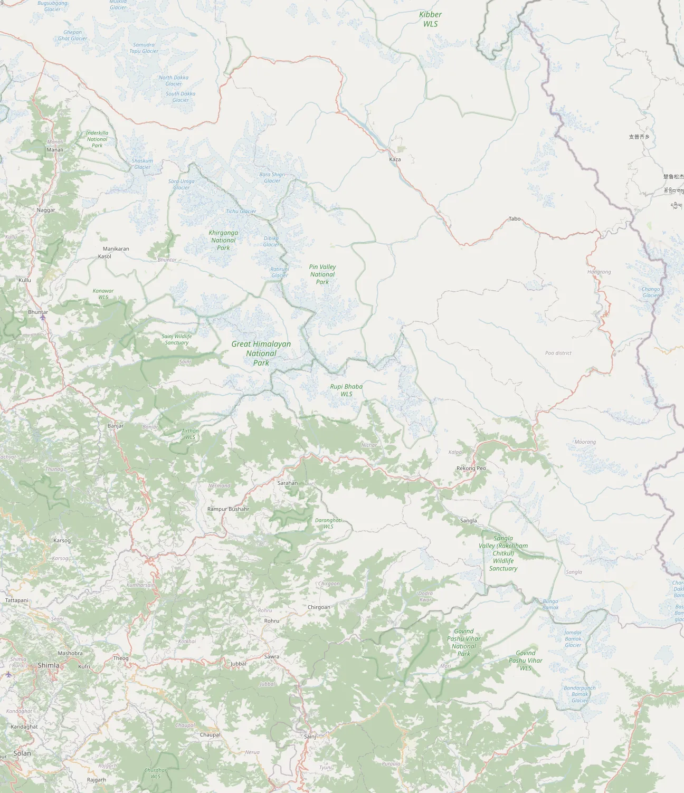
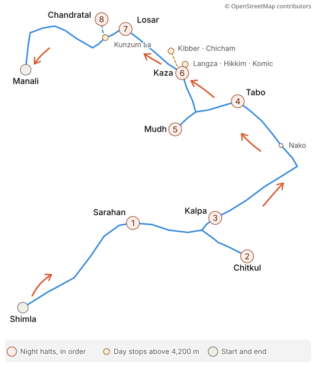
The Long Read
Shimla → Kinnaur → Spiti → Chandratal → Manali
A companion for the road, 16–24 September 2026
Open this once while you have signal and the whole site, pictures included, keeps working offline, which you will want past Reckong Peo.
How to use this
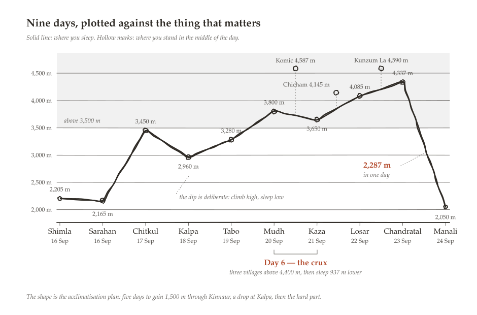
This is not a guidebook. It won’t tell you where to eat or when to leave. It is the other thing — the layer of history, geology, myth and old travel writing that sits underneath the road you are driving on, arranged in the order you will meet it.
Each chapter matches a stop or a leg. Read the chapter the night before, or in the car on the way. Nothing here needs to be read in sequence, but the book does have an argument, and the argument runs roughly like this:
The road you are on is one of the oldest arguments in Asia. It is the line where the Indian subcontinent physically ran into Asia, and it is also the line where India met Tibet, where Hinduism met Buddhism, where the Mughals met the Mongols, where the British met the Chinese. All of these collisions happened in the same 400 kilometres. Some of them are still happening.
A few recurring boxes:
- In the rock — what you are looking at, geologically
- The other story — the myth version, told as myth
- Who came through here — the surveyors, spies, monks and writers who did this before you
One request before you start. In Chapter 12 you will read about the fossils of Langza. Please don’t buy any. The reasons are in that chapter.
Contents
Before you go
| 0 | Deep Time | why the rock is what it is |
| I | The People of the Road | who lives here, and the history that isn’t on the plaques |
| — | Sidebar: A Note on Women |
Kinnaur · Days 1–4
| 1 | Shimla, and the Idea of a Road | Day 1 morning |
| 2 | Narkanda, Kotgarh, Rampur | Day 1, in the car |
| 3 | Sarahan | Night 1 · 16 Sep |
| II | How to Read a Kinnauri Village | buildings, clothes, crafts, crops, water |
| III | What You Will Eat | the chapter you’ll open most often |
| — | Sidebar: What You Will Hear | the music of the road |
| 4 | The Baspa Valley — Sangla, Kamru, Rakcham, Chitkul | Night 2 · 17 Sep |
| 5 | Kalpa, and the Mountain That Is a God | Night 3 · 18 Sep |
| IV | Who Came Through Here | the surveyors, spies and scholars |
| — | Sidebar: Your Body on This Road | altitude, sun, cold, sleep |
| 6 | The Road Itself | Day 4 · 19 Sep, the long drive |
| — | Sidebar: The Texture of a Driving Day | |
| V | A Biography of the Sutlej | where it comes from, and what comes down it |
| 7 | The Dams | the live argument in Kinnaur |
| VI | The Frontier, 1850 to Now | the Great Game, 1962, and why there are soldiers |
| VII | What Moved Over the Passes | the trade, and what killed it |
Spiti · Days 4–8
| VIII | How to Read a Monastery | read the night before Tabo |
| 8 | Tabo | Night 4 · 19 Sep |
| 9 | Dhankar and Lhalung | Day 5 · 20 Sep |
| 10 | Pin Valley | Night 5 · 20 Sep, Mud |
| 11 | Kaza and Ki | Night 6 · 21 Sep |
| IX | How a Spiti Village Works | the house, the year, the peas |
| X | Birth, Marriage, Death | names, weddings, and what happens when someone dies |
| — | Sidebar: Manners | the small things that are noticed |
| 12 | The High Villages | Days 6–7 · 21–22 Sep |
| XI | The Passes | the map under the road map, and Shilla |
| 13 | Losar and Kunzum La | Night 7 · 22 Sep |
| — | Sidebar: Light, Silence, Smell | |
| 14 | Chandratal | Night 8 · 23 Sep |
Out · Day 9
| 15 | The Chandra Valley | Day 9 morning |
| 16 | Lahaul | the valley you cross in two hours |
| 17 | Manali | arrival |
| 18 | What Is Happening Now | climate, water, tourism |
| — | Coda, and The Shelf | on the way home |
Back matter — A: Timeline · B: The Festival Year · C: What Is Alive Out There · D: Words
The eleven Interludes are the thematic chapters. If you only read three, read I (the people), III (food, which you’ll use daily) and VIII (how to read a monastery). Interlude VIII in particular will change what you see at Tabo, Dhankar, Ki and Komic, and it is wasted if you read it afterwards.
One thing to notice each day
If you read nothing else, carry these.
Day 1 · Shimla → Sarahan. The memorial at Jeori to the 122 men who died building this road. And, at Kotgarh, that the entire Himachal apple economy began with saplings one American planted about a century ago.
Day 2 · → Chitkul. The walls. Stone course, timber course, stone course, no mortar — the kath-kuni technique that survived the 1905 earthquake. Once you see it you cannot stop seeing it.
Day 3 · → Kalpa. Kinner Kailash at dawn, and the fact that Shiva’s winter residence and Padmasambhava’s footprint are eighty kilometres apart on the same road.
Day 4 · → Tabo. The exact stretch, somewhere past Nako, where the trees stop. You are crossing out of monsoon India. Also: a mud building from 996 CE that has never once closed.
Day 5 · → Mud. You are sleeping in the only valley on earth where the buchen exist.
Day 6 · → Kaza. Ammonites weathering out of a hillside at 4,400 metres. That hillside was the floor of an ocean. Don’t buy one.
Day 7 · → Losar. The Chicham bridge, and the thousand-foot gap that until 2017 was crossed by hauling yourself across on a wire.
Day 8 · → Chandratal. Kunzum La is the watershed: on one side the water goes to the Sutlej, on the other to the Chenab. And at the lake, the story of a man who refused heaven rather than abandon a dog.
Day 9 · → Manali. Three thousand metres down in a day. Watch for the exact point where the trees come back.
Deep Time
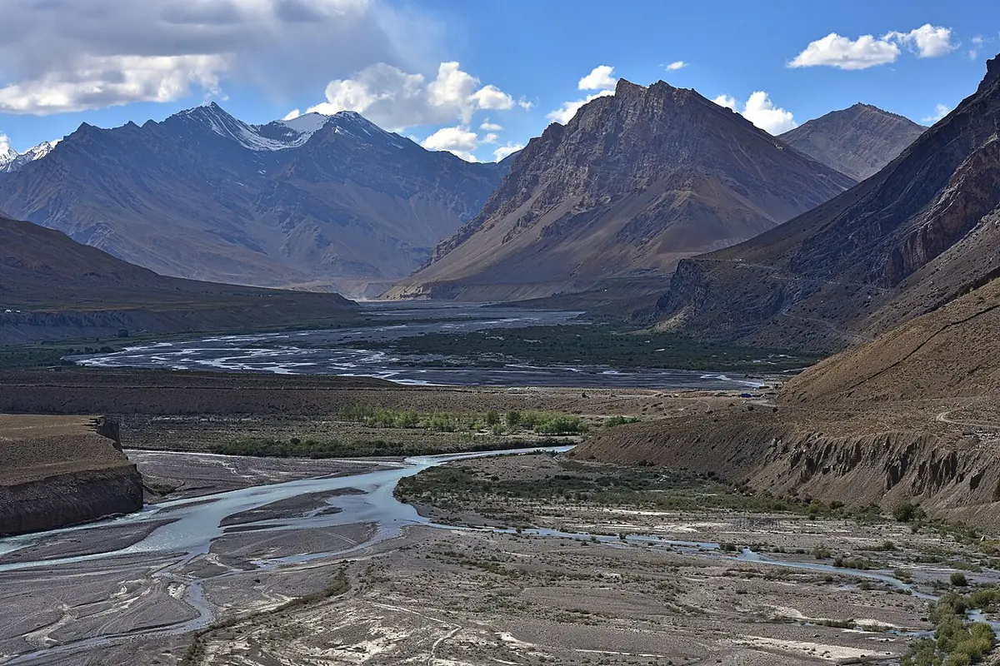
What the road is actually cutting through
Start with a fact that takes a moment to absorb. Everything you will drive through between Tabo and Kunzum La — the ochre cliffs, the grey shale, the whole enormous dry emptiness — was once the floor of a sea.
Not metaphorically. Literally the seabed.
For most of the Mesozoic, the landmass now called India was an island, drifting north across an ocean that geologists call the Tethys. Off its northern shore lay a broad, shallow continental shelf, the kind of warm carbonate platform you would find today off northern Australia. Things lived there: ammonites in coiled shells, belemnites, oysters, brachiopods, corals. They died, sank, and were buried in black mud. Over a hundred million years the mud compacted into rock. Geologists call one of those layers the Spiti Shale, and beneath it the Tagling limestone, both laid down in the Jurassic, roughly 150 to 200 million years ago.
Then India hit Asia.
The collision began around 50 million years ago, and it has not stopped. The Indian plate is still pushing north, and the mountains are still rising. The seabed was not destroyed in the collision — it was lifted, folded, and stacked, and it is now sitting at 4,400 metres above the sea it was deposited in. At Langza, children pick ammonites out of the hillside. Nothing on this road is more astonishing than that, and most people drive past it without noticing.
This is why the two halves of your trip look so different.
Kinnaur (Days 1–4) is on the southern flank of the Great Himalaya. It gets the monsoon, because the monsoon gets that far and no further. So: deodar forest, apple orchards, waterfalls, green. It is also structurally chaotic — sheared, faulted rock, over-steep slopes, and a river that has cut a gorge faster than the slopes can adjust. This is why Kinnaur slides. The landslides at Nigulsari and Chaura are not bad luck, they are the mountain doing exactly what the geology says it should do.
Spiti (Days 4 onward) is on the other side of the Himalayan crest, in what geographers call the Trans-Himalaya or the Tethyan Himalaya. The monsoon does not get here. It is a cold desert: under 200 mm of precipitation a year, most of it snow. Nothing grows unless someone irrigates it. What you see is the raw stratigraphy, unvegetated, with each layer legible from the road like the pages of a book seen edge-on.
The line between these two worlds is somewhere around Nako. You will feel it as a change in the air — the humidity drops away, your lips start to crack, and the colours go from green to brown, ochre, grey and violet.
The rivers, which explain the whole route
Your route is really a tour of the Sutlej and then the Chandra, and the difference between them is the point.
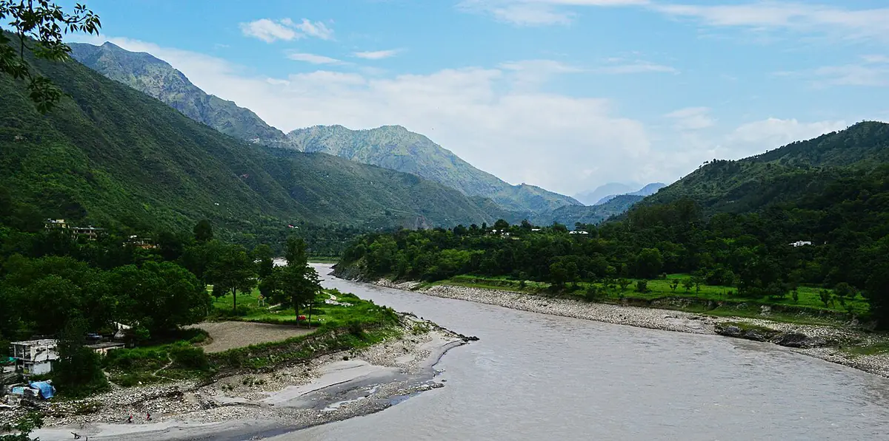
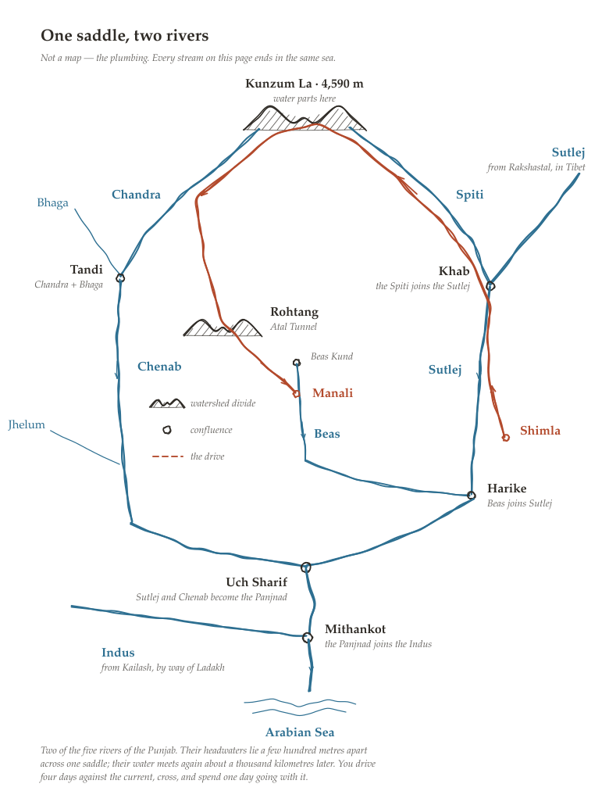
The Sutlej is older than the Himalaya. It rises near Mount Kailash in Tibet, on the far side of the main range, and then does something impossible: it cuts straight through the Himalaya to reach the plains. It could only do that if it was already flowing there before the mountains rose, sawing downward as they lifted around it. Rivers that do this are called antecedent. You are driving up an antecedent gorge from Shimla to Khab, which is why the walls are so sheer and the road so improbable.
At Khab, past Pooh, the Sutlej is joined by the Spiti river. From there you follow the Spiti upstream, deeper into the cold desert, to Kaza and Losar.
Then at Kunzum La you cross the watershed, and everything changes direction. On the far side, water flows into the Chandra, which runs west, meets the Bhaga at Tandi, becomes the Chandrabhaga, and eventually becomes the Chenab — one of the five rivers of Punjab and a river of Pakistan. At Chandratal you are camped beside the Chandra’s headwaters.
So: Days 1–7 you are in the Indus basin, drainage to Pakistan via the Sutlej. Day 8 you cross a pass and you are in the Chenab basin, drainage to Pakistan via a different river. Two of the great rivers of the Punjab begin within a day’s drive of each other, and the only thing separating them is Kunzum La.
The People of the Road
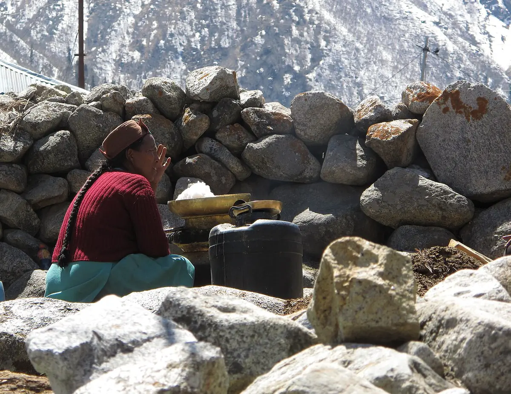
The trouble with a book like this is that it is very easy to write about a valley as though it were a collection of monasteries, passes and geological formations with some people incidentally standing around in it. That gets it backwards. The monasteries exist because people fed the monks. The terraces exist because somebody carried the soil. The road exists because somebody was made to build it.
So before the road starts, here is who lives on it.
The name “Spiti”
Spiti literally means “middle land”: a valley enclosed by mountain ranges and lying historically between the former powers of Bushahr, Kullu, Ladakh and Tibet.
There are older stories about the name too. One traces it to Ashwapati, a ruler associated with the Pin Valley in the time of the Mahabharata. Ashwapati means “lord of horses,” and the story fits a valley once known for good horses and for horse competitions on the Lidung plateau. In this telling, the “land of Ashwapati” gradually became the “land of Spiti.” Another explanation remembers a Tibetan dacoit called Spiti Thakur, whose territory was said to stretch from Tibet across Spiti toward Kullu. He was reputed to have built temples at Jagatsukh, near Manali, and at Hansa, north of Kaza.
There is a linguistic trace of an older Spiti as well. Local people traditionally pronounced the name “Piti,” with the S silent. With education and tourism, “Spiti” became increasingly common, and the older term “Pitoons” for the inhabitants gave way to “Spitian.”
Who they are
There is no single people on this route. There are at least four overlapping ones, and the transitions between them are gradual rather than sharp.
The Pahari belt (Shimla to Rampur). Hindi- and Pahari-speaking, overwhelmingly Hindu, organised around village deities. Agriculturally this is the apple belt now, and was a grain-and-livestock economy before.
The Kinnauras (Kinnaur, Days 2–4). A composite people, officially classified as a Scheduled Tribe. The old anthropological account layers them: Kiratas (the archaic Himalayan peoples of Sanskrit literature), Khasas, Indo-Aryan arrivals, and Bhotia populations in the upper valleys with Tibetan linguistic and cultural links. Kinnaur is not one linguistic community but several: Kinnauri in the lower valleys, Bhoti Kinnauri in the upper ones, and in Chitkul a language of its own, Chitkuli Kinnauri, spoken by a few thousand people and nowhere else on earth.
The Spitians (Days 4–8). Culturally, linguistically and religiously Tibetan. They speak Spiti Bhoti, a Tibetic language, write in Tibetan script, and their religious world is the western Tibetan Buddhist one. The border with China runs a short distance away and has been closed since 1962, which means these are Tibetans on the Indian side of a line drawn in 1684 and hardened in the twentieth century.
The Lahaulis (Day 9). Between the two worlds again: Buddhist in the upper valleys, Hindu-Buddhist mixed lower down, with their own languages (Bhoti, Manchad, Tinan, Bunan) and their own presiding mountain god, Gyephang, whose peak you will see from the Lahaul side of the tunnel.
Both Kinnaur and Lahaul-Spiti are Scheduled Tribe districts, which has real consequences: land in these districts cannot generally be bought by outsiders. When you notice that no chain hotels have appeared in Spiti, and that almost everything is a homestay or a locally owned guesthouse, that is why. It is one of the few places in India where the tourism boom has been structurally forced to stay in local hands.
The thing nobody tells you: caste is here too
Kinnauri society was, and to a degree still is, stratified. The dominant agricultural community are the Kanets (locally Rajput or Khasiya), who held the land. Below them sat a group of artisan and service communities — variously Koli, Chamang, Domang, Badhi, Lohar — who were the blacksmiths, the leatherworkers, the weavers, the carpenters and, importantly, the musicians.
That last one matters. At every temple festival, every deity procession, every wedding you might see on this road, the drums and the long horns are being played by people from the communities that were, until recently, not permitted to enter the temple whose god they were summoning. The music that makes the deity’s presence possible was the hereditary labour of people the deity’s shrine excluded.
Untouchability was formally abolished in 1950 and things have changed substantially. But temple entry disputes have occurred in Himachal within living memory, and the Scheduled Caste share of the population in Kinnaur is around a quarter — far from marginal. If you find yourself charmed by the deity system, hold both facts at once. It is a genuinely remarkable form of village democracy, and it was built on a hierarchy.
Spiti’s social structure is different — Tibetan Buddhist rather than caste Hindu — but not flat either. The Nono families were aristocracy. There were landholding households, tenant households, and hereditary low-status occupational groups including the beda, musicians again, and blacksmiths, who carried stigma in Tibetan societies much as they did in Hindu ones. The pattern of “the people who make the music are the people you don’t marry” turns out to cross religious boundaries.
The household, and why it is shaped like that
Almost everything unusual about social organisation in these valleys comes down to one problem: there is not enough land, and it must not be divided.
A Kinnauri or Spitian family holds a few terraced fields. Under ordinary partible inheritance, those fields halve every generation, and within three generations nobody can feed themselves. Every society in the high Himalaya independently solved this in the same three ways.
One: impartible inheritance. The land passes undivided, usually to the eldest son. The house, the fields and the name stay together.
Two: polyandry. If the brothers all marry the same woman, there is one household, one set of heirs, and one holding. Fraternal polyandry was widespread across Kinnaur, Spiti, Ladakh and Tibet, and this is why. It is now uncommon and declining, replaced by monogamy as the cash economy and outside employment have made land less decisive.
The version told locally is nicer: Draupadi and the Pandavas, who are said to have spent part of their exile here. Ask about polyandry in Kinnaur and you will usually get the Mahabharata before you get the economics. Both explanations are true in their own way — one describes the mechanism, the other describes how a community made sense of itself.
Three: the monastery. In Spiti, the classic pattern sent a younger son to the . He got an education, a livelihood and status; the family got religious merit and one fewer claimant on the land. The monastery got a continuous supply of monks. This is the economic engine underneath every whitewashed building you will photograph on this trip: the monasteries were not separate from the household system, they were part of it.
Daughters had a parallel route. The chomo — women who take vows but often live at or near home rather than in a formal nunnery — occupied an unusual position: religiously committed, economically productive, not married, not quite in the world and not quite out of it. Spiti has an active nunnery tradition and the are a real presence in village life.
All of which means: when you meet a family in Mud or Kibber and they mention a brother who is a monk at Ki, you are not hearing about a personal spiritual calling so much as about a thousand-year-old system of land management that also happens to have produced some of the finest art in Asia.
Begar: the grievance that made Himachal
This is the people’s history of the road, and it is the part the road does not commemorate.
Begar means forced, unpaid labour. In the Shimla hill states it was the basic mechanism by which the rajas — and then the British — got anything done, because there was very little cash and a great deal of mountain.
It took several forms. Road begar was compulsory porterage: villagers made to carry loads on their backs along mountain tracks, without pay. Building materials. Supplies. Furniture. Government files. The luggage of officials. Whatever needed to go up, a hill man carried. Beyond that there was agricultural and domestic labour owed to chiefs and jagirdars — working their land, staffing their households, providing for their ceremonies. Contemporary administrative writing is quite open that the customary ceremonies of the hill states could not have been performed without it.
When the British established supremacy over the hill rulers, they did not abolish . They recognised and institutionalised it, because it was extremely convenient. The Shimla summer capital, that whole absurd annual migration of a government up a hill, ran substantially on the backs of conscripted hill men.
Related obligations ran alongside it: bethu, unpaid service to a landlord in exchange for a homestead; and reet, a custom under which a woman could effectively be purchased for marriage, with the state taking a fee.
Lord Dalhousie’s supposed sympathy for the porters of the hill roads — one of the two reasons given for commissioning the Hindustan–Tibet Road in 1850 — should be read against this. He was troubled by the men carrying loads. The road they got was built by conscripted labour and used to move more loads more efficiently.
The revolt
Resistance was continuous and local, and it eventually became the freedom movement of the hills.
The pattern repeats across the nineteenth and early twentieth centuries: Chamba in 1895, against forced labour and the exactions of the raja’s wazir; Beja and Theog in 1898; Baghal from 1897; Suket in 1924, led by Ratan Singh of Banaik, against forced labour and excessive taxes. In Bushahr — your kingdom, Days 1 to 4 — the Dumha movement centred on Rohru was a collective non-cooperation against cash land taxes, in which peasants took their children and cattle into the forest and simply left, refusing to return until their demands were met. They won.
In 1920, Satyanand Stokes — the apple man from Kotgarh — and Babu Kanshi Ram of Kunihar launched a movement to end begar in the Shimla hills. This is the same man from Chapter 2, and it is the more important half of his story. An American who had come to convert people ended up organising them against a system the British had institutionalised, and was jailed for it.
The Praja Mandal movements followed in the 1930s and 1940s — people’s associations demanding responsible government in the princely states. Their standing charter of demands was almost identical everywhere: civil liberties, abolition of begar, a large cut in land revenue, recognition of the , and responsible government. Bushahr’s own Praja Mandal became effective from 1945.
At Dhami in 1939, a Praja Mandal procession presenting exactly those demands was fired on. It was the first firing tragedy in what is now Himachal, and it drew national attention — Gandhi and Nehru both took it up.
After independence, the Suket Satyagraha of February 1948 broke the princely states within a week. Ruler after ruler signed merger agreements. On 15 April 1948 the Chief Commissioner’s Province of Himachal Pradesh came into existence out of some thirty princely states, and Bushahr — Kamru, Sarahan, Rampur, a dynasty claiming a hundred and ten kings back to Krishna’s son — ceased to be a state.
And begar was abolished, regulated, and banned.
Himachal became a Union Territory in 1956 and a full state on 25 January 1971, under Y. S. Parmar, the doctor of law from Sirmaur who had led the Praja Mandal movement and became its first chief minister.
So when you drive this road, hold two things together. It is a spectacular piece of nineteenth-century engineering. It was also, for the people who live beside it, an instrument of extraction before it was anything else, and the campaign to end that extraction is one of the founding stories of the state you are driving through.
The village god
The other thing you need before Day 1 is the deota system, because it is the actual government of these valleys in a way that is hard to overstate.
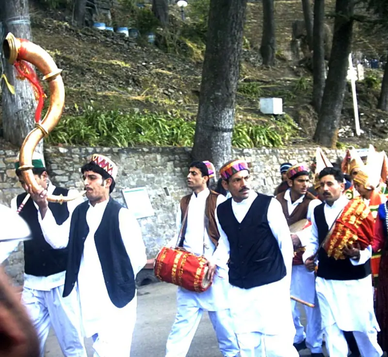
Every village, and often every hamlet, has a deity. The deity has a physical form — usually a rath, a palanquin of carved wood and precious metal hung with masks and cloth, carried on poles by a team of men. The deity has a staff: a gur (oracle, who is possessed and speaks for the god), a pujari, musicians, a treasurer, and a village committee.
And the deity has powers. Real ones. Village deities in Himachal settle disputes, approve or forbid marriages, decide when the sowing begins, adjudicate land quarrels, bless or refuse new construction, and travel to each other’s festivals to confer. Deities have opinions on roads, dams, mobile towers and outsiders. In several documented cases in Himachal, development projects have been stalled or modified because a deity, speaking through a gur in front of the whole village, said no.
This is not folklore performed for tourists. It is a parallel legal and political system, several thousand years older than the district administration, and it is generally obeyed.
When you see men carrying a decorated palanquin at a jostling, rocking half-run, with long horns and drums, you are watching a god travel. Stand aside, don’t block the path, don’t get in front for the photograph, and if the rath rocks violently, understand that the god is answering a question.
On Day 2 at Kamru and Day 3 at Kalpa you are in country. On Day 9 in the Kullu valley you will be in the densest concentration of it in the world, where several hundred deities gather annually for Dussehra. It runs the whole length of the road.
Language: the least you can carry
Nobody expects you to speak Kinnauri or Bhoti. But a couple of words used correctly changes the temperature of an encounter completely.
In Spiti and upper Kinnaur (Buddhist areas):
- Juley (JOO-lay) — hello, goodbye, thank you, please. A universal Ladakhi-Tibetan courtesy, understood everywhere up here. Use it constantly.
- Tashi delek — a warmer, more formal greeting; auspicious wishes.
- Thugje che — thank you.
In Kinnaur (Hindu areas) and everywhere:
- Namaste works. Elders may be greeted with a slight bow.
Everywhere:
- Gompa — monastery. Lama — monk or teacher. Chorten — stupa. Khata — ceremonial scarf. Cham — masked ritual dance. Bardo — the intermediate state after death. Tsa-tsa — small clay votive object. Jhator — sky burial. Mani wall — a wall of carved prayer stones. La — a pass (so “Kunzum La” already means “Kunzum Pass”; “Kunzum La Pass” is saying it twice).
- Nono — the hereditary ruler of Spiti. Gur — an oracle. Rath — a deity’s palanquin.
- Chhang — barley beer. Arak — the distilled version. Tsampa — roasted barley flour, the staple.
One usage note. People here are not “tribals” in conversation, they are Kinnauri or Spitian. And Spiti is not “Tibet” — saying so to a Spitian is like calling an Irishman English. They are Indian citizens with a Tibetan cultural inheritance, and for many families the distinction has been politically consequential since 1962.
Shimla, and the Idea of a Road
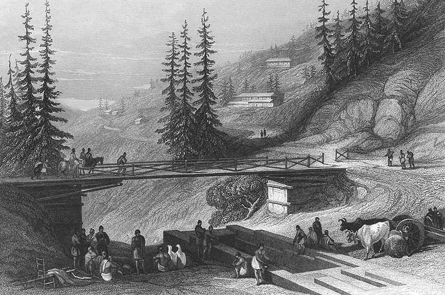
The town that ran an empire on a ridge
Shimla makes very little sense as a capital city. It sits on a narrow ridge at 2,200 metres, fifty miles from the nearest railway of the period, reachable only by a road that a cart could barely use. Yet from the 1860s to 1947, for several months every year, the government of British India packed itself into carts and moved here — the Viceroy, the Commander-in-Chief, the departments, the files, the clerks, the whole apparatus of a state governing a fifth of humanity, hauled up a hill to escape the heat.
Nothing about the place is accidental. The Mall, the Gaiety Theatre, the Anglican church, the half-timbered cottages, Viceregal Lodge with its grey Scottish stone: this is a small English town built at altitude by people who missed home and had the resources to manufacture it. Kipling worked here as a journalist and set a great deal of his early fiction here — Plain Tales from the Hills is essentially Shimla gossip, transcribed and sharpened, and its subject is the peculiar social hothouse that formed when a few hundred bored, powerful people were confined to one ridge for a season.
But Shimla is not where your road starts. Your road starts with a decision made in Shimla.
The Great Hindustan–Tibet Road
In June 1850, Lord Dalhousie, then Governor-General, ordered work to begin on a road from the plains to the Tibetan frontier. It was styled the Great Hindustan–Tibet Road, and the ambition was extraordinary: arguably the first major highway commissioned in India since Sher Shah Suri’s Grand Trunk Road three centuries before, and certainly the first serious mountain highway in this part of the world.
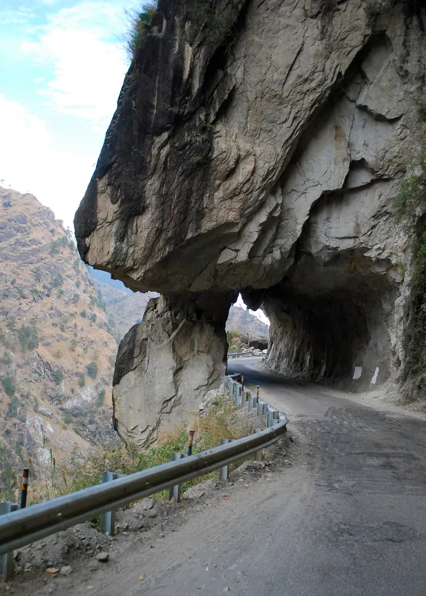
Two reasons are usually given, and both are probably true.
The official reason was trade with Tibet. The commodities that came down from the Tibetan plateau were valuable and light: pashmina wool, borax, musk, salt, gold dust, semi-precious stones. Going the other way went grain, cloth, sugar, and eventually tea. Whoever controlled the passes controlled the margin. The British wanted it.
The stated reason was more sympathetic, and slightly implausible. Dalhousie is said to have been appalled by begar, the system of forced unpaid labour under which hill people were conscripted to carry loads — timber, supplies, government files — up to Shimla on their backs. He wanted, the story goes, to build a proper road so the men who trudged it would suffer less. Whether or not he meant it, the road was built largely by exactly the kind of labour he claimed to pity.
The Commander-in-Chief, Sir Charles Napier, worked on the alignment. East India Company resources were thrown at it. From Shimla to Shipki La on the Tibet border came to about 228 miles.
The early trace went Shimla → Fagu → Theog → Matiana → Narkanda → Kotgarh → Rampur → Sarahan → Nichar → Wangtu → Chini (now Kalpa) → Rarang → Akpa → Jangi, and from Jangi onward it degraded into a rough track through Labrang, Sugnam and Namgia to the pass itself. In those days the road took the high spurs. Today it mostly follows the valley floors, which is why you will be driving alongside the Sutlej rather than above it.
Two things worth carrying with you as you drive:
The road was never really finished, and never will be. It has been under continuous construction for 176 years. What you will see — the tracked excavators parked in laybys, the shuttered stretches, the men with shovels — is not maintenance, it is the ongoing condition of the road.
People died building it, and are named. At Jeori, where the fork climbs to Sarahan, there is a memorial to 122 men who died in the construction of this road. You will pass it on Day 1. It is easy to miss.
How the move actually worked
It is worth pausing on the logistics, because they are insane.
Twice a year, the government of British India relocated. Not symbolically. The Viceroy, the Commander-in-Chief, the Foreign Department, the Army Department, the Home Department, the secretariat, the clerks, the records, the treasury and the printing presses all went up to Shimla around March and came back down to Calcutta — and after 1911, Delhi — around October.
The files went in boxes on the backs of men. The furniture went the same way. Before the Kalka–Shimla railway opened in 1903 this meant carts to Kalka and then a tonga road, and before the tonga road, porters the whole way. Estimates of the number of people involved in supporting the annual migration run into the many thousands.
The system that supplied those porters was begar (Interlude One). This is the part the Mall does not mention.
Shimla was also, for several months a year, the effective capital of a fifth of humanity — arguably making it the only hill station in history to govern a subcontinent. Decisions taken on this ridge determined policy in Burma, Aden, the Persian Gulf and Tibet.
The Kalka–Shimla railway, and Baba Bhalku
The narrow-gauge railway from Kalka opened in 1903: 96 kilometres, over 800 bridges, and more than a hundred tunnels. It is now a UNESCO World Heritage Site as part of the Mountain Railways of India.
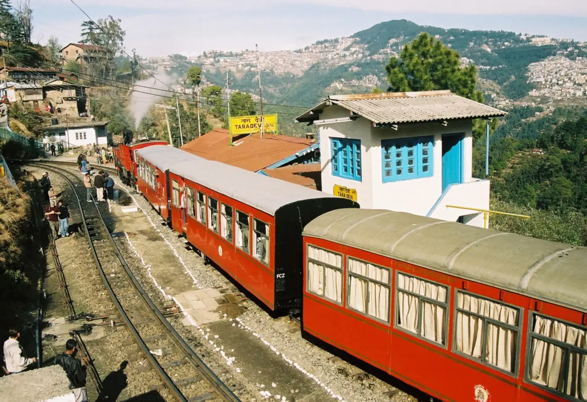
Attached to it is the story of Baba Bhalku, a local man from the Solan area, illiterate and by tradition mystically gifted, who is credited in Himachali memory with guiding the British engineers through terrain that had defeated them — reputedly by walking the alignment with a stick and indicating where the tunnels should go. There is a railway museum named after him in Shimla.
How much of this is history and how much is folk correction of a colonial record that erased Indian contributions is impossible to untangle, and the ambiguity is itself the point. The record we have is the engineers’. The memory that survives locally is Bhalku’s.
Two conferences
Shimla appears twice in the political history of modern South Asia, both times in ways that shaped the region you are about to drive through.
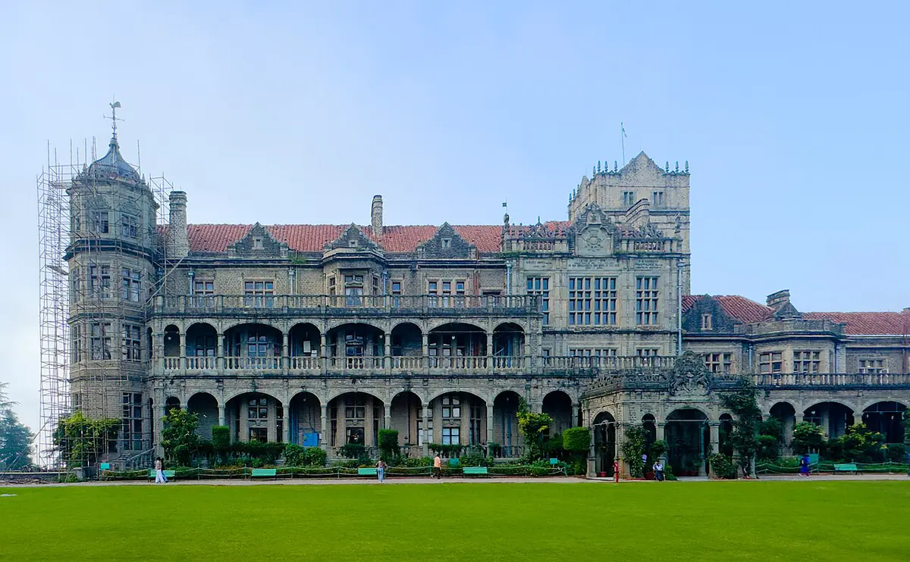
The Simla Conference, 1945. Viceroy Wavell convened the Congress and the Muslim League at Viceregal Lodge to try to agree an interim government. It collapsed over the question of who could nominate Muslim members. Most historians treat its failure as one of the decisive steps towards Partition. You can walk through the room.
The Simla Agreement, 1972. Indira Gandhi and Zulfikar Ali Bhutto met here after the 1971 war and signed the agreement that converted the Kashmir ceasefire line into the Line of Control and committed both sides to resolving disputes bilaterally. It remains the reference document for India–Pakistan relations, and it was signed on this ridge.
Scandal Point, and the social machine
At the junction of the Mall and the Ridge is a spot called Scandal Point. The story attached to it is that a Maharaja of Patiala eloped from here with the daughter of a British Commander-in-Chief, and was subsequently barred from Shimla — a story with several versions and not much documentation.
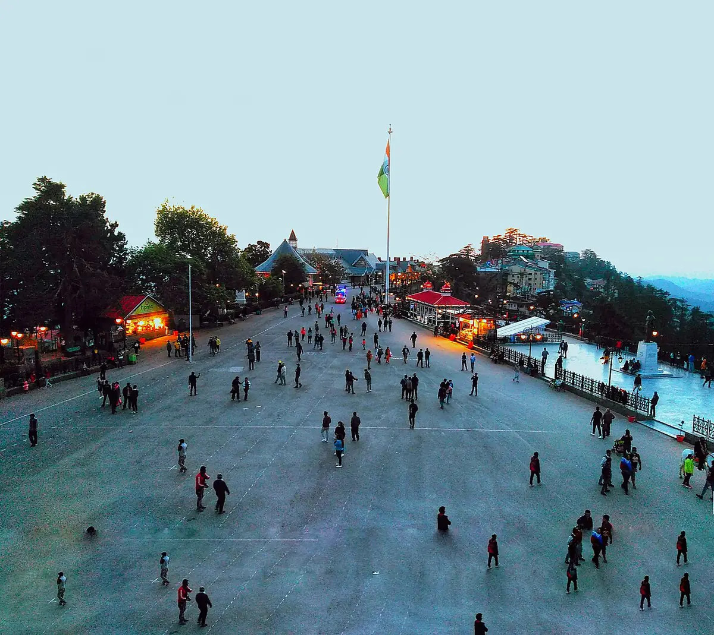
Whether or not it happened, the name tells you what Shimla was: a hothouse of a few hundred powerful, bored people confined to one ridge for a season, in which reputation was the currency and gossip was the market. This is Kipling’s raw material. Plain Tales from the Hills is, essentially, field notes.
If you have a spare hour before leaving, Viceregal Lodge (now the Indian Institute of Advanced Study) is genuinely worth it, and the Gaiety Theatre on the Mall, restored, has been in continuous use since 1887.
Narkanda, Kotgarh, Rampur
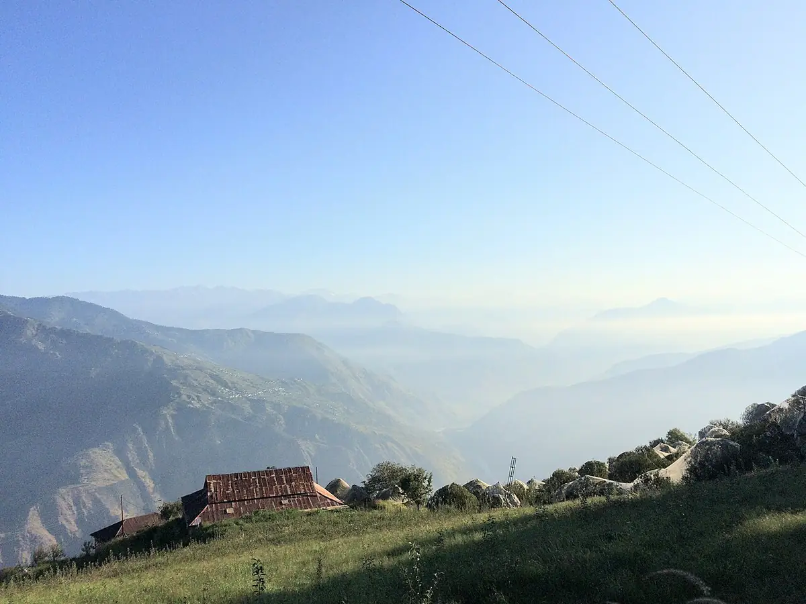
Places on this map
- Shimla · start / end
- Fagu · stop
- Theog · stop
- Narkanda · stop
- Hatu Peak · in the text · Hatu Mata temple
- Kotgarh · in the text
- Nirath · in the text · sun temple
- Rampur · stop
- Jeori · in the text · memorial to the 122 road-builders; drawn at the Sarahan turn-off, exact spot to confirm · position approximate
- Sarahan · night halt
The first two hours
For the first stretch out of Shimla you are in deodar forest, and this is the part of the drive that looks most like the Himalaya of the imagination — dark cedar, rhododendron, hill villages with slate roofs and carved wooden balconies. This is also the greenest you will see for the next eight days. Take a proper look.
At Narkanda (2,700 m) the road crosses a ridge and the view opens north to the snow line for the first time. Then it drops, steeply, into the Sutlej valley, and you lose about 1,800 metres of altitude in a couple of hours. This descent is disorienting: you leave Shimla going up, and arrive at the river going sharply down, and it will not feel like you are on a road into high Tibet at all. You aren’t yet.
Kotgarh, and the man who gave Himachal its economy
Just off the road near Narkanda is Kotgarh, and the story here is one of the strangest in modern Indian history.
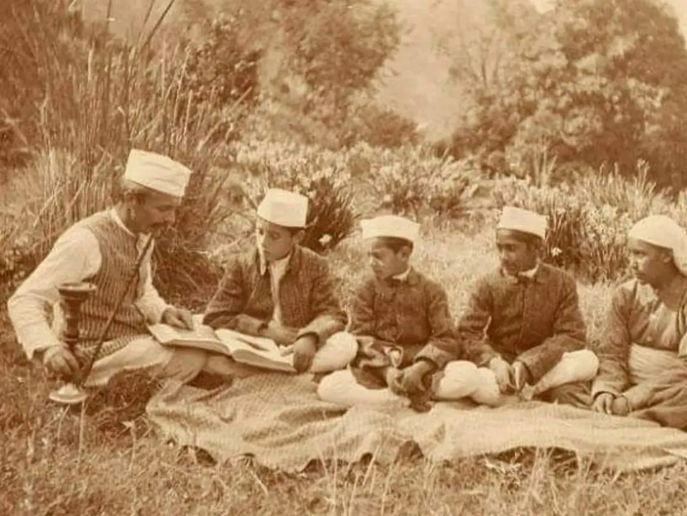
In 1904, a 22-year-old American named Samuel Evans Stokes Jr. arrived in India. He came from a wealthy Philadelphia Quaker family — his father had made a fortune manufacturing elevators — and he had come, over his parents’ objections, to work at a leprosy home at Subathu in the Shimla hills.
He did that for two years and grew disillusioned with organised mission work. He lived for a time as something close to a hermit. He went to Kangra after the 1905 earthquake and helped with relief. He married a local Christian woman, Agnes Benjamin, and settled at Kotgarh. In 1932 he formally converted to Hinduism and took the name Satyanand.
In between, he did the thing he is remembered for. In the mid-1910s, having concluded that the climate and soil of the Shimla hills were right for it, he imported apple saplings from the Stark Brothers nursery in the United States — the Delicious variety — and planted them at Barobagh near Kotgarh. He had gone to America with soil samples first, to check. The trees began bearing within about a decade. And then, crucially, he did not keep it to himself. He gave saplings and knowledge to his neighbours and pushed them to plant.
The result is the landscape you are driving through. Apples are now the backbone of the Himachal hill economy, grown across most of the state’s districts, and the industry traces to that one orchard. Through Kinnaur you will see apple crates stacked by the roadside in September — this is peak harvest — and trucks running them down to the plains. That entire economy is roughly a century old and began with an American who couldn’t settle on a religion.
There is more to Stokes than apples. He joined the Indian National Congress, attended the Nagpur session in 1920, and was jailed by the British for his political activity — the only American to serve a prison sentence in the cause of Indian independence. Gandhi knew him and praised him. He built a temple, Paramjyoti, on his estate. His descendants still live at Kotgarh.
Kipling had been in this valley earlier, and set his short story “Lispeth” at Kotgarh, about a hill girl raised by missionaries and destroyed by a casual English lie.
Rampur Bushahr
Down at the river is Rampur, which was the winter capital of the kingdom of Bushahr — the state whose territory you will be inside for the next three days.
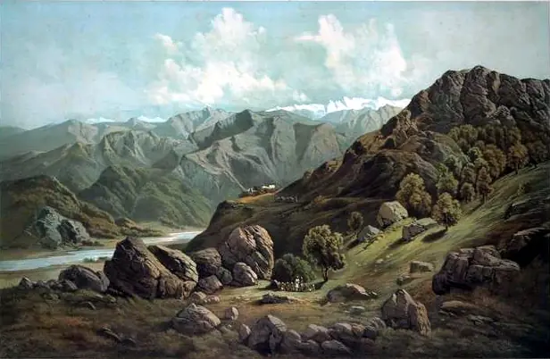
Rampur’s importance was the Lavi fair, held in November, one of the great trans-Himalayan trade fairs. Traders came down from Tibet, Ladakh, Kinnaur and Spiti with wool, pashmina, horses, dried fruit, borax and salt, and went back with grain, cloth and manufactured goods. The fair still runs. It is now mostly a horse-and-handicraft affair, but for centuries it was the point at which the economy of the Tibetan plateau was converted into the economy of the Indian plains.
You will notice, driving through, that the Sutlej here is not beautiful. It is being worked hard. Nathpa Jhakri and Karcham Wangtoo are among the largest hydroelectric projects in India, and much of the river’s water spends much of its journey inside tunnels bored through the mountain. What you see in the riverbed is often what is left over. This is one of the genuine arguments of modern Kinnaur — the projects brought roads, money and jobs, and they are also blamed locally for slope instability, dust, cracked houses and the drying of springs. You will hear both versions if you ask.
Hatu Peak, and a temple worth the detour
Above Narkanda a rough road climbs to Hatu Peak (about 3,400 m), where there is a small wooden temple to Hatu Mata, identified locally with Mandodari, Ravana’s wife. It is a short detour and gives you the first proper Himalayan panorama of the trip. If the morning is clear and you are early, it is worth the hour.
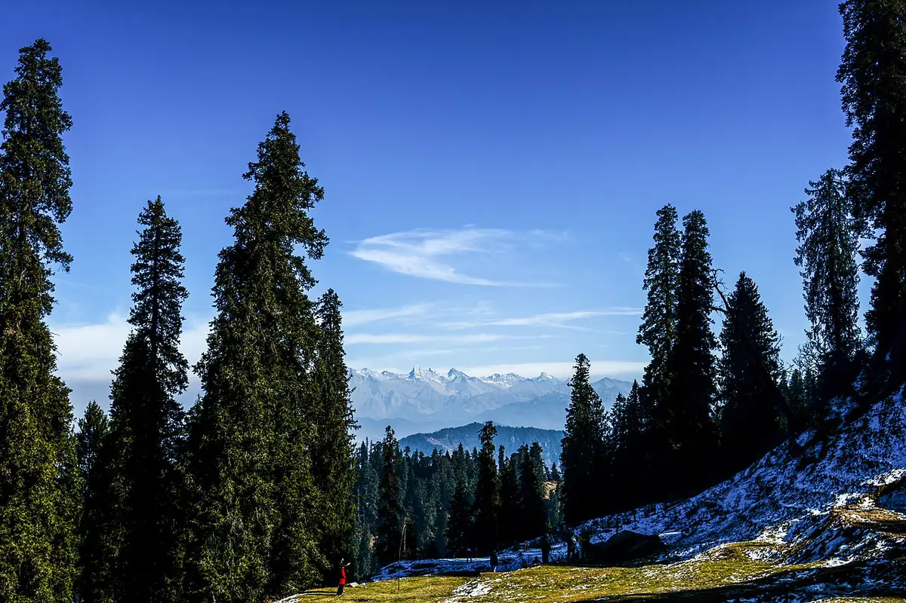
Near the temple is a flat rock formation known as Bhim Chulha — “Bhima’s hearth” — said to be where the Pandavas cooked during their exile. You will meet the Pandavas again at Kamru, at Chandratal and at Manali. They are the connective tissue of the entire route’s mythology.
Nirath, and a sun temple nobody visits
Between Narkanda and Rampur, at Nirath on the bank of the Sutlej, there is a stone temple to Surya, the sun — probably ninth or tenth century, in the stone shikhara idiom of the plains rather than the wooden pagoda idiom of the hills.
That is what makes it interesting. It is one of very few surviving sun temples in North India, and it sits in a valley whose architecture is otherwise entirely timber. Somebody, a thousand years ago, built a plains temple here in plains style, which tells you that the connection down the Sutlej to the Gangetic world was live and strong long before Dalhousie’s road.
It is right beside the highway and almost nobody stops.
Sarahan
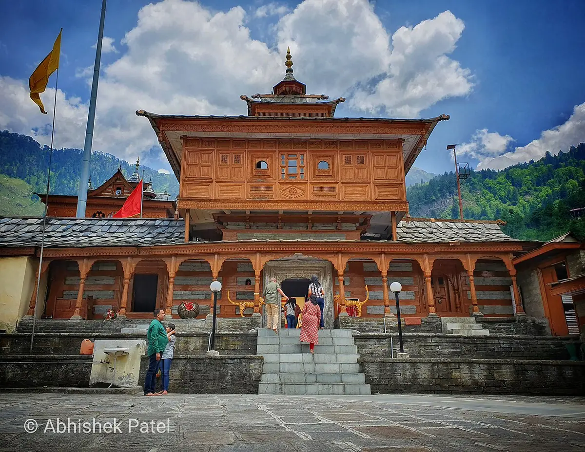
The summer capital of a mountain kingdom
Sarahan sits on a shelf above the Sutlej gorge with the Srikhand Mahadev massif filling the sky to the north. It was the summer capital of Bushahr, with Rampur down at the river as the winter capital, and the reason it matters is the temple in the middle of it.
Bhimakali
The Bhimakali temple is one of the finest wooden buildings in the Himalaya and among the most important religious sites in Himachal. It is built in kath-kuni style, a construction method you will see all the way through Kinnaur and should learn to recognise: alternating horizontal courses of dressed stone and deodar beams, dry-laid, no mortar, with the timber acting as a tension layer running through the masonry.
This is not decoration. It is earthquake engineering, arrived at empirically over centuries. Rigid masonry cracks and collapses in a quake; the timber courses let the wall flex and absorb energy. In the 1905 Kangra earthquake, which killed tens of thousands, Bhimakali’s main tower tilted — and then, the story goes, straightened itself in a later tremor. Whether or not that particular detail is true, the building is still standing, which is the relevant fact.
The complex has twin towers, one older than the other, gold- and silver-plated doors, and a multi-tiered slate roof. Bhimakali is the kuldevi, the clan goddess, of the Bushahr royal family, and the temple is counted among the fifty-one Shakta pithas. The current form owes much to reconstruction under Raja Padam Singh in the early twentieth century.
Look closely inside and you will find something that is easy to miss and tells you everything about where you are: Hindu and Buddhist images in the same building. Bronzes of both traditions, decoration drawing on both. Sarahan is the last place going up the valley where Hinduism is unambiguously dominant, and the Buddhist objects here are the first hint of the world you will be in by Day 4. The temple sits directly on the old Indo-Tibetan road, and trade brought the images.
What Sarahan is actually like
Mild. Green. Apple orchards, deodar, rain quite possible in mid-September. You will feel you have over-packed. Hold that thought for six days.
The pheasantry, and a very odd bird
Beside the temple complex is a small government pheasant breeding centre, and it is worth ten minutes.
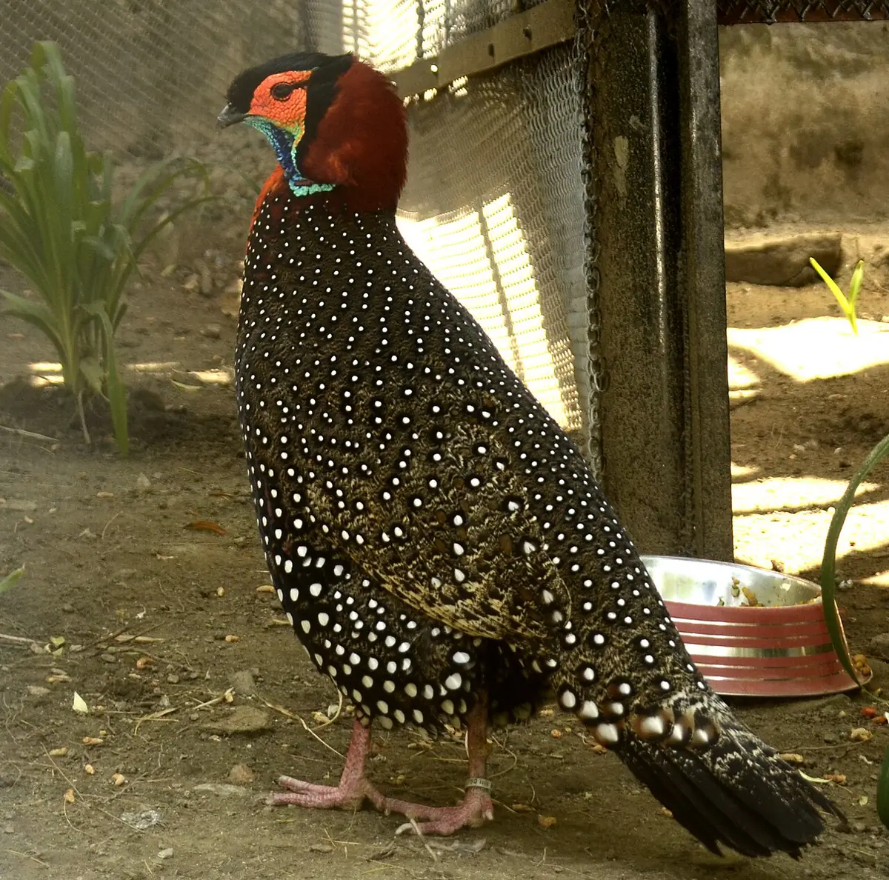
The reason is the Western tragopan — Tragopan melanocephalus, the state bird of Himachal Pradesh, locally called jujurana, “king of birds”. The male is black, spotted white, with a blood-red neck and, in display, two blue fleshy horns and an inflatable blue-and-red bib that it unfurls like a piece of Renaissance tailoring. It is one of the most spectacular birds in Asia and one of the most endangered, confined to a narrow band of the western Himalaya, with a substantial share of the surviving population in the forests around here and in the Great Himalayan National Park.
Sarahan’s centre is one of the few places on earth where they have been bred in captivity. Seeing one in the wild is a serious ornithological achievement. Seeing one here takes five minutes and costs almost nothing.
What the Bushahr kings actually did
It is easy to say “the kingdom of Bushahr” and leave it as a word. Some texture.
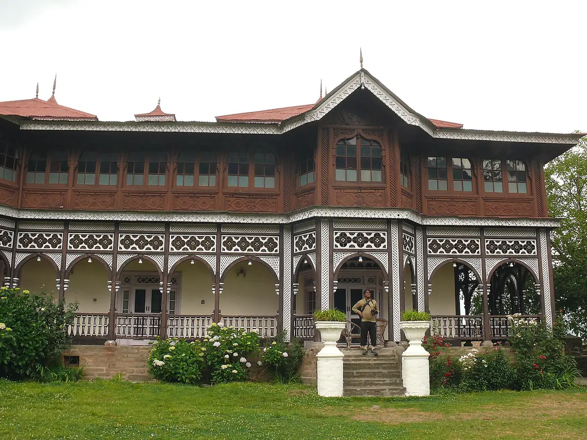
Bushahr was one of the larger of the Simla Hill States, a cluster of around thirty small principalities in these mountains — Bushahr, Keonthal, Jubbal, Bhagal, Dhami, Kunihar, Balsan, Theog and the rest — most of them tiny, some of them a single valley, all of them nominally sovereign and practically dependent.
Bushahr’s peculiarity was reach. By controlling the Sutlej valley up to the Tibetan frontier it controlled the trade, and its involvement in the 1679–84 war got it upper Kinnaur. That gave it a length of about 200 kilometres of mountain and a border with Tibet, which mattered enormously to the British after 1815, when they displaced Gurkha power in these hills and began dealing with the hill rajas directly.
The state ran on land revenue, transit dues on trade, and begar. Its capital moved from Kamru to Sarahan and then to Rampur as the centre of gravity shifted from the high valleys down to the river and the fair. It kept a court, a wazir, a small force, and a very strong relationship with its clan goddess.
The Raja was, in a real sense, the goddess’s officer. Bhimakali’s sanction underwrote the dynasty’s legitimacy, and the relationship between temple and throne here was not decorative. When the state merged into India in 1948, the family continued; Virbhadra Singh, son of the Raja Padam Singh who rebuilt this temple, went on to be chief minister of Himachal Pradesh six times, and was known throughout his political life as Raja Sahab.
Which means the dynasty that traces itself to Krishna’s son, that ruled from a fort at Kamru, that fought a Tibetan general in 1679, ended up running the state government until well within living memory. That is an unusually smooth transition from divine kingship to electoral politics.
How to Read a Kinnauri Village
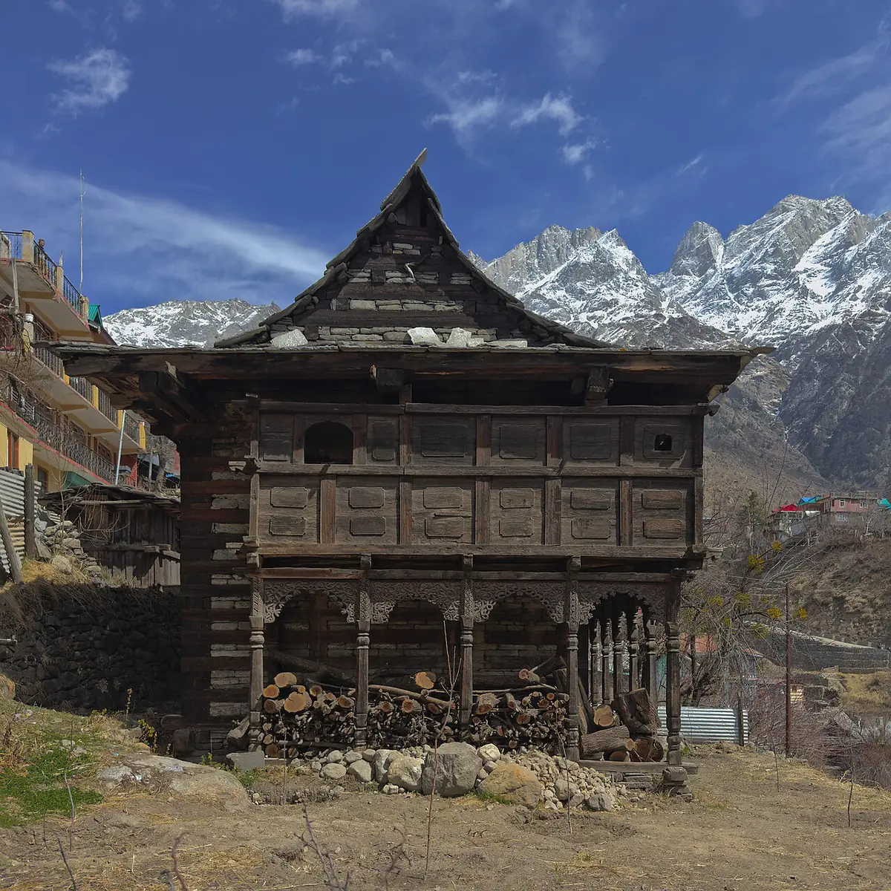
Once you know what you are looking at, a Kinnauri village stops being picturesque and becomes legible. Here is the grammar.
The buildings: kath-kuni
The technique is called kath-kuni — from kath (wood) and kuni (corner) — and once you see it you will see nothing else all the way to Nako.
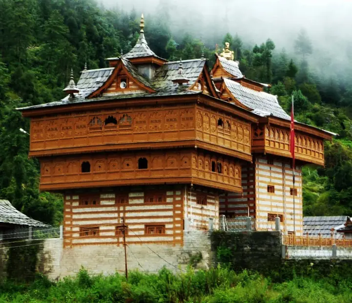
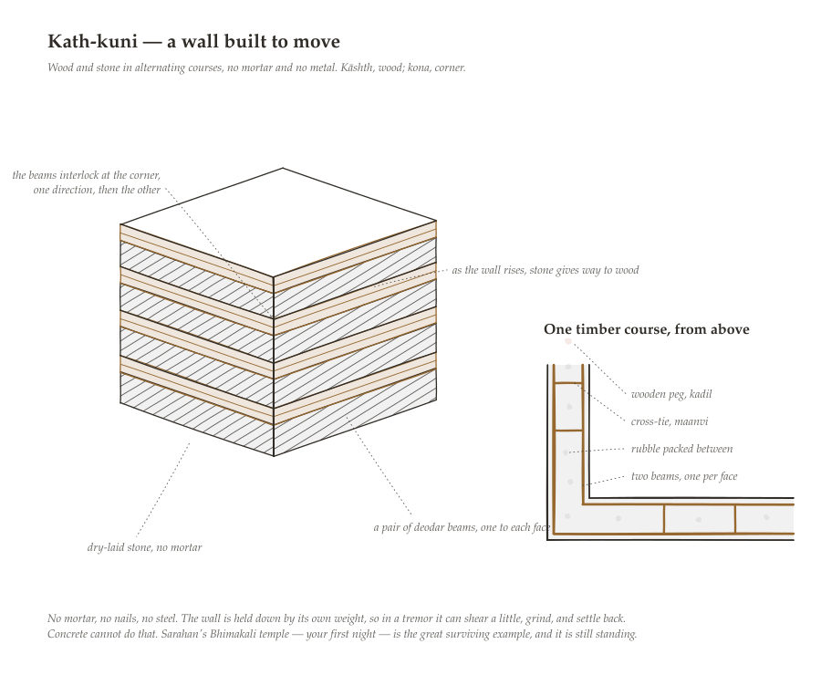
How it works. Alternating horizontal courses: a layer of dressed stone, then two parallel deodar beams laid along the wall with a gap between them, then stone filling the gap and forming the next course, then two more beams. The beams are joined at the corners with interlocking dovetail joints. There is no mortar anywhere. The whole wall is held by gravity, friction and joinery.
Why it works. In an earthquake, a mortared masonry wall is brittle: it cracks and then it falls. A wall is a composite. The timber courses take tension, which stone cannot; the mass of the stone gives it damping; and because the joints are dry, the whole structure can flex and slide a little and absorb energy instead of shattering. It is, in engineering terms, a base-isolated confined-masonry system arrived at without a single equation.
The proof is standing in front of you. The 1905 Kangra earthquake — magnitude around 7.8, tens of thousands dead — did comparatively little damage to kath-kuni buildings across the hills, including Bhimakali at Sarahan, whose tower tilted and stayed up. Modern concrete buildings in the same valleys have since performed considerably worse.
What to look for:
- The banding. Stone-wood-stone-wood, like a layer cake, is the signature.
- Dovetailed corners. The cross-lapped beam ends projecting at the corners.
- Slate roofs on heavy timber, steeply pitched to shed snow.
- Carved balconies and window screens, often extraordinary, on the upper floors, which were the living floors; the ground floor was for animals, whose body heat rose.
- Storage above, grain and fodder in the loft.
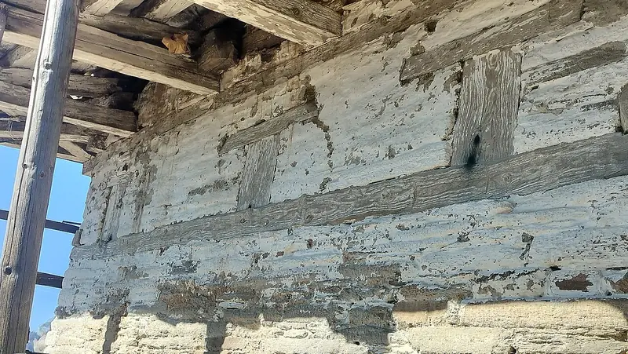
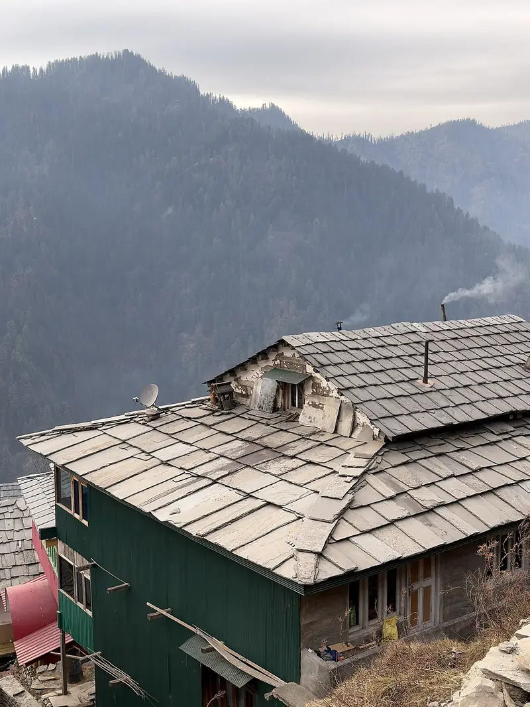
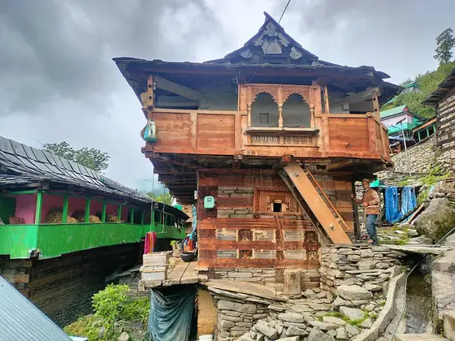
Kath-kuni is in decline for two reasons: deodar is protected and expensive, and concrete is faster and reads as modern. Conservation architects have been trying for years to make the case that the old system is better suited to a seismic zone than the new one. The government has begun to listen; the market has not.
The temples
Kinnauri and Himachali temples are wooden pagodas, not the stone shikhara temples of the plains. Tiered roofs, deep eaves, carved wooden facades, a courtyard, and often a pole or a metal standard.
The reasons are practical and cultural at once: timber, snow load, seismicity, and a tradition of woodcarving that ran continuously for a thousand years. What is unusual, and worth noticing at Bhimakali and again at Hidimba in Manali on Day 9, is that the same architectural language covers deities from very different traditions. This is a regional style, not a sectarian one.
The clothes
Not a costume. Daily wear, still, especially among older people and always at festivals.
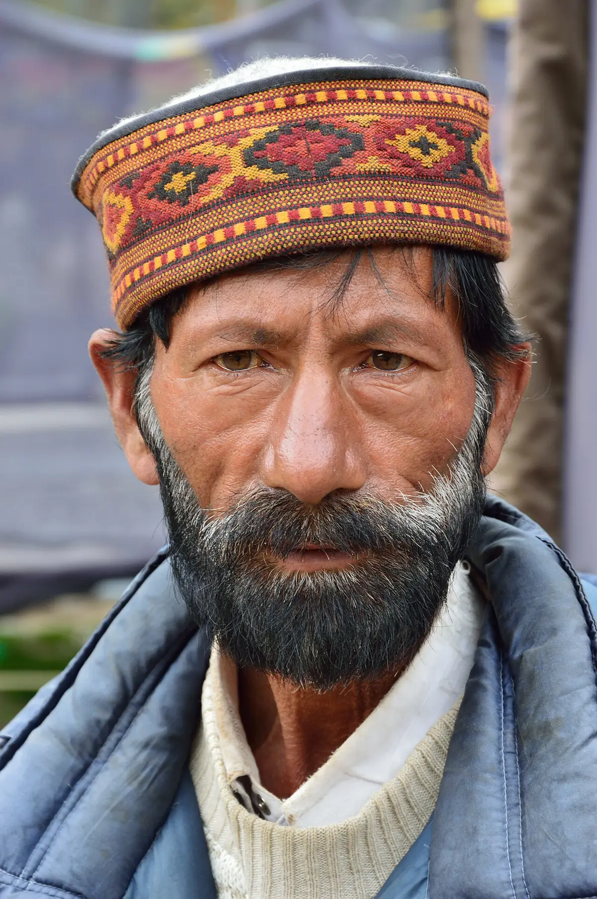
The cap. The Kinnauri topi is the emblem of the district — a flat-topped round woollen cap with a broad band of coloured velvet folded up around it. The band’s colour carries meaning locally, and it is worth knowing that the green-banded cap is generally the Kinnauri one and the maroon-banded cap is the Bushahri or Shimla-hills style, though this has become politically inflected in Himachal and people will tell you different things.
The shawl. Kinnauri shawls and pattus are woven in geometric bands of colour and are among the best textiles in the Himalaya. A real one is expensive because it took a very long time.
The rest. Chamu kurti — a woollen shirt. Chamu sutan — long woollen trousers, worn by men and women. Gachhang — a cloth tied at the waist as a belt. Dohru — a heavy woollen wrap worn by women, pinned at the shoulders. Silver jewellery, substantial and often old.
You will also see the Tibetan chuba in the upper valleys, which is the point at which you know you have crossed over.
What grows here
Apples, obviously. September is peak harvest and you will spend four days sharing the road with apple trucks. Kinnauri apples fetch a premium; the high, dry, sunny conditions produce a better fruit than the Shimla belt.
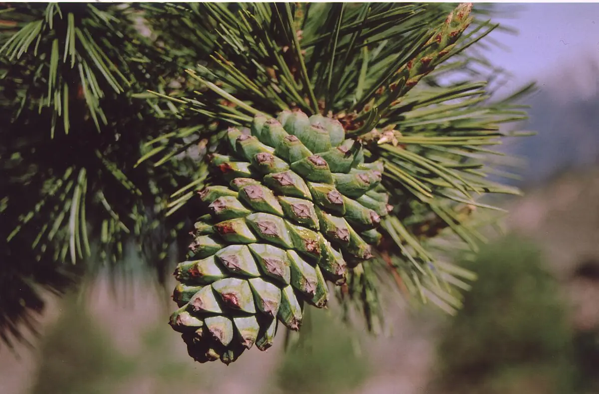
Chilgoza, which almost nobody outside the region knows about and which is arguably more interesting. The chilgoza pine, Pinus gerardiana — named for the Gerard brothers — produces an edible pine nut, known locally as neoza or ri. Kinnaur holds essentially the only chilgoza-producing forests in India; the species otherwise occurs in Afghanistan, Pakistan and a sliver of Kashmir. It grows on steep rocky slopes between about 1,800 and 2,600 metres, it is slow-growing, and it cannot really be farmed.
The harvest, in September and October, is communal and hair-raising. Men climb very tall pines and knock down the cones. The whole village then sits on rooftops splitting cones with small axes and picking the nuts out by hand. In some villages the cones are pooled and divided equally among households, regardless of age, sex or caste — and some cones are always left on the tree for the birds, which are the trees’ seed dispersers.
The nuts went down to the Lavi fair at Rampur for centuries. They are now worth well over a thousand rupees a kilo, and the forests are under pressure from over-harvesting, immature collection and a changing climate.
At weddings, garlands of chilgoza are given to the hosts.
Also: apricots, walnuts, buckwheat, barley, rajma, and at Ribba, grapes — which are turned into a local wine and, more famously, into angoori and arak, the Kinnauri spirits. Kinnaur has a drinking culture that would surprise anyone who assumes rural India is dry.
What is made here
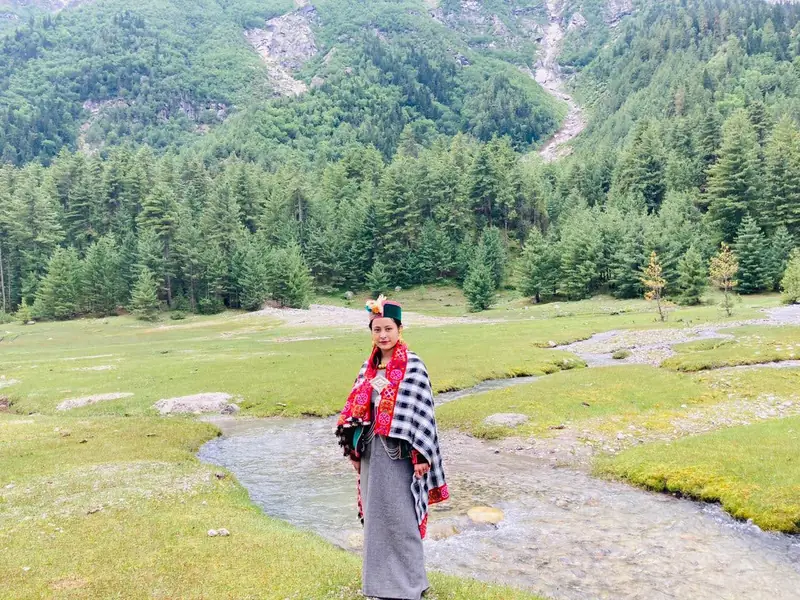
The Kinnauri shawl. The best-known craft of the region and genuinely worth understanding before you buy one.
It is woven on a khaddi, a simple pit loom: the warp beam tied high to a wall or roof beam at one end, the yarns drawn down and tied in front of the seated weaver at the other, the frame made of fir and deodar by a local carpenter, the reed made from thin bamboo strips nailed between two planks like a comb. The weaver ties the heddles themselves, one at a time, by hand.
The cloth is a twill ground — plain, pointed, herringbone or basket — in undyed natural wool: black, white, cream, grey, brown or a blend. The patterning is extra-weft: additional coloured threads inserted during weaving purely to form the design, knotted and lifted individually. It is slow. A detailed shawl takes weeks; an intricate one can take months.
The designs are narrow horizontal bands of geometric motifs — squares, crosses, stepped forms, interlocking loops — concentrated at the two ends and running some way into the body. The visual language is recognisably Central Asian and Tibetan rather than Indian.
And the colours are not arbitrary. The traditional set maps to the five elements: white for water, yellow for earth, red for fire, green for air, blue for ether.
Stop and look at that. Those are the same five colours, carrying the same five elements, as the prayer flags strung across every pass you will cross. A Hindu-majority district weaves the Buddhist five-element colour system into its shawls, and nobody in Kinnaur finds this remarkable. It is the single best material illustration of the argument this whole book has been making about the frontier being a gradient rather than a line.
Denser and finer patterning historically indicated a wealthier family — which is why, as the marriage section of Interlude Ten describes, a family’s shawls were shown to prospective in-laws.
Where to buy well. Weaving in Kinnaur is now largely done by women, often organised into self-help groups and village collectives — there is one at Kalpa, on your Day 3 — making shawls (chaanli, lingchey) and mufflers (golband). Buying directly from a collective or a weaver puts the money where the work was. Expect real merino shawls to cost thousands of rupees and be suspicious of anything cheap; much of what is sold as Kinnauri in tourist markets is mill-made elsewhere.
Sheep and the supply chain. Worth knowing: sheep rearing was once the mainstay of Kalpa’s economy and has been largely displaced by apples. Many weavers now buy their wool in the market rather than shearing it. The craft has outlived the flock.
Other things.
- Kinnauri caps, woven and tailored locally.
- Woodcarving — the tradition that produced Bhimakali and every village temple. Look at door frames and window screens as much as at temples.
- Silver jewellery, often old and heavy, and in Lahaul, seed-pearl necklaces and coral-and-turquoise-inlaid silver plaques bought with kuth and potato money.
- Thangka painting, in Spiti, on cloth with mineral pigments, following strict iconometric proportion — a painter works to a grid, because the proportions of a Buddha figure are prescribed, not invented.
- Butter sculpture, made for festivals and deliberately impermanent.
- Seabuckthorn juice, from local cooperatives in Spiti: not a craft, but the single best thing you can buy that puts money directly into the valley.
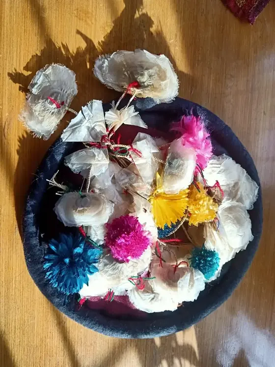
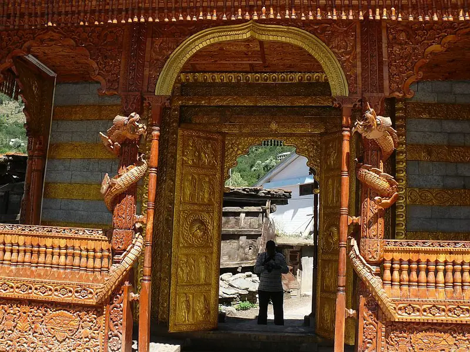
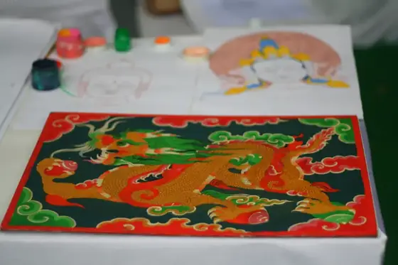
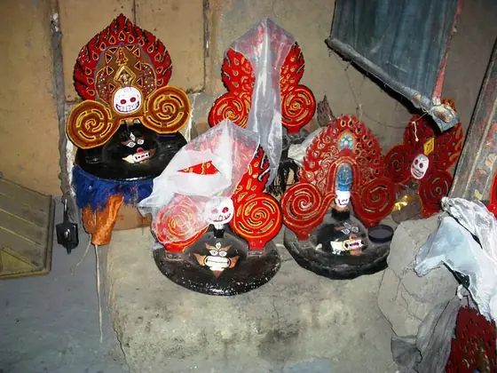
Water: the kuhl
In the plains, water arrives. In the mountains, water must be led.
A kuhl (also kul) is a contour channel, often kilometres long, that takes water from a snow-fed stream and walks it along the hillside at a very shallow gradient to the fields. Building one is a major work. Maintaining one requires an entire institution: rules about who gets water when, a kohli or water-master, collective labour to clear it each spring, and a mechanism for resolving disputes — which was, of course, often the village deity.
Kuhls are the least photographed and most important structures on this route. Every terrace you admire exists because someone talked water across a mountainside. And they are the point at which climate change bites hardest: a fed by a glacier that is retreating, or by snow that now falls as rain and runs off in a week instead of melting through the summer, stops delivering at the time of year the crop needs it.
The festivals
If your dates were different you might catch:
- Fulaich (also Phulaich), the flower festival, late summer — villagers climb to high meadows for flowers, which are offered and worn, with feasting, archery and the remembrance of the dead.
- Sazo / Sazi, around September — the deities are said to withdraw to the heavens for the winter, and are ritually seen off.
- Beesh / Bishu, mid-April — the deities come out of their temples.
- Dakhrain, October, and the Kinnaur Tribal Festival at Reckong Peo in late October and early November.
- Lavi at Rampur, from 11 November, three days, three hundred years old.
The kayang is the characteristic Kinnauri group dance: a long linked line or circle, arms interlocked, moving slowly and deliberately, sometimes for hours. It looks simple. It is not.
What You Will Eat
Here is the thing worth knowing before the first meal.
The food changes where everything else changes. Kinnaur eats like the Indian hills: wheat, rice, rajma, yoghurt, ghee, spice. Spiti eats like Tibet: barley, butter, salt, noodles, and almost no spice at all. The switch happens over one afternoon’s drive, somewhere around Nako, at the same place the trees stop and the temples turn into monasteries.
You will meet that transition three times a day, which is more often than you will see a monastery. Pay attention to it and you will understand this road better than most people who drive it.
The Kinnauri plate
Siddu
If you eat one thing in the first half of this trip, make it siddu.
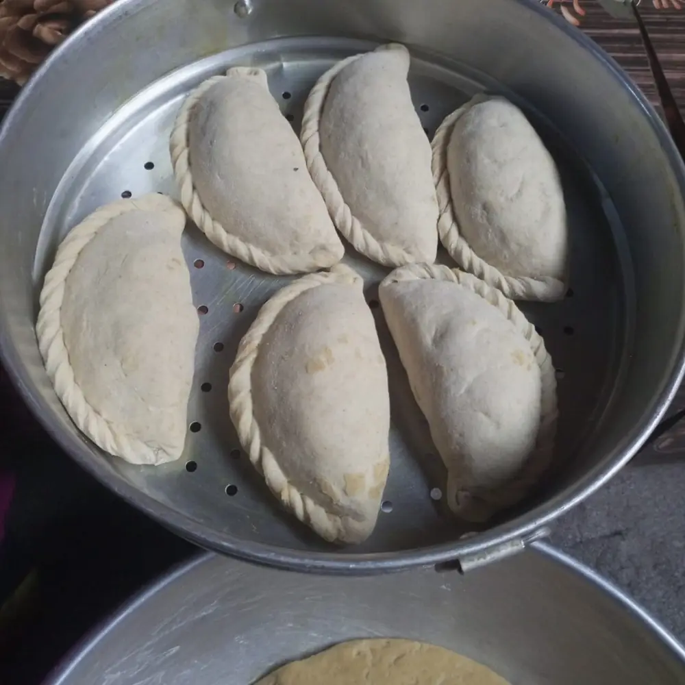
It is a steamed, fermented wheat bun, roughly the size of a fist, stuffed with a thick paste of crushed walnuts and poppy seeds with cumin, fennel and green chilli. Sometimes it is stuffed with lentil paste, green peas, or, in the sweet version, dry fruit and jaggery. The dough is left to ferment for hours before it is filled and steamed, which gives it a faint sourness and a texture somewhere between bread and dumpling.
It arrives split open with melted ghee poured into it, and chutney on the side. Eat it hot. Cold is a disappointment.
Two things about it are interesting beyond the taste.
It is travelling food. Shepherds carried siddu on long journeys because it is filling, portable, dense, and keeps. A cold-country food designed around a long walk.
And it is almost certainly not originally Indian. The form — fermented dough, stuffed, steamed — is the form of a bao, and the likeliest explanation is that it came over the passes with the trade. Its cousins are the Tibetan shabaley and, further afield, everything from a Russian chebureki to an empanada. On the first night of this trip you will eat a Chinese steamed bun with Himalayan walnuts in it, and this will be presented to you as a Himachali speciality, which it now genuinely is.
The dham
If you are ever invited to a dham, cancel whatever else you were doing.
The dham is the Himachali ceremonial feast, served at weddings, births, festivals and religious occasions, and it is a thousand-year-old institution. The details:
It is cooked by botis — a hereditary caste of Brahmin cooks, who do this and only this. They cook barefoot. Preparation begins the night before and cooking starts around four in the morning.
It is never cooked indoors. A temporary kitchen is built outside, and the food is cooked in brass or copper vessels with narrow necks, set in a wood-fired trench. The narrow necks mean the boti cannot see inside, and yoghurt curdles if it is not stirred continuously, so the skill is substantial and entirely non-visual.
It is eaten sitting on the ground in rows, from pattal — plates about a foot across, made of sal, tor or banyan leaves stitched together with bamboo slivers. Everyone sits in the same line, eats the same food off the same leaves, regardless of standing. That is part of the point.
It is served in a fixed sequence, roughly: rice, then a dal, then madra — the defining dish, beans or chickpeas in a thick yoghurt-and-ghee gravy — then khatta, a sweet-sour preparation of pumpkin or black chickpeas with tamarind and jaggery, whose function is to cut the fat of the , then a black-lentil dal, then a sweet, usually meetha bhat, sweet rice with dried fruit.
And here is the detail that belongs in this book. A traditional dham contains no onion, garlic, ginger or tomato. Not for religious reasons primarily, but because those ingredients were historically not available up here. The feast is built entirely from lentils, beans, yoghurt, ghee, buttermilk, mustard oil, sugar and rice — the things that could be grown or carried.
A Himachali ceremonial feast excludes almost every ingredient that defines Indian food elsewhere, because of where the roads went. You are about to spend four days on one of those roads.
And the Kinnauri dham is different again. Lower down, the dham is strictly satvik. In Kinnaur and the upper Shimla hills, wedding feasts can include mutton and liquor. The gradient again: the further up the valley you go, the more the plains rules loosen.
The rest of the Kinnaur menu
- Rajma. Pahari rajma is a genuinely different thing from the plains version — smaller beans, thinner skin, deeper flavour, cooked long. Order it.
- Madra. If you see it outside a dham, take it.
- Chha gosht. Mutton slow-cooked in a yoghurt and gram-flour gravy. The other great Himachali dish.
- Babru. The hill version of a kachori, stuffed with black gram paste.
- Patrodu. Colocasia leaves layered with spiced gram-flour batter, rolled, steamed and sliced. More a lower-Himachal thing but worth grabbing if you see it.
- Sepu badi, mash ki dal, kadhi, khatta — the dham repertoire, sometimes available à la carte.
- Buckwheat. Ogla and phapra grow where wheat struggles. Look for buckwheat rotis and pancakes in the upper valleys.
- Chilgoza. Interlude Two. September and October is the harvest. Buy some and eat them in the car.
- Apricots, walnuts, apples. You are there at harvest. The apples in Kinnaur in September are as good as apples get anywhere.
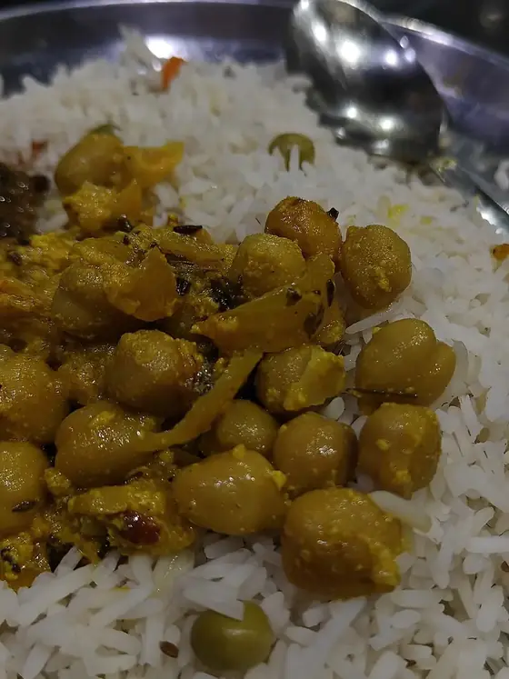
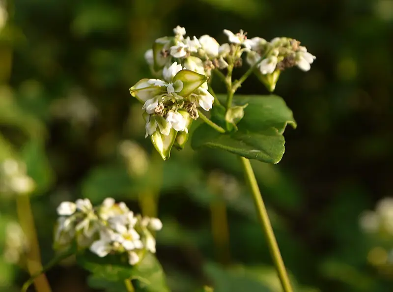
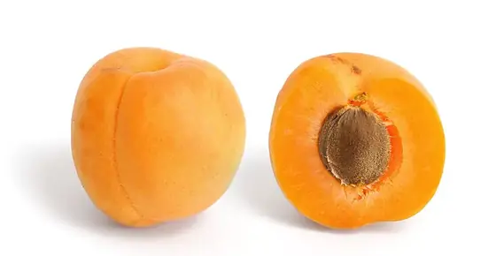
Drinking in Kinnaur
Kinnaur drinks, and this surprises people who assume rural India is dry.
- Angoori, the grape wine of Ribba, which sits in a pocket of the Sutlej valley warm enough for vines. Home-made, variable, often very good.
- Arak (also ghanti), the local distillate — from grapes, apricots, barley or apples depending on where you are. Strong, rough, warming, and the standard offer of hospitality.
- Apple and apricot brandies, increasingly commercial.
- Chhang appears in the upper valleys as you approach the Buddhist belt.
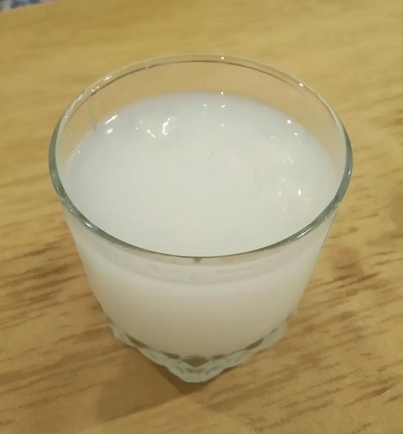
Two cautions. It is stronger than it tastes, and altitude roughly doubles the apparent effect of alcohol while making the next morning considerably worse. On Days 1 to 3 you are still low enough to get away with it. From Kalpa onward, be careful, and on Days 4 to 8 I would not drink at all.
The hinge
Somewhere past Nako, watch what happens to the food.
The spice stops. The chilli, the garam masala, the ginger, the garlic, the coriander — they thin out and then vanish. The yoghurt goes. The ghee is replaced by butter. The wheat is replaced by barley. The gravies are replaced by broths.
This is not a matter of taste. It is trade geography, and it is the same explanation as the dham having no onions.
Spices are a product of the Indian plains and tropics. They reached Kinnaur, expensively, because Kinnaur faces down the Sutlej towards the plains. They barely reached Spiti, because Spiti faced north and east, towards Tibet and Ladakh, and what came over those passes was salt, wool, borax and butter, not cardamom.
So the food of Spiti is built from the four things the place could actually supply: barley, dairy, salt and whatever meat there was. Everything else is elaboration.
Then the road came, from the south, and brought rice, potatoes, onions, instant noodles and chilli powder. Which is why a Kaza café menu now reads half Tibetan and half North Indian, and why the genuinely local food has retreated into houses.
The Spiti plate
The two that are not for tourists
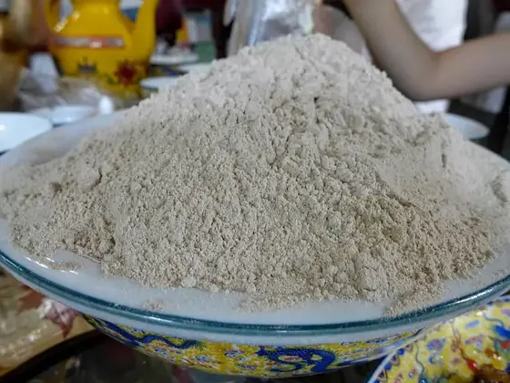
Tsampa. Roasted barley flour. You are given a bowl, a lump of butter and some butter tea; you mix it with your fingers in the bowl into a stiff dough and eat it.
It is the most efficient food ever devised for this environment. The barley is already roasted, so it needs no cooking and no fuel — which matters enormously in a place where fuel is dried dung. It keeps indefinitely. It weighs almost nothing. It travels in a pouch. For a thousand years, a Spitian or Tibetan setting out over a pass carried and a lump of butter and needed nothing else.
You will probably find it dull. That is fine. Eat some anyway, because you are eating the thing this entire civilisation ran on.
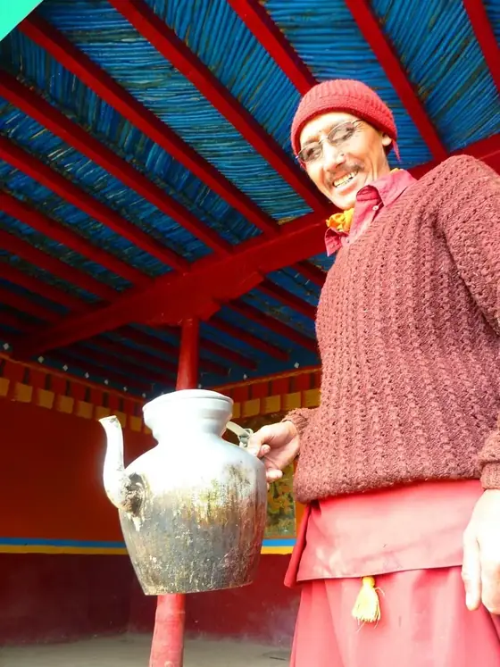
Po cha, butter tea. Tea churned with salt and butter into an emulsion. It is not tea in any sense you recognise. Think of it as a thin salty soup and you will get on with it immediately; think of it as tea and you will recoil.
It does three things at once at 4,000 metres: replaces the fluid you lose to dry air, replaces the salt you lose, and delivers a large hit of fat in a climate burning calories to keep you warm. The butter also greases your lips, which crack in this air.
It is refilled constantly. See the Manners sidebar for what to do about that.
The household dishes
These are the ones to ask for, and you will often have to ask, because homestays assume visitors want momos.
- Chhutagi — literally “water bread”. Discs of dough folded into bow-tie shapes and simmered in a thick vegetable or meat broth. The Himalayan pasta. Substantial, plain, excellent. Traditionally fed to people bringing in the harvest.
- Skyu — the same idea with thumb-pressed dough pieces, cooked long in a thick stew with root vegetables, potatoes and turnips. Winter food.
- Quo — barley flour, potatoes and yak cheese. A quick savoury household supper.
- Churam — black tea cooked with barley flour, cheese, sugar and butter. Somewhere between a drink, a porridge and a dessert.
- Shunaali — a sweet of wholewheat flour, dried cheese, sugar and ghee.
- Barley kheer — cooked barley, milk, sugar, raisins. Unexpectedly good.
- Popped barley — the local popcorn. Snack food, offered with tea.
- Black peas — the traditional Spiti pulse, distinct from the green peas that now go to Delhi. Cooked into stews and salads. If you see black peas on a menu, order them; you are eating the old economy.
The Tibetan standards
Available everywhere, in every homestay and café, and good:
- Thukpa — noodle soup with vegetables or meat. The everyday meal.
- Thenthuk — the same but with hand-torn flat noodles and a thicker broth. Better than . Order this one.
- Tingmo — steamed, fermented, swirled bread with no filling, served alongside a stew or dal. Tear it and use it to eat the stew. Sometimes called timok.
- Momos — steamed or fried dumplings. Universal now, and often made with whole wheat up here.
- Shabaley — fried stuffed pastry, the deep-fried cousin of siddu.
- Chhurpi — rock-hard dried cheese, chewed slowly over an hour. Treat it as a lozenge, not a snack.
- Tibetan bread — thick round leavened bread, often served at monasteries with tea. Breakfast for monks.
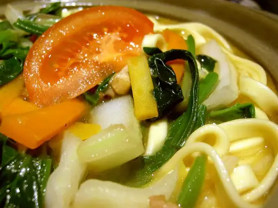
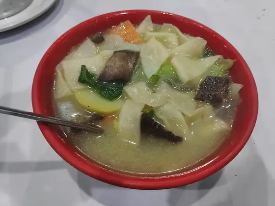
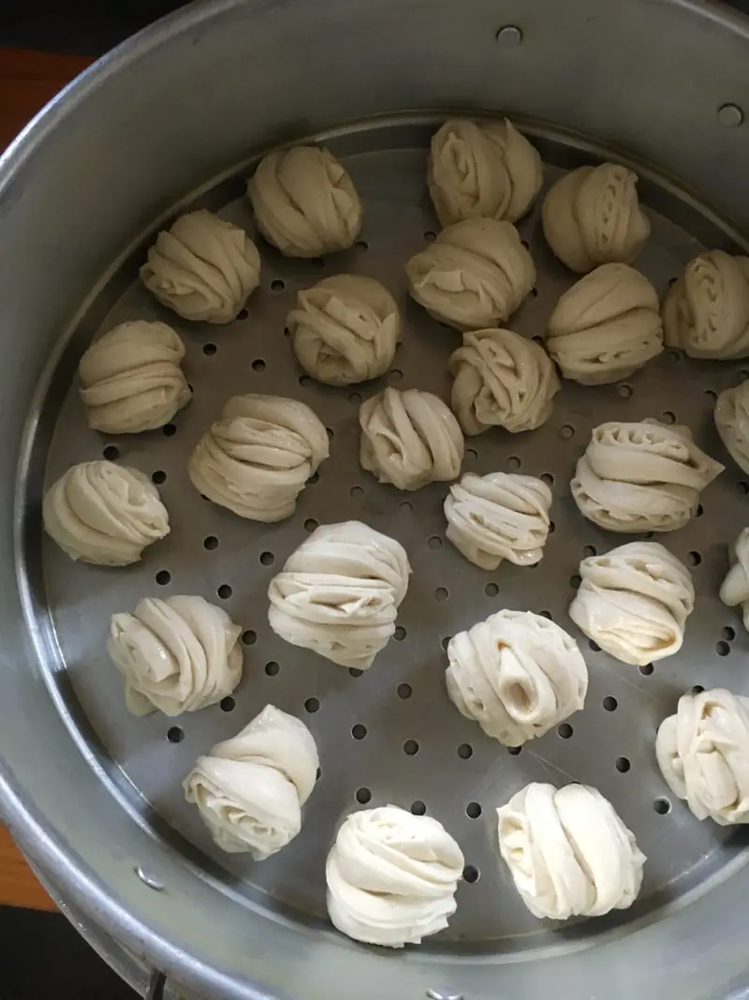
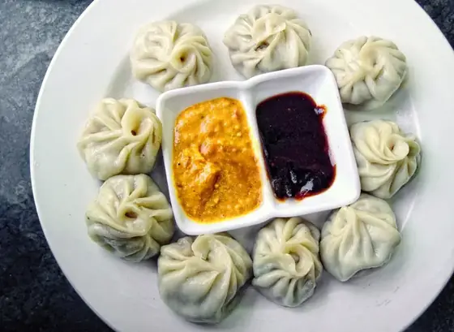
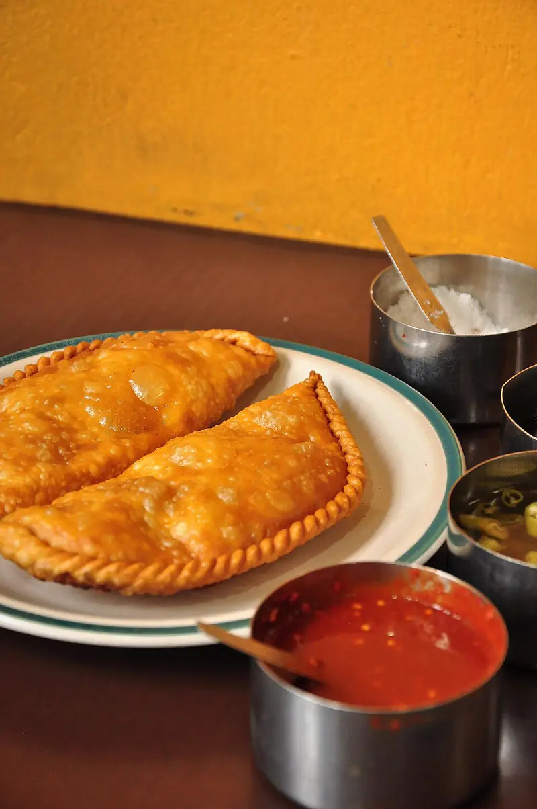
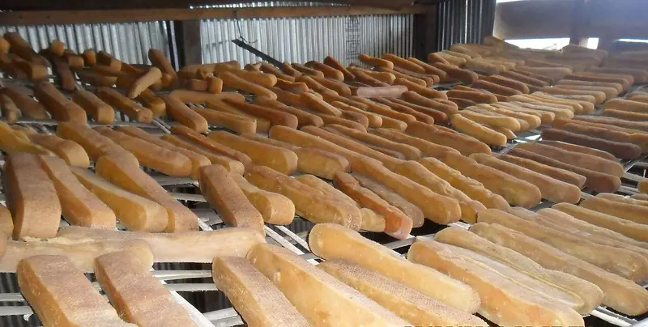
Drinks
- Chhang — barley beer, cloudy, sour, low-strength, socially central.
- Arak — the distillate, considerably less gentle.
- Seabuckthorn juice or tea — the orange berry from the thickets along the riverbed, called chharma. Very high in vitamin C. Made by local cooperatives, sold in Kaza and at roadside stops, and the single best purchase on this route in terms of money reaching the valley. Buy it repeatedly.
- Namak chai / sweet chai — salt tea and normal Indian sweet tea coexist. Say which you want.
- Rhubarb tea, in some places, from wild Himalayan rhubarb.
- Beer and rum are available in Kaza. See the altitude warning above and think hard.
Lahaul, on the way out
Lahaul on Day 9 is a brief taste of a third cuisine, mostly eaten in passing.
The staple is the potato, introduced at Keylong by Moravian missionaries in 1857 (Chapter 16), and the valley now produces some of the best seed potato in the world. Buckwheat, barley and peas fill out the rest. The cooking is closer to Spiti’s than Kinnaur’s in the upper valleys and closer to Kullu’s down in Pattan.
If you stop in Lahaul, get whatever has local potato in it. It is genuinely better than potato has any right to be.
The food that is neither
Maggi
You will eat a great deal of Maggi on this trip and you should not be snobbish about it, because there are real reasons it has conquered the Himalaya.
Water boils at a lower temperature at altitude. At 4,000 metres it boils around 86 °C, which means anything that needs actual boiling — rice, dal, beans — takes vastly longer and more fuel. Instant noodles cook in the water anyway.
It needs one pot, no skill and two minutes. At a dhaba at 4,000 metres with a gas cylinder trucked over a pass, that is the whole argument.
It weighs nothing, costs little and keeps forever, which matters when your supply chain is a road that closes.
At a roadside stop in Spiti, Maggi with an egg, hot, in the cold, is not a compromise. It is the correct order.
The dhaba standard
Across the whole route, the default roadside menu is: Maggi, omelette, aloo paratha, rajma chawal, dal chawal, chow mein, momos, chai. It is the same in Kinnaur and Spiti with minor variations. It is fine. Eat it, and save your curiosity for the homestays.
Chandra Dhaba at Batal, on Day 9, is the one to stop at. Chapter 15.
The practical half
This is the part no one tells you and it matters more than the menu.
Your appetite is going to collapse
At altitude, appetite drops sharply. You will not feel like eating. This is normal and it is also a problem, because you are burning more calories than usual — staying warm, breathing harder, walking uphill at Komic — and eating less.
Eat anyway. Treat meals as something you do on a schedule rather than when hungry. Carbohydrates are digested more efficiently at altitude than fat, so eat the rice and the noodles and the bread. On the Losar and Chandratal nights especially, have the full dinner even if you want to skip it; being under-fuelled is what makes a cold night unbearable at three in the morning.
Water is more important than food
Three to four litres a day, more than feels reasonable. The air is extremely dry and you lose water with every breath without noticing it. Dehydration mimics and worsens altitude sickness, and most mild “altitude headaches” are at least partly thirst.
Carry a bottle and a purification method — tablets, a filter or a SteriPEN — rather than buying plastic. Chapter 18.
Digestion goes odd
Expect it. Slower digestion, bloating, gas, and a general sense that things are not moving as they should. Heavy, greasy food sits badly above 3,500 m. Smaller and more frequent works better than one big meal.
Ginger-lemon-honey tea is available everywhere and is genuinely the most useful thing on the menu for a queasy stomach.
Vegetarian and vegan
Vegetarian is easy everywhere. Kinnaur is a dal-rice-rajma culture. Spiti’s own food is largely vegetarian by necessity, and every menu has vegetable thukpa, vegetable momos and dal.
Vegan is harder in Spiti than anywhere else on the route, because the entire local cuisine is built on butter, cheese and milk. Butter tea, tsampa, , , — all dairy. You can live on dal, rice, vegetable thukpa (check the broth), and vegetable momos, but tell your homestay in advance, kindly and without fuss, because “no dairy” in a valley whose food is dairy is a genuinely difficult request rather than a preference.
Jain, no-onion-no-garlic: ironically easy, since the traditional dham and most Spitian food use neither.
Meat, and a thing worth understanding
You will notice that Buddhist Spiti eats meat, and that this surprises people.
The reasoning, roughly, is that the first precept prohibits killing, not eating. A household that buys meat from a butcher, or eats an animal that died, has not taken life. There is an old and slightly uncomfortable tradition across the Tibetan world by which the actual slaughtering was done by people of low status, and the moral weight fell on them.
There is also simple necessity. At 4,000 metres with four months of growing season, a diet without animal products is not a lifestyle option.
Many monks and devout laypeople are vegetarian, and many observe meat-free periods on auspicious days in the lunar calendar. Do not assume either way, and do not, whatever you do, explain Buddhism to a Spitian.
Hygiene, briefly
Standard rules. Hot food that arrives hot. Avoid raw salad and cut fruit at roadside places. Peel the apples you buy — they will be unwashed and orchards are sprayed. Bottled or purified water only. The cold and dry air actually make Spiti safer than most of India in this respect; the risk is higher in the warmer Kinnaur end.
What to carry
Nuts, dried fruit, chocolate, a few energy bars, and electrolyte sachets. On Days 8 and 9 there is genuinely very little between Losar and Gramphu, and a jar of peanut butter and a spoon has rescued many people on this road.
And say yes
The single best food advice for this trip: when someone in a homestay offers you something you do not recognise, eat it. Ask what it is afterwards. The things in Part Three you will only ever be offered — they are not on any menu, and nobody will push them on you, because the assumption is that visitors want momos.
Ask your homestay, the night before, whether they can cook you what they are eating. It usually works, it costs the same, and it is the difference between having been to Spiti and having eaten in Spiti.
The Baspa Valley — Sangla, Kamru, Rakcham, Chitkul
Places on this map
- Karcham · stop · turn-off from NH-5
- Sangla · stop
- Kamru · in the text · fort
- Batseri · stop
- Rakcham · stop
- Chitkul · night halt
- Lamkhaga La (off the map, south-east) · pass
The turn off the highway
At Karcham, the Baspa river comes in from the east to meet the Sutlej, and you turn off NH-5 and climb into a side valley that is one of the most beautiful in the Himalaya and also a dead end. The Baspa rises on the Tibetan watershed; the road stops at Chitkul; beyond Chitkul is a footpath, the Lamkhaga pass, and then Garhwal.
This is where Kinnaur starts feeling like Kinnaur.
Who the Kinnauras are
The name is the first clue. In Sanskrit literature the Kinnaras are a class of celestial beings — musicians, half-human, associated with the mountains, attendants of Kubera the god of wealth. Kalidasa mentions them. They are not quite gods and not quite people, which is exactly how the plains imagined whoever lived up here.
The people themselves are a composite. Historians identify layers: Kiratas, the old Himalayan peoples of Sanskrit sources; Khasas; Indo-Aryan arrivals; and, in the upper valleys near the Tibetan border, Bhotia populations speaking Tibetan-related languages. Kinnaur today has several distinct languages, including Kinnauri, Bhoti Kinnauri, and — in Chitkul alone — Chitkuli Kinnauri, its own language, spoken by a few thousand people and by nobody else.
What makes Kinnaur religiously unusual is not that Hinduism and Buddhism coexist. It is that they coexist within the same household. You will see a Buddhist in the compound of a Hindu temple at Kamru. Families will observe both. Asking someone whether they are Hindu or Buddhist can produce genuine puzzlement, because in the valley the question has not historically been forced.
Layered under both is the deota system: every village has its own local god, with a physical palanquin, a set of oracles and attendants, and real authority. Village deities settle disputes, approve marriages, veto projects and are carried to each other’s festivals to confer. When you see a decorated palanquin being carried by men in a jostling rhythm, you are watching a god travel.
On polyandry, carefully
Kinnaur is known outside the region for fraternal polyandry: a woman married to a set of brothers. It was widespread, it is now uncommon and declining, and it was not exotic — it was land policy. In a valley where cultivable terraces are scarce and inheritance splits holdings, marrying brothers to one wife keeps the family land in one piece across generations. Tibet, Ladakh and Spiti did the same for the same reason.
The local explanation, offered warmly and often, is Draupadi and the Pandavas. The Pandavas are said to have spent part of their exile in Kinnaur, and the custom is traced to them. It is a better story than land fragmentation. Both are true in their own register.
Kamru
Two kilometres above Sangla, at about 2,900 m, sits Kamru and its tower fort — seven storeys, the lower two of stone, the upper five of timber, built in the same technique as Bhimakali but stacked vertically like a keep.
Kamru was the original capital of Bushahr, before Sarahan, before Rampur. This is where the dynasty begins. Whatever you make of the Pradyumna story, the fort is the root of the kingdom you have been driving through since Narkanda. Inside there is a shrine to Kamakhya Devi, whose image is said to have been brought here from Assam, which is a very long way for a goddess to travel and a useful reminder that these valleys were never as isolated as they look.
Chitkul
The last village. 3,450 m. Beyond it the valley narrows towards the Tibet watershed and the road ends.
Chitkul is where the trip stops being a hill holiday. The temperature drops hard, the wind comes down the valley, the buildings change to low stone and timber with heavy roofs, and the night — 0 to 4 °C — is a rehearsal for everything after Tabo. It is also, in September, extremely beautiful: the Baspa braided across a wide gravel bed, the last barley or buckwheat being cut, the peaks close enough to feel.
Two practical notes that belong in a history book because they are history. First, this was a trade and grazing route into Tibet, and the border closure after 1962 killed it. The valley’s outward orientation was north and east for a thousand years; now it is south and west, down the highway. Second, the village has an old wooden temple to Mathi Devi, the local goddess, and she, not the Indian state, is who most people here would tell you actually runs the valley.
The Baspa, and what a side valley is for
The Baspa is a classic hanging tributary: it joins the Sutlej at Karcham considerably above the Sutlej’s own bed, which is why the road has to climb so sharply from the junction. The main river has cut down faster than its tributaries could keep up.
What that produces is a valley with a wide, flat, gravelly floor — braided channels, meadows, and space for fields and villages — sitting above a gorge. This is why the Baspa is green and open when the Sutlej valley two hundred metres below is a slot. Every good village site in the Himalaya is a piece of flat ground that a river left behind, and the Baspa has more of them than most.
Sangla, Rakcham, Batseri
Sangla is the main village, with a bazaar, and is notably prosperous. The valley grows apples, and — unusually — saffron and rajma and the best of the region’s stone fruit.
Batseri, between Sangla and Rakcham, has a fine village temple to Badri Narayan and a magnificent old kath-kuni granary complex. Village granaries are worth noticing: a communal or clan grain store, raised on stone, tightly joined, mouse-proof, cold. In a valley with one harvest and a long winter, the granary was the most important building after the temple.
Rakcham sits where the Baspa braids across a wide flat at about 3,100 m, and is the loveliest village in the valley. The name is said to come from rak (rock) and cham (bridge).
Chitkul: what “the last village” actually means
Chitkul is routinely described as the last village before the Tibet border, and that is true, but the interesting version is what being last meant.
The Baspa leads to the Lamkhaga pass (about 5,280 m), which crosses to Harsil in Garhwal, and beyond the head of the valley lies the Tibetan watershed. Chitkul was a stage on routes that went both east into Tibet and south-east into Garhwal. It was a grazing and trading village on a through-route, not a dead end.
Then the border closed. Now the road ends here because the state ends here, and the traffic is tourists.
Two more things. Chitkuli Kinnauri, the local language, is distinct enough from other Kinnauri varieties to be classed separately, spoken by a few thousand people, and unwritten. It is the kind of language that disappears quietly within two generations of a road arriving.
And the village goddess, Mathi Devi, has a wooden temple with three shrines said to be several hundred years old, with a tradition that the image was brought here from Garhwal. Mathi’s authority in the valley is real and current, and her festival calendar is what the village year actually runs on.
The Kinnaur Kailash parikrama, which you are not doing
A note, because you will hear about it. The Kinner Kailash parikrama is a circuit of the massif of several days, usually done in August, crossing the Charang–Ghati pass at about 5,240 m. It is a serious high-altitude undertaking and people die on it most years. Separately, there is a shorter, brutal pilgrimage direct to the shivling from Tangling.
Neither is a walk. Mentioning it here only so that when somebody in Kalpa says “you can go up to the shivling”, you understand what is being described.
Kalpa, and the Mountain That Is a God
Places on this map
- Powari · stop
- Reckong Peo · stop · fuel · last reliable ATM, market and fuel
- Kalpa · night halt
- Roghi · stop
- Kinner Kailash (the shivling stands on its shoulder) · pass
The view
Kalpa is a village of apple orchards and slate roofs on a shelf above the Sutlej, directly opposite the Kinner Kailash range. In the morning, if the weather is with you, you will step outside and be confronted by a wall of rock and ice about 6,000 metres high, three or four kilometres away, filling the entire eastern sky. Very few places in the Himalaya give you a mountain of that scale that close, at a village you can drive to.
This was Chini, the name under which it appears in nineteenth-century accounts. Lord Dalhousie came here in person — his journey up the road he had commissioned was partly an inspection and partly a test of whether the thing worked.
The Shivling
On the Kinner Kailash massif there is a rock pillar, roughly 24 metres high, standing free on a shoulder of the mountain. It is regarded as a swayambhu Shivling, self-manifested, and it is the object of one of the harder pilgrimages in the Indian Himalaya — the Kinner Kailash parikrama, a circuit of several days at high altitude, undertaken in August.
The pillar is said to change colour through the day, and it does, though the mechanism is the sun rather than the god.
Reckong Peo, and practical Kinnaur
Below Kalpa is Reckong Peo, the district headquarters — the last place for a good while with functioning banks, a real market, and reliable fuel. The standard advice is that ATMs past Peo are unreliable and often empty in Kaza. Take this seriously. It is not a rural inconvenience, it is a structural fact of the valley economy.
Peo is also the administrative memory of the Inner Line. For decades after 1962, foreigners needed permits to go beyond a certain point in Kinnaur, and Indians faced restrictions too. The line has moved and relaxed, but you are, from here on, in a frontier district with a border a few dozen kilometres away, and the army and ITBP presence you will notice from Pooh onwards is not decorative.
Who Came Through Here
For about a century and a half, this corridor was one of the most interesting roads in the world to a certain kind of European, and a steady procession of surveyors, naturalists, spies, scholars and obsessives went up it. Several of them stayed in villages you will drive through. A few died doing it.
Here they are, roughly in order.
William Moorcroft (1767–1825)
The founder of the whole genre, and one of the strangest men in the history of exploration.
Moorcroft was a veterinary surgeon — the first Englishman to be formally trained as one — who came to India in 1808 to run the East India Company’s stud and supply the cavalry with horses. He concluded that the horses he needed were in Central Asia, and spent the rest of his life travelling towards them.
In 1812 he crossed the Himalaya into western Tibet, disguised as a Hindu pilgrim, and reached Lake Manasarovar, becoming very nearly the first European to see it. He was arrested on the way back. He then spent years pushing deeper: through Ladakh in 1820–22, where he passed through Lahaul and noted which villages were still paying revenue to Ladakh; into Kashmir; and eventually into Afghanistan and Bukhara, where he died in 1825 in circumstances that have never been satisfactorily explained, and about which there are persistent rumours that he did not die at all.
Moorcroft is the man who first told the British, urgently and repeatedly, that Russia was moving into Central Asia and that the Himalayan passes were a strategic problem. Nobody in Calcutta wanted to hear it. Within twenty years everyone was acting on it. The Great Game, for practical purposes, starts with a vet looking for horses.
The Gerard brothers (1810s–1830s)
Alexander, James Gilbert and Patrick Gerard, Scottish officers in Company service, are the men who mapped Kinnaur. Alexander walked to Shipki La and measured the Sutlej gorge, producing the first reliable altitudes for this region. They were tireless, exact, and interested in everything.
Their surveys are the reason Dalhousie in 1850 knew there was a route worth building a road along. Everything in Chapter 1 rests on them.
Sándor Csoma de Kőrös at Kanam (1827–1830)
This one is worth slowing down for, because it happened in a village you drive past.
Sándor Csoma de Kőrös was a Transylvanian Hungarian, born in 1784, who became convinced that the origins of the Magyar people lay somewhere in Central Asia, and decided to go and find them. He set out in 1819 and walked, largely on foot, across Anatolia, Persia and Afghanistan, into India.
He never found the Magyars. What he found instead was Tibetan.
He lived in monasteries in Zanskar — Zangla from 1823 to 1824, Phuktal from 1825 to 1826 — in conditions that appalled everyone who visited him: a small unheated cell, a sheepskin, and books. Then, from 1827 to 1830, he lived at Kanam in upper Kinnaur, on a British stipend of fifty rupees a month, working through the manuscripts he had gathered, with a Tibetan teacher, the lama Sangye Phuntsok.
What he produced at Kanam was the first Tibetan–English dictionary and the first Tibetan grammar in a European language, published in Calcutta in 1834. He read both of the great canonical collections, the hundred-volume Kangyur and the two-hundred-and-twenty-four-volume Tengyur. He essentially invented the academic discipline of Tibetology, alone, in a village in Kinnaur, in his forties, with no institution behind him.
The Tibetans called him Phyi-glin-gi-grwa-pa, the foreign pupil. In 1933 the Japanese declared him a bodhisattva.
He ended as librarian of the Asiatic Society in Calcutta, living with extraordinary austerity — no drink, no tobacco, almost no company — and died in 1842 at Darjeeling, still trying to get to Central Asia.
At Kanam he was visited by J. G. Gerard and by the French naturalist Victor Jacquemont, who travelled Kinnaur in 1830 and left sharp, funny, slightly cruel letters about everyone he met. For a season or two, in a village on this road, there were three of the more remarkable minds in Asia arguing with each other.
Kanam is between Pooh and the Sutlej, off the highway. There is very little to see. Think about it anyway when you pass.
The boundary commissioners (1846–1848)
After the First Anglo-Sikh War and the Treaty of Amritsar, somebody had to decide where the new border actually ran. The commission sent to do it included Alexander Cunningham, Henry Strachey and the botanist Thomas Thomson, and they went through Spiti and Ladakh doing the work.
Cunningham’s book Ladák (1854) is a foundational text. Cunningham himself went on to found the Archaeological Survey of India and is, more than anyone, the reason we know what we know about ancient Indian sites. He started here, on this frontier, drawing a line.
The Chinese authorities declined to meet the commission. The border consequently never got fully agreed, and the vagueness has been a live problem ever since.
The Schlagintweit brothers (1854–1857)
Three German brothers — Hermann, Adolf and Robert — sent to survey the Himalaya for the East India Company at the suggestion of Alexander von Humboldt. They crossed Kunzum La and worked across Spiti, Ladakh and the Karakoram, producing an enormous body of magnetic, altitudinal and meteorological data and some of the earliest scientific descriptions of the region.
Adolf was beheaded at Kashgar in 1857 by a local ruler who took him for a Chinese spy. He was thirty-eight.
Ferdinand Stoliczka (1838–1874)
A Czech-Moravian palaeontologist in the Geological Survey of India, and one of the finest field scientists of the century. He published on the fossils of Spiti in 1866, which is why Langza is on the scientific map at all.
He died in 1874 at high altitude in Ladakh on the return from the Forsyth mission to Yarkand, almost certainly of what we would now diagnose as altitude sickness, at thirty-six. Read Chapter 12 with him in mind. Henry Hayden continued the geological work here in 1904.
The pundits
Running through all of this, mostly uncredited, are the pundits — Indian surveyors trained by the Survey of India to map Tibet in disguise, because Europeans could not go and Indians could.
They travelled as pilgrims and traders. They were trained to walk a pace of exactly known length and to count paces on a Buddhist rosary modified to a hundred beads. Their prayer wheels held rolled paper notes instead of scrolls. They carried concealed compasses and boiled water to measure altitude by its boiling point. Nain Singh Rawat walked from Kathmandu to Lhasa and fixed its position; Kishen Singh was gone for four years.
They did some of the best survey work of the nineteenth century, at enormous personal risk, and for most of a century the credit went to the men in Dehradun who received their notebooks.
Giuseppe Tucci (1894–1984)
The Italian Tibetologist whose expeditions to western Tibet in the 1930s documented the monasteries of Guge, Tholing and Tsaparang — the parent institutions of Tabo — before the Cultural Revolution damaged or destroyed much of what was there. A great deal of what is known about the world that produced Tabo survives because Tucci photographed it in time. His politics were compromised; his scholarship was not.
George Roerich, and the buchen
George (Yuri) Roerich, son of the painter Nicholas Roerich, was a serious Tibetologist, and in 1932 he published a detailed description of the buchen Ceremony of Breaking the Stone in Pin Valley. His account, along with photographs taken by John Coldstream around the 1910s, is why we know the tradition from outside at all.
The Roerichs settled at Naggar, twenty kilometres south of Manali in the Kullu valley, in 1928. Nicholas Roerich — Russian painter, set designer for Stravinsky’s Rite of Spring, mystic, and the man behind an international treaty for the protection of cultural monuments — painted hundreds of Himalayan canvases from that house. The estate is now a museum. If you have a spare half-day at the end of the trip, go. It is the best art gallery on the entire route and almost nobody on the Spiti circuit knows it is there.
Marco Pallis at Chango
At Chango, Marco Pallis left a small and unexpectedly intimate record of travel in the old rest houses. His party had carried treble and alto viols through the Himalaya, and in the evenings, when they finally had the chance, they played chamber music.
Sometimes the musicians discovered that a small group of porters had gathered quietly nearby. They did not interrupt or announce themselves; they simply listened. Pallis remembered them as an unusually attentive audience, and the scene made him think of an old argument in Thomas Mace’s Musick’s Monument: that people divided by language might still possess one common language intelligible to everyone — music.
Rahul Sankrityayan (1893–1963)
The greatest Indian traveller of the twentieth century and the necessary corrective to this entire list. Born a Brahmin in Uttar Pradesh, he became successively an Arya Samaji, a Buddhist monk in Sri Lanka, a Marxist, and a member of the Communist Party; learned Sanskrit, Pali, Tibetan, Russian, Persian, Arabic, Chinese and more; made four journeys into Tibet, partly in disguise, and brought back hundreds of manuscripts and thangkas that are now in Patna; wrote well over a hundred books; and was jailed by the British more than once.
His Kinnar Desh is the classic account of Kinnaur — written from inside the Indian tradition, in Hindi, by a man who was interested in the people rather than in the strategic value of the passes.
Heinrich Harrer and Peter Aufschnaiter (1951)
Two Austrians who escaped a British internment camp at Dehradun in 1944, crossed into Tibet, and spent years in Lhasa. Seven Years in Tibet ends with them leaving; Harrer came out over Shipki La, into the valley you drive on Day 4.
Harish Kapadia (b. 1945)
And finally the man who has actually walked most of what you are driving past. Mumbai businessman, mountaineer, editor of the Himalayan Journal for decades, author of Spiti: Adventures in the Trans-Himalaya, and the person who has done more than anyone to document these valleys from an Indian perspective.
He has a useful habit, visible in his review of one European travel book about Spiti, of pointing out that the region is not undiscovered, was never undiscovered, and has been full of teachers, soldiers, scholars, traders and trekkers the entire time — and that the “forgotten valley cut off from the world” framing tells you about the writer, not the place.
Worth remembering when you are writing your own captions.
The Road Itself
Places on this map
- Karcham · stop
- Wangtu · checkpost · check post
- Reckong Peo · stop
- Spillow · stop
- Pooh · stop
- Khab · stop · Spiti–Sutlej confluence
- Nako · in the text
- Chango · stop
- Sumdo · checkpost · check post: register
- Gue · in the text · detour to the mummy
- Tabo · night halt
This chapter is about the drive rather than a place, because on this stretch the road is the subject.
The gorge
Between Reckong Peo and Khab, the Sutlej is in one of the deepest gorges on earth. The river has cut down through the rising Himalaya for tens of millions of years, and the result is a slot with walls thousands of metres high, in rock that is crushed, sheared and predisposed to move.
The road is cut into the wall of this slot. In places it is a gallery blasted into overhanging rock, in places it runs through unlined tunnels, in places it is a ledge with a drop on one side. Kipling described this road in “The Miracle of Purun Bhagat” as a ten-foot track blasted out of solid rock and strutted out on timbers over enormous gulfs, dipping into warm enclosed valleys and climbing bare grassy shoulders where the sun burns like a lens. The timbers are gone. The description is otherwise current.
Nigulsari and Chaura are the chronic problem areas. Nigulsari failed catastrophically in August 2021, taking a bus with it and killing more than two dozen people. There is no alternate route into Kinnaur. If NH-5 closes here, the district closes.
This is worth knowing not to alarm you but to explain the behaviour you will see: why traffic is stopped and released in convoys, why drivers do not linger in the marked stretches, why everyone accelerates through the shooting zones. Local practice is sound practice. Follow it.
Wangtu, Karcham, and the dams
At Wangtu the road crosses the river and a check post records vehicles. At Karcham the Baspa comes in and the Karcham Wangtoo project takes the water.
The old Wangtu crossing
Long before Wangtu became associated with a check post, a highway and a hydropower project, it was already a crossing on the Sutlej. A. H. Francke, writing about the antiquities of the western Himalaya, believed a bridge had existed here from very early times. His evidence included ancient carvings on the rocks, among them the figure of a man holding a sword in one hand and a club in the other.
He also found signs of travellers who had stopped here before the modern road existed: caves used as shelters, Tibetan inscriptions written in charcoal and red chalk, and, in one cave, plain tablets of burnt clay together with human ashes. Francke thought a lama may once have been cremated there, with the clay tablets formed without the usual mould. The modern road crosses a place that had already been receiving travellers for centuries.
Pooh, Khab, and the confluence
Past Pooh — where Rinchen Zangpo, who you will meet properly at Tabo, is said to have founded a monastery a thousand years ago — the road climbs to Khab, where the Spiti river comes in from the north to join the Sutlej.
Stop here if you can. You can see the two rivers before they mix: the Sutlej coming from Tibet, the Spiti coming down from Kaza, different colours, meeting in a V below the road. This is the hinge of your entire trip. Everything before Khab was the Sutlej. Everything after is the Spiti.
A few kilometres up the Sutlej from here is Shipki La, the pass to Tibet, where Dalhousie’s road was actually heading. A nineteenth-century British guide describes Shipki, the village on the far side, in the flat language of a supply list: a large village, where milk, flour, pumpkins and sometimes sheep could be had, with plenty of wood and water. That is what the empire’s road-builders wanted to know about Tibet.
The pass was a major trade route for centuries. It closed in 1962. Limited border trade reopened in 1994 and has been suspended repeatedly since. Heinrich Harrer and Peter Aufschnaiter crossed into India this way at the end of Seven Years in Tibet.
The Ka loops and the change
Above Khab the road does a series of tight hairpins — the Ka loops — to gain height fast, and then you are on the Spiti side. Between here and Nako the world changes.
The trees stop. The green stops. The air goes dry in a way you will feel in your throat within twenty minutes. The rock becomes the raw Tethyan sequence, banded and legible. You have crossed out of monsoon India.
Nako
Nako sits at about 3,660 m around a small lake, with willow and poplar at the water and mud-brick houses stacked behind. It is the first properly Tibetan-looking village of the trip and one of the most atmospheric.
The lake is sacred. Nobody fishes in it, bathes in it, or puts their feet in it. The reason is Padmasambhava — Guru , the eighth-century tantric master credited with establishing Buddhism in Tibet — who is said to have meditated here. In a small white building at the southwest corner of the lake, beneath his statue, there is a rock bearing what is held to be his footprint. A few miles away at Tashigang are caves where he is said to have taught, and where people will show you marks left by other, less identifiable beings.
Nako also has an eleventh-century temple complex with early murals, part of the same Rinchen Zangpo-era building programme as Tabo. If you have time and it is open, go in. The paintings are of the same world as Tabo’s, several centuries deep, and much less visited.
Sumdo, and the detour to the mummy
At Sumdo you formally enter Spiti and there is a check post. This is also the turn-off, about 8 km up a side road, for Gue (also spelt Giu), and if you can spare the hour it is worth it.
In 1975 an earthquake cracked open a tomb at Gue. Inside was a seated human body, skin intact, teeth visible, hair still on the skull. It is now in a glass case in a small shrine, and it belongs to a monk called Sangha Tenzin, carbon-dated to roughly 1475 and estimated to have been in his mid-forties at death. No embalming chemicals have been found. The high nitrogen levels in the body indicate prolonged starvation, and the posture — seated, bound — matches the known practice of self-mummification, in which a practitioner starves the body of fat and fluid over years, then dies in meditation.
It is the only known self-mummified monk in India, and the practice is otherwise associated mainly with Japan.
The local account is not medical. Gue, they say, was suffering a plague of scorpions that was killing people. Sangha Tenzin told his followers to let him mummify himself, as an offering for the village. When he died, a rainbow appeared and the scorpions went.
A Biography of the Sutlej
You will spend four days beside this river. It deserves a chapter.
Where it comes from
The Sutlej — Satadru in Sanskrit, the hundred-channelled; Langqên Zangbo, the Elephant River, in Tibetan — does not rise in India. It rises on the Tibetan plateau near Rakshastal, the dark twin of Lake Manasarovar, in the shadow of Mount Kailash.
That single fact is the key to the entire region. Four of the great rivers of South Asia rise within a hundred kilometres of Kailash and run to four different compass points: the Indus north, the Brahmaputra east, the Karnali (feeding the Ganges) south, and the Sutlej west. Which is why Kailash is the axis of the world in Hindu, Buddhist, Jain and Bon cosmology. It is not an arbitrary sacred mountain. It is the hydrological hub of half a subcontinent, and people who walked these valleys worked that out long before anyone had a map.
The impossible thing it does
The Sutlej rises behind the Himalaya and reaches the plains in front of it. To do that it has to cut clean through the highest mountain range on earth.
A river cannot ordinarily do this. Rivers go around mountains. The only way the Sutlej gets through is if it was already flowing there before the mountains rose, and then sawed downwards at least as fast as the range lifted beneath it. Geologists call such a river antecedent: older than the topography it crosses.
So when you are driving the gorge between Reckong Peo and Khab, walls rising thousands of metres on both sides, understand what you are in. That slot is the record of a race between a river cutting down and a mountain range pushing up, run continuously for tens of millions of years, with the river winning by a nose.
It is also why the road is so bad. The gorge walls are over-steep because the river has undercut them faster than they can settle, and they are in crushed, sheared rock. The slopes have never reached equilibrium and never will. Nigulsari is not an accident, it is the arithmetic.
What comes down it, unannounced
Here is the thing that is not in most accounts of Kinnaur, and it is the most consequential fact about living beside this river: the Sutlej’s upper catchment is in another country, and India gets very little warning about what is happening up there.
August 2000. A flash flood came down the Sutlej into Kinnaur with no warning. It lasted about four hours and permanently changed the banks over a two-hundred-kilometre stretch from Namgia in Kinnaur down to Tatapani in Mandi. Around 150 people were feared dead, some 250 houses and 20 bridges were destroyed, and damage ran into the thousands of crores. At the time it was attributed to a cloudburst in Tibet. Years later, researchers reconstructing the event from satellite imagery traced it to the outburst of an unnamed lake on the Tibetan plateau — a lake that had formed behind a landslide dam in the early 1990s, that nobody had named, that nobody was monitoring, and that failed after intense rain.
2004–2005: the Pareechu. The Pare Chu is a strange river and it matters to you directly. It rises in India, at Parang La north of Kibber. It flows into Tibet. And it comes back into India to join the Spiti river at Sumdo — the check post where you formally enter Spiti on Day 4. It is the only river of its kind.
In the summer of 2004, a landslide in the Zanskar range blocked the Pare Chu inside Tibet. A lake built up behind the debris. By mid-August it covered something like 188 hectares at a depth of around 35 metres, and it was still filling. Himachal spent three months on high alert, watching a lake it could not reach, in a country that was not sharing data, above a valley full of people.
On 26 June 2005 the dam gave way. The flood came down the Pare Chu, into the Spiti, past Sumdo, down to Khab and into the Sutlej. It tore out stretches of the Hindustan–Tibet road, took ten bridges and eleven ropeways, and damaged fifteen more structures on a single ten-kilometre reach between Wangtoo and Sumdo. Losses were put at around ₹800 crore.
Nobody died, because five thousand people had been evacuated in advance. That is the one genuinely good outcome in this chapter, and it happened because satellite monitoring had spotted the lake and the state acted on it.
Indian bodies still monitor the Pare Chu by satellite, with gauging stations at Sumdo and at Chumar near Leh, and requests for flow data from the Chinese side have been a recurring diplomatic issue.
What this means when you are standing at Khab
At Khab you look down on the confluence of the Sutlej and the Spiti. Both of them have upper catchments outside Indian control. Both have delivered lethal floods from unmonitored lakes within the last twenty-six years.
And the whole of Kinnaur’s hydropower infrastructure, and the highway, and most of its villages, are built in the bottom of the trough those rivers occupy.
That is the context for the next chapter.
The Dams
The Sutlej basin in Himachal has been described as the most intensively dammed river basin in the Indian Himalaya. Driving up it, you will see the evidence without recognising most of it, because the largest projects are almost entirely underground.
This chapter tries to give both sides properly, because the argument is live, it is being had by people in the villages you are driving through, and the visitor’s instinct — to be reflexively against dams in a beautiful place — is not automatically the right one.
What is actually there
Coming up the valley you pass, in sequence, a chain that includes Bhakra far below, Kol Dam, Rampur, Nathpa Jhakri, Karcham Wangtoo, Baspa II up the Sangla valley, Shongtong Karcham, and Kashang, with more proposed. The two that dominate Kinnaur are:
Nathpa Jhakri, 1,500 MW. Commissioned in the early 2000s and run by SJVN. Water is taken from a barrage at Nathpa and carried roughly 27 kilometres through a headrace tunnel inside the mountain to a powerhouse at Jhakri, where it drops through turbines. The village of Nathpa itself was displaced.
Karcham Wangtoo, 1,000 MW. Completed around 2011, built by the Jaypee group, the largest private-sector hydro project in India at the time. Again run-of-the-river: a barrage at Karcham, a tunnel of about 17 kilometres, a powerhouse at Wangtoo.
“Run-of-the-river” is the phrase you will hear, and it needs unpacking. It is used to mean “no big reservoir, therefore no big impact”, and the first half is true. There is no drowned valley here. But the water is still removed from the river, for tens of kilometres at a time, and returned lower down. For long stretches of the Sutlej, what you see in the bed is the residual flow, not the river. The river is inside the mountain, beside you, in the dark.
The case for
It is a real case and deserves stating without sneering.
Himachal has very little else. No industry to speak of, no minerals, limited agriculture, a small population spread over difficult terrain. Hydropower is the state’s main natural endowment and a major source of its revenue, and free power allocations from projects fund state budgets.
The power is low-carbon, at a moment when India needs a great deal of electricity and the alternative at the margin is coal.
The projects paid for things. Roads, bridges, schools, dispensaries, employment during construction, and local contracts. Some of the infrastructure that makes your trip possible exists because a power company needed to move turbines up this valley.
Nobody was drowned out. Displacement from run-of-the-river projects is in the dozens of families rather than the tens of thousands of a classic reservoir scheme.
The case against
Also real, and made most forcefully by the people who live above the tunnels.
Blasting and tunnelling. This is the central complaint and the most documented. Villages sitting above headrace tunnels — Urni is the most cited example — report cracks in houses and fields, subsidence, and newly active landslides that they date to the construction period. In some cases new water sources have appeared where none were, which is a classic sign of a disturbed aquifer, while old springs have gone dry.
And those villages were not counted as affected. Because compensation criteria were built around submergence, a village on the mountainside above a tunnel was, administratively, not impacted by the project at all. It got nothing, and it has the cracks.
Muck dumping. The spoil from tens of kilometres of tunnel has to go somewhere, and a great deal of it went onto the riverbanks. It washes into the bed, raises it, and narrows the channel — which matters enormously in a valley that periodically receives an unannounced flood from Tibet.
Dust. Apple orchards and chilgoza forests near excavation sites have been damaged by dust from blasting and dumping, which hits the two things Kinnaur’s economy actually runs on.
Springs and grasslands. Villagers report grazing land drying out and springs failing. Whether tunnelling is the cause is contested; the villagers are in no doubt.
Cumulative impact. Individually each project is assessed as acceptable. There are now enough of them in one basin that the basin-scale effect is the real question, and a Cumulative Environmental Impact Assessment for the Sutlej basin, presented to Kinnauri communities in December 2014, was heavily criticised by them when it arrived.
Process. Environment clearance hearings for Karcham Wangtoo in 2003 had to be repeatedly postponed because the impact assessment had not been made available in a language local people could read. In a Scheduled Tribe district with constitutional protections, that is not a small procedural point.
What happened next
Kinnaur did not accept this quietly.
There have been protest rallies at Wangtoo since the mid-2000s, and the company at one point sued the local resistance committee. After the 2021 monsoon, when landslides at Nigulsari and near Batseri killed people, opposition consolidated into a sustained campaign under the slogan “No Means No” — a direct invocation of the consent provisions that are supposed to apply in tribal areas. The proposed Jangi Thopan Powari project in the Jangram valley has been stalled by it.
And here is the detail that ties this chapter back to Interlude One.
At the Wangtoo protests, thousands of people assembled led by their village deity — Maheshwar of Chagaon, carried in his palanquin to the demonstration. The god came to the protest. The deity system is not a heritage attraction; it is the institution through which these valleys organise politically, and it was deployed against a power company.
Where this leaves you
Three honest observations.
One. The attribution question is genuinely hard. Kinnaur is in Seismic Zone V with over-steep slopes in sheared rock, and it slid before anyone built anything. The monsoon is also intensifying. Separating the contribution of tunnelling from the contribution of geology and climate requires evidence that has largely not been collected, partly because collecting it was nobody’s job.
Two. The distribution of benefit and cost is not symmetrical. The power goes to the northern grid. The revenue goes to the state. The cracks are in Urni.
Three. Being a visitor who is charmed by a valley and opposed to its electricity, while flying home to an air-conditioned city, is not a strong position either. The useful thing is not to have a view. It is to know that the argument exists, that it is being had by people with far more at stake than you, and that it is unresolved.
You will see the substations, the transmission towers marching over ridges, the tunnel portals, the muck on the banks, and the river running low. Now you know what you are looking at.
The Frontier, 1850 to Now
The Hindustan–Tibet Road was not built for scenery, and Kinnaur’s unusually heavy military presence is not new. This road has been a strategic object for a hundred and seventy-five years, and it is worth understanding why.
The Great Game
From the 1830s, British India became convinced that Russia was advancing through Central Asia towards the passes of the Himalaya and the Karakoram, and that the buffer states — Afghanistan, Tibet, the Central Asian khanates — would determine whether India was invadable. The resulting contest of surveying, mapping, bribery, disguise and occasional invasion is what Kipling called the Great Game in Kim, and what Russians called the Tournament of Shadows.
Tibet was the great blank on the map. Lhasa was closed to Europeans. So the British tried everything: Moorcroft in disguise, the pundits with their counted paces and hollow prayer wheels, expeditions from Sikkim, and eventually, in 1904, Younghusband’s invasion, which shot its way to Lhasa, imposed a treaty, and achieved almost nothing except to convince the Chinese that Tibet needed re-asserting.
Kinnaur mattered in this because Shipki La is one of the most direct routes from the Indian plains to western Tibet. Dalhousie’s road was pointed at it. The Gerards surveyed it. Trade ran over it. And the British wanted to know what lay beyond.
The line that was never drawn
Here is the structural problem that has never gone away.
The functional boundary between Tibet and the Indian hill states was the one established after the 1684 Treaty of Tingmosgang — in the Kinnaur sector, essentially the Shipki pass. It was a customary border, agreed between the parties who lived there, understood by traders, and never surveyed or demarcated on the ground.
When the British sent the boundary commission in 1846–48, the Chinese authorities declined to participate. So the line was never jointly fixed. Various British maps drew it various ways. At independence in 1947, India inherited a frontier that was clear in practice and vague on paper.
In 1950 China took control of Tibet. The buffer vanished. India now had a direct land border with a major power, defined by custom rather than treaty, in terrain nobody had mapped properly.
Spiti’s first election, 1957
The first Indian general election was held in 1952, but the account preserved here says that voting could not be conducted in Spiti because of the terrain and the absence of roads. Spitians did not participate in the next general election in 1957 either.
Then came an unusual constitutional problem. A Member of Parliament challenged the election of the President of India in May 1957. Because representation from Spiti was implicated in the electoral process, a court ordered that an election be held there. The government therefore had to bring the machinery of democracy into a valley that still had no road connection adequate for the purpose.
An election party travelled by mule from Shimla, eventually reaching Kaza and the Pin Valley to conduct the vote. The journey — officials, ballot arrangements and all — became the subject of Parmananda Sharma’s Men and Mules on a Mission of Democracy. For Spiti, it was the beginning of electoral politics arriving not by jeep or bus, but on mule-back.
1962
The war of October–November 1962 was fought mainly in Ladakh and in what is now Arunachal Pradesh, not here. But its consequences landed on this road with full force.
The border closed. Shipki La shut, and with it a trade that was older than most European nation-states. Hereditary trading partnerships between families in Kinnaur and families in Tibet ended within a season. The Ladarcha fair lost its Tibetan traders and moved to Kaza.
The Inner Line came down. Kinnaur and Spiti became restricted frontier districts. Foreigners needed permits. Movement was controlled. Spiti, which had always been remote, became closed. It did not open properly to outside visitors until 1992, which is why the tourism story here is only about thirty years old and why there is a generation of Spitians who remember when strangers simply did not come.
The road was rebuilt for war. The importance of NH-5 was re-established in blood and money. Major construction followed through the 1960s, and the memorial at Jeori to the 122 men who died building the road belongs to this era as much as to Dalhousie’s.
And Tibetans came the other way. Refugees crossed after 1959. The Tibetan government-in-exile settled at Dharamshala, a few hundred kilometres west. Spiti’s monasteries, previously peripheral to a religious world centred on Lhasa, found themselves part of an exile Buddhism whose institutional centre had relocated to India. The Dalai Lama’s Kalachakra at Ki in 2000 belongs to that history.
Now
The border is quiet here and has been for decades, but it is not settled. Limited trade at Shipki La reopened in 1994 and has been repeatedly suspended. The 2020 Ladakh standoff at Galwan re-militarised the whole Himalayan frontier and accelerated Indian border infrastructure — which is part of why the Atal Tunnel’s strategic value features so heavily in the way it is described.
The ITBP posts, the army convoys, the signs telling you not to photograph installations, the check posts at Wangtu and Sumdo and Losar: all of that is 1684, 1846, 1904, 1950, 1962 and 2020, still running.
Be polite at check posts, carry your ID, and don’t photograph military installations. The rule is not decorative.
What Moved Over the Passes
For roughly a thousand years, this corridor was a functioning trade route, and understanding what actually moved on it explains almost every settlement on your itinerary.
Going south, out of Tibet:
- Pashmina — the undercoat of the Changthangi goat, the most valuable commodity in the Himalaya, the raw material of the Kashmir shawl industry. Whole wars were fought over control of this trade; Zorawar Singh’s invasion of Tibet in 1841 was substantially about it.
- Wool — coarser sheep and yak wool in bulk.
- Borax — mined from Tibetan lake beds, used as a flux in metalworking and in glass. A major export for centuries.
- Salt — from the salt lakes of the Changthang, and for inland Himalayan communities this was the essential trade: salt from the plateau, grain from the valleys.
- Gold dust, musk pods, semi-precious stones, yak tails, livestock — horses and yaks.
Going north, into Tibet:
- Grain — barley, wheat, rice from lower down. The fundamental exchange of the Himalaya is always grain-for-salt.
- Sugar, cotton cloth, spices, metalware, dyes, and later manufactured goods.
- Tea, in compressed bricks, though the main Tibetan tea route ran from China rather than India.
- Chilgoza, dried apricots and walnuts from Kinnaur.
The mechanism. Much of this moved through hereditary trading partnerships, household to household across the border, sustained over generations. A family in Kinnaur or Spiti had a counterpart family in Tibet; you dealt with them, extended them credit, housed them, and your children dealt with their children. It was not an anonymous market. It was a web of personal obligations that happened to move goods.
The fairs. Trade concentrated at seasonal fairs. Lavi at Rampur in November, three hundred years old, brought the Tibetan and Ladakhi trade down to the Sutlej. Ladarcha, originally held on the maidan at Kibber in July and later moved to Kaza in August, brought traders from Ladakh, Rampur Bushahr and Spiti together to barter. Both fairs still run. Ladarcha moved to Kaza and became a cultural festival after the Tibetan traders stopped coming.
And then it stopped. The 1962 war closed the border. Shipki La shut. Hereditary partnerships that had run for generations ended in a single season. Families that had wintered on cross-border trade had to find something else.
What replaced it was the road. Everything now comes up from the plains and goes down to the plains, and the valleys that had faced north and east for a thousand years turned around to face south and west. Kinnaur got apples. Spiti eventually got peas and tourists.
The Lavi fair still sells Kinnauri woollens, chilgoza, apricots, horses and metalware. It is now a domestic fair with an international memory.
How to Read a Monastery
You are about to walk into four or five very dark rooms whose walls are entirely covered in figures, and unless someone tells you what the figures are, they will resolve into “beautiful old paintings” and slide off your memory within a week. This chapter is the key.
First: the orders, in ninety seconds
Tibetan Buddhism is not one thing. It has schools, they have histories, and the monasteries on your route belong to different ones. This matters because the art, the emphasis and the politics differ.
Nyingma — “the ancient ones”. The oldest school, tracing to Padmasambhava in the eighth century. Less centralised, more tantric, married lamas common, strong emphasis on treasure-texts (terma) hidden by Padmasambhava and rediscovered later. On your route: Nako’s associations, Kungri in Pin Valley, and the buchen tradition.
Kadam — the reform lineage founded by Atisha and his disciple Dromtön in the eleventh century, austere and text-focused. It no longer exists independently; it was absorbed into the Gelug. On your route: the original foundation at Ki.
Sakya — founded in the eleventh century, rose to rule Tibet in the thirteenth and fourteenth centuries under Mongol patronage. This is the period that destroyed Ki’s predecessor. On your route: Tangyud at Komic, and the Sakya gompa at Kaza.
Kagyu — the lineage of Marpa, Milarepa and Gampopa, meditation-centred, the source of the Karmapas. Dominant in Ladakh and Bhutan. Less present in Spiti but the treaty of 1684 was signed by a Drukpa Kagyu hierarch.
Gelug — “the virtuous ones”, the Yellow Hats, founded by Tsongkhapa around 1400, emphasising monastic discipline and rigorous philosophical training. The school of the Dalai Lamas. It became politically dominant in Tibet in the seventeenth century under the Fifth Dalai Lama, with Mongol military backing — which is precisely why Ki was plundered by Mongols and came out the other side a Gelug institution. On your route: Tabo, Ki, Dhankar, Lhalung — most of Spiti.
So the violence in Chapter 11 is not random banditry. It is the Tibetan sectarian-political struggle reaching into a poor border valley and rearranging its monasteries.
The building, from outside in
Chortens (stupas). The whitewashed monuments with a square base, a dome, a spire of rings and a sun-and-moon finial. They are reliquaries and symbols: the base is earth, the dome water, the spire fire, the parasol air, the finial space. Some hold relics, some hold texts, some commemorate a lama. Always pass them with the chorten on your right — walk clockwise.
Mani walls. Long, low walls faced with flat stones carved with mantras, usually om mani padme hum. Each stone was carved and placed by someone as an act of merit. Some walls have been growing for centuries. Pass on the left of the wall so the wall is on your right.
The mantra itself. Om mani padme hum is the mantra of Avalokiteshvara, the bodhisattva of compassion, of whom the Dalai Lama is held to be an emanation. Literally it is something like “the jewel in the lotus”, but Tibetans generally treat the meaning as carried by the sound rather than by translation.
Prayer wheels. Cylinders packed with printed mantras, turned clockwise. Turning one is held to release the mantras. There are hand-held ones, rows set into monastery walls, and big ones turned by water or by a whole room’s worth of visitors.
Prayer flags. Five colours in a fixed order: blue (space), white (air/wind), red (fire), green (water), yellow (earth). They are printed with mantras and with the wind horse (lungta), and the theory is that the wind carries the prayer, not that the flag delivers a wish. They are meant to fade. A bleached, tattered flag has done its job. Do not take one, and do not burn or bin one.
The roof. Look for the dharma wheel flanked by two deer — the Buddha’s first sermon in the deer park at Sarnath. Also victory banners (cylindrical cloth standards) and often a set of yak-tail or juniper offerings.
Entering: the etiquette that matters
- Shoes off. Always, in the shrine rooms.
- Clockwise. Around the room, around the central image, around the building, around the , around everything. If in doubt, keep the sacred thing on your right.
- Hats off. Sunglasses off.
- Do not point your feet at an image, an altar, a text or a lama. If you sit, sit cross-legged or kneel, or tuck your feet under you.
- Do not point with a single finger at an image. Use an open hand.
- Do not touch the paintings. The pigments at Tabo are a thousand years old and skin oil is corrosive.
- Photography: assume no, in old shrine rooms, unless explicitly told otherwise. Flash is actively destructive. Ask.
- Do not step over texts, ritual objects or people’s legs.
- Do not walk in front of someone prostrating or praying.
- Leave a donation, in the box. The upkeep of a thousand-year-old mud building is not free, and the entry fees do not cover it.
- Morning prayers are generally open to quiet visitors. Sit at the back, on the floor, and stay still. It is the best hour of the day at Ki.
Who is on the wall
Here is the cast. You will meet most of them repeatedly.
Shakyamuni Buddha — the historical Buddha. Usually seated cross-legged, right hand reaching down to touch the earth (the earth-witness gesture, at the moment of enlightenment), left hand in his lap with a begging bowl. Often blue-black haired with a cranial bump. Gold or yellow body.
Maitreya — the Buddha of the future, waiting in the Tushita heaven for his turn. Often shown seated in a chair with both feet on the ground, which is unusual and a giveaway. Frequently the largest image in a Spiti temple.
Avalokiteshvara (Tib. Chenrezig) — compassion. Often white, four-armed, two hands at the heart holding a jewel. Sometimes with eleven heads and a thousand arms, each palm bearing an eye: the form he took after his head split from grief at the suffering he could not relieve.
Manjushri (Tib. Jampelyang) — wisdom. Orange-yellow, holding a flaming sword in his right hand (cutting through ignorance) and a lotus supporting a book in his left.
Vajrapani (Tib. Chana Dorje) — power. Dark blue, wrathful, holding a vajra (thunderbolt sceptre). Avalokiteshvara, Manjushri and Vajrapani together are the “three family protectors” and you will see the trio everywhere.
Tara — the female bodhisattva of swift compassion. Green Tara (action, protection from fear) and White Tara (healing, long life) are the common forms. Seated with one leg extended, as if about to stand up and help.
Vairochana — one of the five “cosmic” Buddhas, white, hands in the teaching gesture at the chest. Vairochana is central to the Rinchen Zangpo-era temples: at Tabo, Nako, Alchi and Lhalung, the eleventh-century programme is often built around him. If you see a white four-faced Buddha at the centre of the composition, you are looking at the signature of this period.
Padmasambhava (Guru Rinpoche) — the eighth-century tantric master. Recognisable by a moustache, a slightly fierce staring expression, a lotus hat with a feather, a vajra in his right hand, a skull-cup in his left, and a staff (khatvanga) in the crook of his left arm. Dominant in Nyingma settings: Nako, Kungri.
Tsongkhapa — founder of the Gelug school. A monk, yellow pointed hat, hands in the teaching gesture, flanked by a sword and a book on lotuses at his shoulders. Usually with his two chief disciples. If you see this trio, you are in a Gelug building.
The wrathful protectors (dharmapalas) — terrifying figures with bulging eyes, fangs, skull crowns, flames, sometimes trampling bodies, sometimes in sexual union with a consort. These are not demons. They are enlightened beings in wrathful form, and the imagery is deliberate: the flames are wisdom burning ignorance, the skulls are the ego’s defeat, the union is the fusion of compassion and wisdom. They are usually in a separate, darker room (the gonkhang), sometimes veiled, sometimes closed to women by local custom.
The Four Guardian Kings — painted on either side of the entrance porch of most gompas, one for each direction. White with a lute (east), blue with a sword (south), red with a stupa or mongoose (west), yellow with a banner and mongoose (north). They guard the doorway. Walk between them.
The one image to actually stop and study: the Wheel of Life
On the porch wall of most monasteries, usually to the right of the door, is a large circular diagram held in the jaws and claws of a monster. This is the bhavachakra, the Wheel of Life, and it is the entire Buddhist analysis of existence in one picture. If you learn one thing to look at, learn this.
The monster holding the wheel is Yama, impermanence or death. Everything inside the circle is inside his grip. That is the point.
The hub — three animals chasing each other in a circle, each biting the next’s tail: a pig (ignorance), a snake (hatred), and a cock or bird (desire). These are the three poisons that keep the whole wheel turning.
The next ring — a band split light and dark, with figures ascending on one side and tumbling down on the other: beings rising to better rebirths and falling to worse ones.
The six segments — the six realms of rebirth:
- Gods — luxurious, blissful, and doomed, because pleasure ends and they have made no progress.
- Demi-gods (asuras) — jealous, fighting the gods over a wish-fulfilling tree whose roots are in their realm and whose fruit is in the gods’.
- Humans — the only realm with enough suffering to motivate and enough comfort to allow practice. This is the good one. This is you.
- Animals — driven by fear and appetite, unable to reflect.
- Hungry ghosts (pretas) — enormous bellies, pinhole mouths, needle throats. Endless craving, no possible satisfaction. The most psychologically modern image in the whole system.
- Hells — hot and cold, with elaborate torments, all of them temporary.
Look closely and you will find a small Buddha figure in each of the six realms. The teaching is that there is a way out from everywhere.
The outer rim — twelve small scenes, the twelve links of dependent origination, the causal chain by which the whole thing perpetuates. A blind woman with a stick (ignorance), a potter (formation), a monkey (consciousness), a boat with passengers, a house with windows, a couple embracing, an eye pierced by an arrow, someone drinking, a man picking fruit, a couple coupling, a woman giving birth, a corpse carried to a cremation.
Outside the wheel, in the top corner, the Buddha points at the moon, or at a text. That is the exit.
Sit with it for ten minutes at Tabo or Ki. It is one of the great pieces of visual philosophy anywhere, and it is painted on the outside wall where anyone illiterate could learn the whole system by looking.
Cham: the masked dance
If your timing is ever right, the thing to see in a Spiti monastery is cham.
What it is. A masked, costumed ritual dance performed by monks in the monastery courtyard, in heavy brocade robes and large papier-mâché masks, to the ensemble described in the Sidebar on music — long horns, shawms, cymbals and drums. It is slow, deliberate and circular, with a great deal of stamping and turning, and it is not a performance in the sense of entertainment. It is a ritual being carried out in public, and the dancers are understood to be embodying the deities whose masks they wear.
What it does. Most cham cycles enact the subjugation of hostile forces and the destruction of obstacles. The recurring structure is: the wrathful protectors appear, evil is confronted in some symbolic form, and at the climax an effigy or ritual object representing the accumulated negativity of the year is destroyed — commonly cut apart or thrown into a fire. The valley is cleaned out. Then the new year, or the new season, can begin.
Some masks to look for. The skeletal Citipati, lords of the charnel ground, in white skull masks, who are among the most striking figures in the cycle. The stag and bull-headed dancers. Black Hat dancers, in wide-brimmed hats and voluminous robes, whose dance recalls the assassination of the ninth-century anti-Buddhist Tibetan king Langdarma by a monk who concealed a bow under his cloak. Wrathful protectors with bulging eyes and fangs. And, usually, a clown or trickster figure who breaks the tension, teases the crowd, and manages the audience.
Where and when on your route. The Ki Chham or Tsheshu festival at Ki, usually June or early July. The Kungri festival in Pin, around June or July. Losar in February in every monastery. And the Gataur and Chakhar fairs in the fourth week of September — the second of which happens only once every three years and could conceivably fall close to your dates. Worth asking about locally; if one is on within reach, change your plans.
How to watch. Sit or stand where you are put, at the edge. Do not walk into the dancing ground. Do not use flash. Do not film the whole thing on a phone held above your head, blocking the person behind you — this is the single most common complaint monks and villagers make about visitors at cham. Watch it with your eyes for a while first.
The other things in the room
Thangkas — painted scroll paintings on cloth with brocade borders, hung or rolled. Portable, used in teaching and in the buchen’s storytelling.
Butter lamps — brass bowls of clarified butter with a wick. The smell of a Tibetan shrine room is rancid butter, juniper smoke and old wood, and you will remember it long after you have forgotten the paintings.
The texts — long, loose-leaf, unbound, wrapped in cloth and stacked between wooden boards in pigeonholes along the walls. This is the Tibetan book form, copied from Indian palm-leaf manuscripts. Tabo’s and Ki’s collections include genuinely rare material. Never step over one or put one on the floor.
Kangyur and Tengyur — the two great canonical collections: the Kangyur is the word of the Buddha in translation (about a hundred volumes), the Tengyur is the Indian commentarial literature (over two hundred). Csoma read both, in a cell, in Kinnaur.
Tsampa and butter tea — if they are offered to you, take them. Butter tea (po cha) is salty, greasy and, at 4,000 metres in a cold room, exactly correct. Think of it as soup and you will get on with it much better.
Tabo
A mud building from the year 996
Tabo village is a low scatter of houses on a flat terrace beside the Spiti river, with the cliff behind it pocked by meditation caves. In the middle of it is a walled compound of mud-brick structures that look, from outside, like almost nothing. No gilded roof. No tiered pagoda. Just rammed earth and whitewash, weathered, patched, entirely unspectacular.
It is the oldest continuously functioning Buddhist monastery in India and the Himalaya, and the paintings inside are among the great treasures of Asian art.
Tabo was founded in 996 CE, in the Tibetan year of the Fire Ape. It has never closed. It has been in use for a thousand and thirty years.
Why it is here: the story of Yeshe-Ö
To understand Tabo you need a piece of Tibetan history that is not widely known in India, and it starts with a collapse.
The Tibetan Empire — the one that in the seventh to ninth centuries was a genuine great power, occupied the Chinese capital, controlled the Silk Road oases and fought the Arabs and the Chinese to a standstill — fell apart in the 840s. Central authority disintegrated. The monasteries were abandoned. Buddhism in Tibet very nearly ceased to exist.
A descendant of the old royal line fled west and established a kingdom in Guge, in far western Tibet, in the high desert near Mount Kailash. His grandson took monastic vows and is known to history as Yeshe-Ö, roughly 947 to 1024. Yeshe-Ö decided to bring Buddhism back, properly, with correct texts and correct doctrine, and he went about it like a state project.
In 971 he selected twenty-one young men and sent them south across the passes to Kashmir — then one of the great centres of Buddhist scholarship — to learn Sanskrit, study, and bring the teachings back.
Two came home. The heat of the Indian plains, disease and the journey killed the rest.
One of the two survivors was Rinchen Zangpo (958–1055), and he is the reason this road has the buildings it has. He returned to Guge in 988 and spent the next six decades translating Sanskrit Buddhist texts into Tibetan on a scale that reshaped the religion. He is known simply as Lochen, the Great Translator. He brought Kashmiri artists back with him — tradition says thirty-two of them — and he built.
Legend credits Rinchen Zangpo with 108 temples across the western Himalaya. The real number is unknown and smaller, but the surviving list is extraordinary: Tabo and Lhalung in Spiti, temples at Nako and Pooh in Kinnaur, Alchi, Lamayuru, Mangyu and Sumda Chung in Ladakh, Tholing in Guge. A single generation of building whose survivors are still, a thousand years later, the most important early Buddhist art in the Himalaya.
Tabo, founded in 996 on Yeshe-Ö’s behalf, is the best preserved of all of them.
What to look at
The compound holds nine temples, four decorated stupas and more than twenty chortens, over roughly 6,300 square metres. The heart of it is the Tsuglakhang, the main temple, built in 996 and substantially renovated in 1042.
Some orientation for when you are inside:
- The entrance chamber holds images of Yeshe-Ö himself with his two sons. The founder is physically present at the door of his own foundation.
- The assembly hall opens to a shrine with a circumambulation passage. Walk clockwise.
- The walls are covered, floor to ceiling, in painting and stucco sculpture. The figures project from the wall in relief, life-size, ringing the room.
- Many of the painted portraits are named in inscriptions — royal patrons, local nobility, monks. This is exceptionally rare. You are not looking at generic donors. You are looking at identified eleventh-century people from this valley.
It is called the Ajanta of the Himalaya, and the comparison is fair in one specific way: both are places where the entire interior surface is a painted programme, and both are rare survivals of a style otherwise lost.
Two practical things. The interiors are unlit — no electric light is permitted near the paintings, and for good reason. Bring the headlamp from your packing list and use it sparingly and low. Photography is not allowed inside the old temples. Accept this. The pigments are a thousand years old and flash is not neutral.
Ludwig Schmaderer and H. Paidar
The story of Ludwig Schmaderer and H. Paidar begins with the Second World War. Both were German mountaineers who had climbed in Sikkim before the war and were later interned by the British. The detailed chronology places them in Dehradun by October 1941. Schmaderer attempted one escape in 1943 and was caught. In March 1945, when a group of internees was to be transferred away from the Himalaya to Rajasthan, he tried again. Paidar followed on 27 March 1945, hidden beneath rubbish in a cart leaving the camp, and joined him outside.
They made their way through the high Himalaya, crossed into Tibet, and eventually returned to India through Shipki and Namgya. What they did not know was that the war in Europe had already ended. Fearing that a descent down the Sutlej would lead to internment again, they turned north into Spiti instead. By the middle of July they had reached Tabo. Paidar went ahead while Schmaderer stayed behind to bargain for provisions.
When Schmaderer failed to appear, Paidar returned and began asking questions. The detailed account says that Schmaderer had exposed his money and valuables while paying for supplies. Three men followed him toward the steep bridge on the road to Puh, pushed him into the river and killed him. Paidar eventually travelled toward Rampur and Sarahan to report the matter; arrests followed, and Schmaderer’s valuables were recovered.
The chronology in the old account is not consistent. One passage calls this a murder committed in 1939, a historical appendix gives 1940, while the detailed escape narrative places the journey through Spiti and Schmaderer’s death in 1945. The sequence above follows that detailed narrative while leaving the conflicting dates unresolved.
Dhankar and Lhalung
Places on this map
- Tabo · night halt
- Dhankar (village, old gompa and lake: see close-up) · in the text
- Shichilling · stop · newer monastery below Dhankar
- Lhalung · in the text
- Attargo · stop · bridge at the Pin confluence
- Sagnam · stop
- Guling · stop
- Kungri · in the text · Nyingma gompa
- Mud · night halt
The fort on the cliff
Dhankar is a name made of two words: dhang, cliff, and khar, fort. Fort on a cliff. It is exactly that.
Places on this map
- Dhankar village · stop
- Dhankar old gompa (fort on the cliff) · in the text
- Dhankar Lake · in the text
- Shichilling · stop · newer monastery
The old sits on a spur of crumbling conglomerate about three hundred metres above the confluence of the Spiti and Pin rivers, and the setting is one of the most dramatic of any monastery in the Himalaya — buildings apparently growing out of a knife-edge of rock that looks, correctly, as though it is in the process of falling down.
Dhankar was the capital of Spiti. Before Kaza, this spur was the seat of power, the fort, the treasury and the prison. Parts of the structure go back to the twelfth century; it was the working capital through the seventeenth.
The Nono
The rulers of Spiti were called the Nono. Under whichever larger power claimed the valley — Ladakh usually, Kullu sometimes, Guge before that — the actual day-to-day authority was the ’s, and the office was hereditary.
The arrangement was remarkably durable because Spiti was poor. A governor sent from Leh would arrive, collect after the harvest, and go home before winter, leaving the Nono to run everything. When the British took over in 1846, they looked at the place, calculated the revenue, and did exactly the same thing. The Nono of Kyuling, near Kaza, was confirmed as hereditary wazir of Spiti, a position formalised in the Spiti Frontier Regulations of 1883. Total annual revenue extracted from the entire valley by the British in the 1840s was around 700 rupees.
The Nonos dispensed justice from Dhankar and were remembered for harsh penalties. There is a cell in the fort complex that was the jail.
The old gompa is structurally fragile — it has been on the World Monuments Fund watch list — and access is sometimes restricted. A newer monastery sits below at Shichilling. Above the old fort, a short and reasonably steep walk gets you to Dhankar Lake, which at 4,100 m is a hard forty-five minutes if you are not yet acclimatised. Judge it honestly on Day 5.
The geology of a monastery that is falling down
Dhankar’s setting is spectacular precisely because the rock is bad.
The spur it stands on is a conglomerate — an ancient cemented mass of gravel, glacial and river debris, laid down when the valley floor was much higher. It erodes into vertical pinnacles and fluted columns because water cuts down through it fast but it stands up in cliffs while it does so. The whole spectacular skyline of eroded towers around Dhankar is that process in action.
Which is also why the monastery is in trouble. The material it is standing on and partly built from is unconsolidated and moving. Dhankar has appeared on the World Monuments Fund watch list, there has been conservation work, and access to parts of the old complex is sometimes closed. If it is shut when you arrive, that is why.
What a Spiti fort was for
Dhankar answers a question you might not have thought to ask: why does a valley this poor need a fort?
Because it sat on a route. Spiti is a natural corridor between Ladakh, Tibet, Kinnaur and Kullu, crossed by passes in every direction — Kunzum to Lahaul, Pin–Parvati to Kullu, Pin–Bhaba to Kinnaur, and the Parang La north to Ladakh. Anyone moving between those worlds came through here. That made Spiti worth taxing, worth raiding and worth controlling, and it is why the list of armies in Chapter 11 is so long.
A fort at the confluence of the Spiti and the Pin controls both valleys. Put the treasury, the jail and the ruler in it, and you have a state.
How Dhankar was defended
Dhankar’s position was part of its defence. When an attack threatened Spiti, warning could be sent across the landscape by lighting large fires on selected mountain tops. People then gathered at high places described as “Dankhars,” with Dhankar monastery and fort serving as one of the principal meeting points.
The preferred defence was often not a pitched battle. Villagers could abandon fields and houses, take valuables from the monasteries, and withdraw either to high uninhabited ground or into a fort such as Dhankar. Then they waited. An invading force without local supplies had to face the Spiti winter. One story goes further: Ladakhi invaders were invited to a winter feast, given strong chhang, and, once drunk, killed and thrown from the cliffs; those who escaped higher into the mountains were said to have died from cold and hunger.
The fort was also a place of punishment. The Nono’s prison was described as a small cell built on a rock tower, bounded by precipices on two sides and stone walls on the other two. It had no door. A prisoner was lowered through an opening in the roof, the opening was closed with a large stone, and food was supplied once a day by the complainant. These judicial powers disappeared as British administration reduced the authority of the Nonos.
Lhalung, and the Serkhang
If the detour is possible, Lhalung (about 3,700 m; also spelled Lalung) is one of the quiet highlights of Spiti. It is less visited and more atmospheric than Tabo, and the village sits in a side valley of poplar and barley that is startlingly green against the rock.
The Serkhang, the Golden Temple, is another of the foundations attributed to the Rinchen Zangpo period, with early sculpture and painting of the same family as Tabo’s. What makes it remarkable is the sculpture: figures in stucco projecting from the walls in high relief, ringing the room, of a quality and antiquity that would make them a national treasure anywhere with better transport links.
The village name means “land of the gods”. There is a sacred juniper grove and a tradition that the trees change colour to warn of misfortune. Photography inside is not permitted.
Pin Valley
A different valley
The Pin comes into the Spiti at Dhankar from the south, and the valley behind it is separate in more than geography. It is greener in patches, narrower, and religiously distinct: while most of Spiti is Gelugpa — the Yellow Hat order of the Dalai Lamas — Pin is a stronghold of the Nyingma, the oldest of the Tibetan Buddhist schools, which traces itself to Padmasambhava in the eighth century.
Kungri, partway up the valley, is the Nyingma monastery, and the oldest in Pin.
Mud, where you are sleeping, is the last village, at 3,800 m. The road ends. Beyond it the Pin–Parvati pass leads over to Kullu, and the Pin–Bhaba pass to Kinnaur, both on foot.
The Buchen
Here is the thing about Pin that almost nobody who drives through knows.
The buchen are ritual performers found in the Pin valley and nowhere else. The word means something like “great sons”. They are not monks. They sit outside the ordinary monastic clergy, they marry, and they belong to hereditary households. They are lay religious specialists: exorcists, actors, storytellers, musicians.
Their lineage runs back to Thangtong Gyalpo (roughly 1361–1485), one of the great eccentric figures of Tibetan history. He was a yogi, a physician, an iron-chain-suspension-bridge engineer who is credited with building dozens of bridges across Tibetan rivers, and the inventor of Ache Lhamo, Tibetan opera. He is remembered as a “crazy saint” — a nyönpa, a holy madman, whose teaching worked through paradox, excess and laughter rather than scholastic argument.
His disciples in Pin carry two traditions.
The first is a religious theatre. Through the winter, buchen troupes historically toured the villages of Spiti, upper Kinnaur, parts of Ladakh and formerly western Tibet, performing moral and religious folk tales — a localised form of Tibetan opera. The stories illustrate karma and impermanence, and they also provide a licensed space for obscenity, mockery and earthy humour, which is how such traditions usually survive. They tell stories with painted scrolls, unrolling the images as the narration moves.
The second is the Ceremony of Breaking the Stone, an exorcism. A slab of stone, marked with images of demons, is placed on a man’s belly, and smashed. It has been described by outsiders for a century — photographed by John Coldstream around the 1910s, described by the Tibetologist George Roerich in 1932, and studied in detail by the French anthropologist Pascale Dollfus.
The photographer Patrick Sutherland has worked in Spiti since 1993 and with the buchen for years; his book with the Tibetan historian Tashi Tsering, Disciples of a Crazy Saint, is the standard account. There is a story in it worth carrying: Sutherland once gave the buchen prints of his photographs of them, and was told the pictures were so bad that the performers had torn them up and burned them. He went back and negotiated a different way of photographing them — one that matched how they saw themselves, as religious specialists rather than as picturesque subjects. The book is partly about that negotiation.
You are sleeping in the valley this belongs to. The winter performances are the least documented part of the tradition and may be disappearing.
Snow leopards
Pin Valley National Park covers the upper catchment and is one of the core snow leopard habitats in India, along with the Kibber sanctuary you will pass on Day 7. The local name for the animal is jhatpo.
You will not see one. September is the wrong season and a single night is the wrong duration; sightings are a January-to-March proposition with a spotter and a week. But they are there, in real numbers, and so are their prey: ibex (tangrol), blue sheep, and the small hardy Chamurthi horses that Spiti breeds and that the snow leopards occasionally take.
The economics of this have shifted in an interesting way. Snow leopards used to be purely a cost to villagers — livestock losses, no compensation. Community conservation programmes now make the animals worth more alive than dead, through homestay income and insurance schemes. The homestay you are sleeping in is part of that system.
The Pin–Parvati and what lies behind Mud
Standing at Mud, the road ends and a footpath continues. It is worth knowing where it goes, because it explains why this village exists.
Pin–Parvati pass (about 5,300 m) crosses west into the Parvati valley and down to Kullu. Pin–Bhaba pass (about 4,900 m) crosses south-west into the Bhaba valley and down to Kafnu in Kinnaur. Both were working trade and grazing routes, not adventure trekking routes, and both are now popular and serious treks.
So Mud is not the end of anything. It is a road-head at the bottom of two passes, which is a completely different kind of place. For centuries this was where you loaded the animals before crossing, and where you arrived, exhausted, having crossed.
L. W. Dane and the Pin–Parvati route
One of the most direct routes between Spiti and Kullu was opened to recorded British travel by L. W. Dane. The main account dates his crossing to August 1884. He followed the Pin Valley toward its head, forced a way over the high ridge separating it from the Parvati Valley, descended near Mantalai lake, and then followed the Parvati down toward Manikaran and Kullu. The crossing opened a new route and the pass became known as the Pin–Parvati pass.
F. Skemp repeated the route in 1906, and H. Shuttleworth is recorded as making the first crossing in the opposite direction, from Kullu to Spiti, in 1921. In 1939 J. O. M. Roberts also tried to locate the Pin–Parvati pass, missed it, crossed the Tari Khango pass into Kinnaur instead, and reached Spiti by the older Sutlej route.
There is one unresolved wrinkle in the record. The main narrative and the historical timeline date Dane’s crossing to 1884, but an appendix on the passes says he finally crossed it in 1897. Both dates occur in the source, so the discrepancy is best left visible rather than silently corrected.
Why Pin is Nyingma
Spiti is overwhelmingly Gelug. Pin is Nyingma, and the reason is a good illustration of how religious geography works in the Himalaya.
The Nyingma is the old school, rooted in Padmasambhava and the first transmission of Buddhism to Tibet in the eighth century, with a strong tradition of non-monastic, married, householder practitioners — ngagpa — and of lay religious specialists. The Gelug arrived later, backed by political power, and became dominant.
Side valleys retain older things. Pin is up a tributary, off the main corridor, harder to reach, less worth conquering. The buchen — lay, hereditary, married, performing outside the monastic system — are exactly the kind of institution that survives in a place the reformers did not bother to reach.
Kungri, the Nyingma partway up the valley, is the oldest monastery in Pin. Its cham dances, performed at festival time, are among the most striking in the region.
The blue sheep, the ibex and the dogs
One more thing worth knowing before you sleep here, because it is the live conservation argument in Spiti.
Numbers of free-ranging and feral dogs have risen sharply in Spiti over the last two decades, fed by tourism waste, army camps and village refuse. They hunt in packs. They take livestock, and they also take blue sheep and ibex calves — which is a direct hit on the snow leopard’s prey base — and they compete with the snow leopard itself. Researchers working in the upper Spiti landscape have documented this as a significant and growing problem.
It is an unglamorous conservation issue with an obvious cause: rubbish. It ties directly to the plea in Chapter 18 about carrying your waste out. Open food waste in Spiti does not attract birds. It feeds dogs, and the dogs eat the ibex.
Kaza and Ki
The town
Kaza is the administrative centre of Spiti: the sub-divisional headquarters, the hospital, the fuel pump, the market, the bus stand, the mobile signal. It is not old and it is not beautiful. It is the place where Spiti’s modern life happens, and after five days of villages it will feel like a city, which says more about the previous five days than about Kaza.
Fuel here. It is the highest retail pump in the world by some claims, and more importantly it is the last one before Manali.
Ki
Nine kilometres north, on a conical hill above the Spiti river at 4,166 m, is Ki Gompa — also spelled Key, Kye, Kee. It is the largest monastery in Spiti and the image most people carry of the valley: whitewashed boxes stacked up a hill in no apparent order, like something grown rather than built.
That shape has a reason, and the reason is violence.
“He has gone to Japan”
A 1987 visit to Ki monastery captured, in one small exchange, how quickly the outside world was entering Spiti. The visitors arrived in a truck from Kaza and, even before reaching the monastery, passed a young lama riding a battered bicycle — a striking sight in a region that had only recently acquired roads.
Inside, they found a lama chanting while chewing gum. Asked where the Rinpoche was, he pointed upward without interrupting his prayers. The visitors assumed the gesture meant the had died and were preparing themselves accordingly. Seeing their solemn faces, the lama quickly clarified in English: “He has gone to Japan.”
For a monastery rooted in the eleventh century, it was a perfect little sign of the new Spiti: bicycles, English, international travel, and an old gesture suddenly acquiring a completely modern meaning.
What happened to Ki
The monastery’s own account and the standard histories give this sequence:
- Eleventh century. Founded, by tradition, by Dromtön, the principal Tibetan disciple of Atisha — the same Atisha that Yeshe-Ö is supposed to have died to bring to Tibet. This may in fact refer to a now-destroyed Kadampa monastery at nearby Rangrik.
- Fourteenth century. That earlier foundation is destroyed, probably when the Sakya order rose to power in Tibet with Mongol backing.
- Fifteenth century. Refounded, in the accounts kept at Ki itself, by Sherab Zangpo, a follower of Tsongkhapa, founder of the Gelug school.
- Mid-seventeenth century. Plundered and badly damaged by Mongol armies during the reign of the Fifth Dalai Lama. It becomes a Gelugpa establishment.
- Around 1820. Sacked again in the wars between Ladakh and Kullu.
- 1841. Severely damaged by the Dogra army under Ghulam Khan and Rahim Khan, during Zorawar Singh’s campaign. Later the same year, attacked again by a Sikh army.
- 1840s. Ravaged by fire.
- 1975. Badly damaged by the earthquake that shook the whole valley — the same one that cracked open the tomb at Gue.
Each time, the monks rebuilt on top of the ruins rather than starting elsewhere. The stacked, chaotic form is a thousand years of damage and repair, layer on layer. The architectural classification is pasada — multi-storeyed, fortress-monastery. It was built to be defended, and it needed to be.
In 1855 it reportedly housed a hundred monks. In 2000 the Dalai Lama held a Kalachakra ceremony here. It is a working monastery and a training centre, and if you can get there for the early morning prayers, do.
The wars, briefly
The list above needs a frame, because it looks like random misfortune and it isn’t. Spiti spent nine hundred years as a poor buffer between larger powers, and every time the balance shifted, someone came through and took what there was.
The essential sequence:
Tibetan empire, then Guge. Spiti was drawn into the western Tibetan orbit in the tenth century and was part of the Guge kingdom’s world. That is why Tabo exists.
Under Ladakh, mostly. From the twelfth century onward, Spiti was a dependency of Ladakh when Ladakh was strong and effectively autonomous when it was weak, paying tribute variously to Ladakh, Kullu and Chamba.
1679–1684: the Tibet–Ladakh–Mughal war. Tibet invaded Ladakh over tribute and religious control of Ngari. Ladakh appealed to the Mughals in Kashmir and got help. The war ended with the Treaty of Tingmosgang in 1684, which fixed a border that has effectively lasted to the present.
This war is the reason your itinerary looks the way it does. Two of its settlements matter here:
First: the Raja of Bushahr, Kehri Singh, had involved himself on the winning side, and upper Kinnaur was transferred to Bushahr as a reward. The formula recorded later is that territory above the Shipki pass belonged to Tibet and territory below it to Bushahr. That is why the Kinnaur you drove through on Days 1 to 4 was a Hindu kingdom’s territory rather than a Tibetan one.
Second: Spiti came loose. It was nominally Ladakhi and practically free, and Raja Man Singh of Kullu promptly invaded and made it pay tribute. Control drifted back towards Ladakh in the eighteenth century.
1834–1842: Zorawar Singh. A Dogra general in the service of Gulab Singh of Jammu — himself under Ranjit Singh’s Sikh empire — invaded Ladakh in 1834 and conquered it. In 1841 he over-reached and invaded Tibet, aiming at the pashmina trade. He was defeated and killed in the winter, at high altitude, by Tibetan forces. The armies that wrecked Ki in 1841 were the by-product of this campaign.
1846: the British. After the First Anglo-Sikh War and the Treaty of Amritsar, Ladakh went to Gulab Singh and the new state of Jammu and Kashmir, while Lahaul and Spiti were detached and taken under direct British administration. Spiti was then run, with minimal interference, through the , and eventually attached administratively to Kullu.
1960. Lahaul and Spiti became a single district of independent India, which is why two places separated by a 4,590 m pass and a watershed share a hyphen.
1962. The war with China closed the border, ended the trade, and turned a crossroads into a cul-de-sac. The road you are driving was massively rebuilt in the years after 1962 for military reasons, at considerable cost in lives.
How a Spiti Village Works
Spiti is one of the hardest inhabited environments in the world outside the polar regions: under 200 mm of precipitation a year, a growing season of four months, winter temperatures down to −30 °C, and half the year cut off. People have lived here continuously for well over a thousand years. Here is how.
The house
A traditional Spiti house is not a smaller, poorer version of a house elsewhere. It is a specific piece of climate engineering.
Materials. Sun-dried mud brick and rammed earth on a stone footing, with a timber frame of poplar and willow — both planted deliberately, in rows, near water, because nothing else grows. Walls are thick. Mud has high thermal mass: it absorbs the day’s sun and gives it back at night, and it insulates far better than concrete.
The roof. Flat, because there is almost no rain to shed and because the roof is working space: this is where you dry dung, stack fodder, spread apricots and peas, sleep in summer and store the winter’s fuel.
The layout. The ground floor is for animals and storage — livestock downstairs generate heat that rises. The first floor is the living floor, with the main rooms on the south side for sun. There is often a summer kitchen and a separate winter room, small, low-ceilinged and easy to heat, where the whole family effectively lives from November to March around a stove.
The chak-sa. This is the part worth telling people about when you get home. The traditional Spitian toilet is a dry composting toilet on the upper floor: a hole in the floor of a small room, with a sealed collection chamber on the ground floor below, accessible only from outside. Ash and earth are added after each use. In the cold, dry air, the contents dehydrate rather than rot. Once or twice a year the chamber is emptied from the outside, and the composted material goes onto the fields.
Think about what that solves. No water is used in a place with almost none. No waste is discharged into a fragile system. Soil fertility is maintained in a desert with no natural nutrient cycling and no chemical fertiliser. It is a closed loop, it has run for a thousand years, and it is being replaced — in homestays and new builds, for tourists — by flush toilets connected to soak pits, in a valley that cannot spare the water and whose groundwater has nowhere to go.
You will probably use a flush toilet on this trip. Notice it.
Fuel. Dried animal dung, mainly, stacked in neat walls and cavities near the kitchen; plus scrub, juniper, and now LPG and kerosene brought in by road. Dung is not a poverty fuel here, it is a designed part of the system, and the decline of livestock is quietly making winter heating harder.
What is replacing it. Concrete, cement block, glass, tin roofs. They go up faster and read as modern and prosperous. They are also far colder in winter, far hotter in summer, structurally worse in an earthquake, and dependent on materials trucked over Kunzum La. The change has happened within thirty years, largely funded by green peas.
The year
April–May. Snow goes. The kuhls are cleared by collective labour — a whole village turning out to dig ice and silt from irrigation channels that may run for miles. Fields are manured with the winter’s accumulated compost and dung. Ploughing begins, historically behind yaks or dzo (yak-cow hybrids), now increasingly behind a tractor.
May–June. Sowing. One crop a year, and this is it. Get it wrong and there is no second chance.
June–August. Growing and irrigating. Water is allocated by turn, by an agreed schedule, with a village water-master and a great deal of negotiation.
June (low villages) to August (high villages). Green pea harvest, the cash crop, picked and trucked out fast to Chandigarh and Delhi.
August–September. Barley and black pea harvest. These are the traditional crops and they come in later, after the pea work is done. Threshing happens on the ul-tak, a flat threshing ground each household keeps near the fields. This is what you will see happening as you drive: people cutting by hand, small stacks, threshing floors in use.
October. Everything is stored, fodder is stacked, fuel is laid in. The last trucks get out before the passes close.
November–March. Winter. The roads close. Historically the valley was entirely sealed; now the Kinnaur road to Shimla stays open most of the time, unreliably, and Kunzum is shut. This is the season of weddings, festivals, visiting, storytelling and religious performance — including the buchen tours of Pin — because it is the only time nobody has work to do. Households live in one heated room. Water freezes in the pipes and is carried from the spring. Children go to school in Kaza or not at all. The sick are a serious problem.
February–March. Losar, the new year, the biggest festival of the year.
The great pea revolution
Here is the single biggest change in Spiti in a thousand years, and it happened in the 1980s.
Traditional Spiti agriculture was barley — hulless and covered — plus black pea, some wheat, mustard and potato. Barley became tsampa, roasted flour, the staple food, and chhang, barley beer, and arak, the distilled spirit. Surplus barley and black pea were bartered with Changthang traders for pashmina and yak wool. It was a subsistence economy with a trade edge, and it had been stable for centuries.
From the mid-1980s, with road access improving, government encouragement and market demand, farmers began planting green peas as a cash crop. Surveys of Spiti villages found green peas going from nothing to about a quarter of cultivated area by the 1990s and nearly half by 2000. Farmers started travelling to Chandigarh to sell.
Cash arrived in a valley that had barely used it.
What it bought: concrete houses, motorbikes, education for children in Kullu and Chandigarh and Shimla, phones, solar panels, medical treatment, and the ability to leave.
What it cost: peas need much more water and much more labour than barley, in a valley where water is the binding constraint. Barley is drought- and disease-resilient and needs almost nothing; peas are neither. Households became exposed to a market hundreds of kilometres away, so a bad price in Delhi in September is now a bad year in Kaza. Some farmers have gone back to black pea partly because it keeps — a perishable cash crop with a single road out is a fragile thing.
Livestock numbers have fallen sharply in the well-connected villages, because pea income beats sheep and goats and because mechanisation replaced draught animals. Less livestock means less manure, which means the traditional fertility cycle is breaking, which means bought fertiliser, which means more cash dependence.
And now apples are arriving in Spiti — which would have been unthinkable a generation ago and is happening because the valley is getting warmer. More on that in Chapter 18.
Food
See Interlude Three, which covers the whole route. The short version for Spiti: tsampa, po cha, and the household dishes — , , quo, , black peas — are the ones that belong to this valley and the ones you will have to ask for.
Medicine: the amchi
The traditional medical system here is Sowa Rigpa, the Tibetan science of healing, and its practitioner is an amchi. It is a genuine, codified system with its own canonical texts, pharmacopoeia of Himalayan plants and minerals, and diagnostic methods based on pulse, urine and questioning.
For most of Spiti’s history the amchi was the only medicine. Amchi practice is often hereditary, and the knowledge of where and when to gather particular high-altitude plants is a significant part of it. The government now recognises Sowa Rigpa formally in India, and there are amchi still practising in Spiti alongside the primary health centre at Kaza.
The relevance to you: altitude sickness, in the traditional framework, is understood and treated, and the standard local advice — go slowly, drink, eat, rest, don’t be proud — matches the modern medical advice exactly.
Leaving, and coming back
The biggest social fact in Spiti now is out-migration. There is no college in the valley. Children who continue schooling go to Kullu, Shimla, Chandigarh or Dharamshala, often from a young age, often boarding. Many do not come back permanently. Government jobs, the army, the tourism trade in Manali, and work in the plains all pull people out.
What comes back is money, and expectations, and a generation that speaks Hindi and English more comfortably than their grandparents and may not have the agricultural knowledge their parents had.
This is neither a tragedy nor progress. It is what happens when a road reaches a valley. But it does mean that some of the things in this book — the buchen’s winter tours, the amchi’s plant knowledge, the technique of building a mud house that stays warm at −30 °C — are one or two generations from disappearing, and the people who know them are aware of it.
Birth, Marriage, Death
Everything so far has described systems: land tenure, trade, monastic orders, irrigation. This chapter is about the three moments those systems exist to manage.
Names
Start here, because you will be introduced to people.
In Kinnaur, the surname you will meet again and again is Negi. It is not a family name in the plains sense; it derives from an old administrative title — a village headman or revenue official under the hill states — and it spread until it became the default surname of the dominant community across Kinnaur and much of the upper Sutlej. Half the people you deal with will be a Negi, and they are not related.
In Spiti, names are Tibetan and they work differently from Indian names in three ways that matter.
They are not family names. A Spitian’s name is usually two given elements — Tenzin Dorje, Chhering Angmo, Sonam Palmo, Lobsang Tsering — and does not indicate lineage. Brothers may share neither element. Officially, many Spitians now also carry a surname for bureaucratic purposes, sometimes Negi, borrowed from the Kinnauri usage, which is why you will meet Tenzin Negi.
They are mostly religious vocabulary. Tenzin is “holder of the teaching”. Dorje is the vajra, the thunderbolt. Chhering is long life. Sonam is merit. Palmo, Angmo, Dolma are feminine. Dolma is Tara. A Tibetan name is a small blessing, not a genealogy.
They are often given by a lama. A child may be named after consultation, sometimes on the basis of the day of birth, and the name can carry the syllable of a teacher who named it.
Most names are not gendered in an obvious way, with some exceptions. Don’t guess.
The house has a name too. In Spiti, as across the Tibetan world, the household is the durable unit — it has a name, land, obligations and a continuous identity — and people are often identified by house rather than by patronym. The house outlives the people in it, which is exactly what you would expect from Interlude One: the whole social system exists to keep the house undivided.
Birth
Both worlds treat birth as a period of ritual vulnerability requiring seclusion and then reintegration.
In Kinnaur, a household is considered ritually impure for a set period after a birth, during which contact with the village deity and its shrine is restricted. At the end of it there is a purification, a naming, and the family rejoins the ritual life of the village. The deity, as usual, has to be satisfied before anything is settled.
In Spiti, the child is presented to the monastery, given a name with religious content as above, and protected — an amulet, a knotted cord blessed by a lama, sometimes a smudge of soot on the face of a small child to make it less attractive to whatever might take an interest. Butter marks on the forehead and on doorframes appear at most auspicious moments.
In Lahaul, the Gochi (or Gotsi) festival in February is specifically a celebration for boys born in the preceding year — the families of newborn sons host the village, and there is archery. It is a good example of how visible the preference for sons has been. There is no equivalent festival for daughters.
Marriage
In Kinnaur
Kinnauri weddings do not follow the Hindu saat phere. The ritual is known as Ranekang, and the decisive authority is not the two families. It is the deity.
The god is consulted. The god approves or does not. A match the deity has refused does not happen, and the deity’s opinion is delivered through the oracle in front of the village. This is the marriage equivalent of the veto power described in Interlude One, and it is still operative.
The visual signature of a Kinnauri wedding is the garland of dry fruit — chilgoza, walnuts and apricots strung and hung on the groom — rather than flowers. Chilgoza garlands, called ri-u, are given to hosts at festive occasions generally. It is a startlingly good idea: a garland you can eat, in a valley where flowers are seasonal and pine nuts are the wealth of the district.
There is also a detail from the weaving tradition that tells you a great deal about what was being assessed. When a marriage was being negotiated, the bride’s family was shown the entire range of shawls the groom’s family had woven. The finer and denser the extra-weft patterning, the better the family’s standing — because fine weaving meant wool, time, skill and the leisure to do it. The textiles were the credit rating.
Polyandry, historically fraternal, is declining but has not vanished from the Himalayan belt: a widely covered wedding in the Trans-Giri region of Sirmaur in July 2026, in which a woman married two brothers under the local custom, put it back in national conversation and produced a great deal of commentary from people who had not previously known it existed. In Kinnaur it is now rare and mostly among older couples.
Reet, the customary transfer of a woman for payment with a state fee attached, was banned after 1948. See Interlude One.
In Spiti
A Spiti wedding — bagston — is a multi-day household event, negotiated between houses, with a go-between, formal speech-making, enormous quantities of chhang, and songs that are sung only at weddings and known mainly by older people.
The structural logic is the one from Interlude Nine: the marriage is between households, not merely individuals, and its purpose includes keeping the land and the house intact. Which son marries, whether a younger brother joins the marriage, and which child goes to the monastery are decisions about the estate.
The khata — a white or cream ceremonial scarf — is central. It is offered at every threshold moment: arrivals, departures, weddings, births, blessings, funerals. See “Manners” below.
Death
This is the biggest omission a book like this can have, so here it is properly.
What Spitians believe is happening
In Tibetan Buddhism, death is not an event but a process, and the dead person is understood to be going somewhere, not stopping.
The intermediate state is the bardo, and the tradition holds it lasts up to forty-nine days, during which the consciousness of the dead person passes through a sequence of experiences before taking rebirth. The text that maps this is the Bardo Thodol — known in English, misleadingly, as the Tibetan Book of the Dead — and its actual function is instructional: it is read aloud to the dead person, to tell them where they are and what to do.
Which means the ritual work after a death is not memorial. It is navigational. The lamas are giving directions to someone they believe is still travelling.
What is actually done
The practice across the Tibetan cultural world, including Spiti, works roughly like this, with local variation and astrological consultation at every step.
The body is kept for some days while lamas read. The family suspends normal activity. Offerings are made at the monastery. The method of disposal, the timing and the direction the body faces are determined by astrological calculation and the advice of a lama, not by preference.
Cremation is the most common method in Spiti and Lahaul, usually at a designated site outside the village, with the ashes scattered or, for important lamas, worked into small clay votive objects called tsa-tsa.
Sky burial — jhator, “giving alms to the birds”, in which the body is dismembered on a high platform and given to vultures — is the practice most associated with Tibet, and it exists in the Tibetan cultural sphere for two reasons. Above the treeline there is little wood for a pyre and the ground is frozen. And theologically the body, once vacated, is simply matter, and the last useful thing it can do is feed something. It is an act of generosity, not disposal. Whether and where it is still practised in Spiti is not something to go asking casually, and it is emphatically not something to go looking for.
Water burial exists in some Himalayan areas, particularly for infants and for the poor.
Then the marking of the days: rituals at intervals through the forty-nine, prayer flags raised, butter lamps lit, lamas fed, and the household slowly returning to ordinary life.
In Kinnaur
Cremation, with Hindu rites in the lower valleys, and a mixture in the upper ones, where a family may call both a Hindu priest and a lama. Death, like birth, brings a period of ritual impurity for the household and exclusion from the deity’s shrine until purification.
And there is a connection worth making. The Phulaich festival of late summer, in which villagers climb to the high meadows to gather flowers, is among other things a festival of the dead: flowers are offered for those who died in the past year, and it is a time for remembering them. A flower festival is not a frivolous thing here. It is what you do for people who are gone.
If a death happens while you are there
It is not unlikely. Villages are small and you are there for nine days.
You will know, because prayer flags will go up, there will be lamas at a house, there will be smoke, and the ordinary noise of a village will stop.
Do not photograph anything. Do not approach the house unless invited. Do not ask what happened. If you are staying with the family, offer to leave, and take the answer you are given. If you are invited to sit, sit at the back and be quiet, and if you are given butter tea, drink it.
There is no version of this where curiosity is appropriate.
The High Villages
Places on this map
- Kaza · night halt · fuel
- Ki · in the text
- Kibber · stop
- Chicham · in the text
- Gette · stop · chorten
- Tashigang · stop
- Langza · in the text
- Hikkim · in the text · post office
- Komic · stop
- Rangrik · stop
These two days take you to the highest inhabited places you will ever stand in, and four of them have a claim to some kind of world record. Treat the records lightly and the altitude seriously. This is the part of the trip where your body notices.
Langza — the seabed
Langza sits at about 4,400 m on an open shelf, with a large gilded Buddha looking out over the valley and a few dozen houses behind it. It is one of the most photographed places in Spiti and one of the most geologically important places in India.
Under and around the village lie the Spiti Shale and the underlying Tagling limestone, the Jurassic seabed of Chapter 0. They weather out of the soft slopes, and what weathers out are fossils.
The commonest are ammonites — coiled marine molluscs, relatives of the modern nautilus, extinct at the same moment as the dinosaurs 66 million years ago. Some of the Spiti specimens exceed 30 centimetres across. Alongside them: brachiopods, belemnites, bivalves including Inoceramus, oysters, crinoid stems, corals, fragments of marine reptiles, and aptychi, the jaw plates of ammonites.
More than sixty species of Jurassic ammonite have been recorded from Spiti, and the species links run to Europe and to New Zealand — a measure of how genuinely global the Tethys ocean was. Ammonites are prized by geologists because they evolved fast and spread wide, which makes them index fossils: find a particular species and you can date the rock, anywhere in the world, to within a narrow band.
Spiti has been attracting geologists since the 1860s. Ferdinand Stoliczka published on the fossils here in 1866; Henry Hayden in 1904. Stoliczka was a Czech-Moravian palaeontologist in the service of the Geological Survey of India, one of the most gifted field scientists of his generation, and he died in 1874 at high altitude in Ladakh on the way back from the Yarkand mission, probably of what we would now call altitude sickness. He was thirty-six.
Chau Chau Kang Nilda
Behind Langza rises Chau Chau Kang Nilda (6,303 m), a mountain whose name is given as “Blue moon in the sky.” J. O. M. Roberts made the first ascent in 1939. He later remembered the climb as steep but not dangerous. Poor weather covered the summit, however, and prevented him from getting the clear view he wanted of Shilla, whose supposed height of more than 23,000 feet was already attracting doubt.
The same question drew Trevor Braham and Peter Holmes onto Chau Chau Kang Nilda in 1955. They too had poor weather on the summit, but from another angle lower down they were able to see enough of Shilla to strengthen the case that its famous 7,000-metre height was wrong. The route used in 1939 and 1955 became the usual line for later climbers, helped by the mountain’s proximity to Langza.
A local belief grew around the mountain as well: attempts on Chau Chau Kang Nilda were said to bring bad weather. Rain might normally be welcome in dry Spiti, but not when crops were ready for harvest. In 1995, an expedition camped at Langza intending to climb the peak; bad weather followed, and villagers quarrelled with the climbers and refused them help, blaming the attempt for the change in weather.
Please do not buy a fossil
This matters, and it is the one request in this book.
Children in Langza will offer you ammonites. Shops in Kaza sell them. It is charming and it is a disaster.
Fossils in India are protected under the Antiquities and Art Treasures Act, 1972. In 2024 the Himachal Pradesh High Court directed the authorities to act against fossil smuggling from the region. In 2025 Langza was designated a national geo-heritage site by the Geological Survey of India, adding protections including the possibility of no-mining zones and increased monitoring.
The problem is not sentimental. A fossil is scientifically useful only in context — which layer, which slope, which association. Prised loose and sold, it becomes an ornament and its information is destroyed. And the trade has a scale problem: hundreds of visitors a day, each taking “just one”.
Look at them. Photograph them. Hold one and put it back. If you want to take something home from a seabed at 4,400 metres, take the fact.
Hikkim — the post office
Hikkim, at around 4,400 m, has the highest post office in the world. PIN code 172114.
It opened in 1983. The first postmaster, Rinchen Chhering, held the job from the beginning. The mail is carried to and from Kaza on foot. It is also a savings bank, and this is the part people miss: for the villages up here, the post office is not a novelty for tourists, it is the financial infrastructure. People deposit and withdraw their money in a room at 4,400 metres, and a man walks the paperwork down the mountain.
It closes for the winter, when snow shuts the passes.
Send a postcard. It is the least cynical tourist ritual on this entire route, because the institution is real and the stamp is real and someone actually walks it out.
Komic — the top
Komic, at 4,587 m, is the highest village in the world connected by a motorable road, and there is a sign saying so. Ten or fifteen houses, spread out, and the Tangyud monastery.
Tangyud is interesting because it is Sakya, not Gelug — one of very few surviving Sakya foundations in Spiti, a remnant of the period when the Sakya order, backed by the Mongols, dominated Tibet. It is built like a small fort, with thick blank outer walls, which is what religious buildings looked like in a landscape where raiding was normal. It is said to have been originally at Hikkim and moved here after an earthquake.
Komic is your highest daytime exposure of the trip. It is above Annapurna Base Camp. In winter it goes to −30 °C and the village is cut off completely. In September at noon it will be cold and windy and the sun will be strong enough to burn you in under an hour. Both of those things are true at the same time, which is the defining weather condition of this whole plateau.
Kibber and Chicham
Kibber (about 4,270 m) is a larger village on a limestone shelf, and the edge of the Kibber Wildlife Sanctuary — prime snow leopard country, the place most of the winter snow leopard tourism in India is based.
Below Kibber is a gorge about a thousand feet deep separating it from the village of Chicham. For generations the only connection was a ropeway: a wire across the void and a trolley you hauled yourself across in, in all weathers, with your goods and your animals and your sick relatives. Going round by road meant a detour of roughly 40 km.
The Chicham bridge opened in 2017. It is a suspension bridge at about 4,145 m, claimed as the highest in Asia, and it crosses the gap in a minute.
Two things about standing on it. First, it is extremely exposed to wind. The gorge funnels. Bring the buff and the beanie, not just for the photograph.
Second, look down and then think about the ropeway. It is very easy, on a trip like this, to be nostalgic about the world before the road. The people who lived here are not nostalgic about the ropeway. This bridge is one of the clearest cases anywhere of infrastructure that unambiguously improved lives, and it took until 2017.
On altitude, honestly
Day 6 is the physiological crux. You will have gone from 3,800 m at Mud to 4,587 m at Komic and back down to 3,650 m at Kaza in one day, and the night in Kaza is often the worst sleep of the trip.
What is normal: breathlessness on short uphill walks, a headache that responds to paracetamol and water, a poor and broken first night, vivid dreams, waking with a start because your breathing paused (periodic breathing at altitude is common and harmless), reduced appetite, and needing to urinate more.
What is not normal and means going down: a headache that does not respond to painkillers, vomiting, confusion, difficulty walking in a straight line, or breathlessness at rest. Any of those, at any point, the answer is descend. Kaza has a hospital. Losar and Chandratal do not.
Water is the single most useful intervention. Three to four litres a day, more than feels reasonable. The air is bone-dry and you are losing water with every breath without noticing.
The Passes
Before 1962 and the road, Spiti was not isolated. It was a junction. Everything went by foot and pony over passes, and the pass network is the real transport system of this region — older than the highway, still there, still walkable, and the reason every place on your itinerary is where it is.
Here they are, roughly clockwise.
Parang La (about 5,580 m) — north, to Ladakh
From Kibber, which you visit on Day 7, a trail climbs the gorge and crosses Parang La into the Rupshu plains of Changthang, ending at Korzok on Tso Moriri.
This was the Spiti–Ladakh trade route, and what moved on it was specific: Spitian horses and barley went north, salt and pashmina wool came south. The Changpa nomads of Changthang crossed it in summer to reach the Ladarcha fair, which is precisely why that fair was originally held on the maidan at Kibber before it moved to Kaza. Kibber is not a scenic village that happens to be high. It is the Spiti end of a trans-Himalayan trade road.
Parang La is also the source of the Pare Chu — the river that flows into Tibet and comes back at Sumdo, and the one that burst its landslide dam in 2005. Everything in this book eventually connects to everything else.
It remains one of the great treks in India: nine or ten days, consistently above 4,000 m, finishing at a lake 26 kilometres long.
Manirang La (about 5,550 m) — south, to Kinnaur
Before the road, this was the route between Spiti and Kinnaur, crossing beneath Manirang peak (6,593 m) from the Mane valley to Ropa in Kinnaur. Everything that went between the Sutlej valley and Spiti went over it, including the goods that eventually reached the Lavi fair at Rampur.
Manirang the mountain was first climbed in 1952 by a South African party under Dr J. de V. Graaff. For a while it was thought to be one of the highest peaks in Himachal.
The pass fell out of use the moment a road existed, which tells you exactly what a road does.
Pin–Parvati (about 5,300 m) — west, to Kullu
From Mud, where you sleep on Day 5, over the main Himalayan divide and down the Parvati valley into Kullu. This is the crossing from cold desert to monsoon forest in a single pass, and the contrast on the two sides is as extreme as anywhere in the Himalaya.
Its modern historical association with L. W. Dane’s crossing is covered in the Story section in Chapter 10, including the conflicting dates given in the source. It is now a serious and popular trek, with glacier crossings and genuine objective danger, and people get into trouble on it most seasons.
Pin–Bhaba (about 4,900 m) — south-west, to Kinnaur
Also from the Pin valley, over to the Bhaba valley and down to Kafnu in Kinnaur. The gentler of the two Pin crossings and, again, a working route before it was a trek: grazing, trade and movement between the Kinnauri and Spitian worlds.
Kunzum La (4,590 m) — west, to Lahaul
Your Day 8. The only one of these you will cross, and the only one with a road. See Chapter 13.
Lamkhaga La (about 5,280 m) — from the Baspa to Garhwal
From Chitkul, where you sleep on Day 2, over to Harsil in Garhwal on the Bhagirathi. Another reason Chitkul is not a dead end in the old geography.
Shipki La (about 4,600 m) — east, to Tibet
The one Dalhousie’s road was pointed at. Closed 1962, briefly and partially reopened 1994, repeatedly suspended since. See Interlude Six.
Why this matters
Look at that list and Spiti stops being remote. From Kaza you could walk to Ladakh, to Tibet, to Kinnaur by two routes, to Kullu, and to Lahaul. Five directions. It was a crossroads with passes in every direction, which is exactly why so many armies bothered to come here for a place with a revenue of seven hundred rupees.
What the road did was replace five directions with one. Everything now comes from Manali or from Shimla. The other four routes still exist, but as recreation.
The mountains, and the best story in Spiti
Spiti’s peaks are not famous. The highest is Gya (6,794 m), on the border with Ladakh and Tibet, and it resisted attempts through the 1990s before being climbed in 1999, with an earlier claimed ascent in 1998 that was never fully substantiated. Chau Chau Kang Nilda (6,303 m), visible from around Kaza, was climbed in 1939 by J. O. M. Roberts — later one of the founders of Himalayan trekking as an industry, and the man who wrote the foreword to Kapadia’s book on Spiti.
But the story worth carrying is Shilla.
In 1860, a khalasi of the Survey of India climbed a peak in eastern Spiti. Khalasis were the local assistants attached to survey parties — the men who carried the instruments and, crucially, who climbed the high points to erect the poles and cairns that the theodolites were then sighted on. It was skilled, dangerous, entirely uncelebrated work.
The peak was recorded as “Parang La No. 2 South”. Its height was computed at 7,029 metres — 23,064 feet. The ascent was published in the Synoptical Volumes of the Trigonometrical Survey.
Which meant that for nearly half a century, the highest summit ever climbed by a human being had been climbed by an anonymous Indian labourer in Spiti, as a routine part of his job, in 1860.
It was wrong. In 1939 Roberts, looking across at Shilla from Chau Chau Kang Nilda, thought the height looked suspect. Modern survey put Shilla at 6,132 metres — twenty thousand feet, not twenty-three. The record dissolved.
The mountain is still there, still remote, still rarely visited, and the climb was still real. What was lost was only a number that had been miscalculated by people sitting somewhere else.
The historian of Himalayan mountaineering Kenneth Mason wrote the line that has stuck to the story ever since: “he did not know its height and we do not know his name”.
Hold that against the roll-call in Interlude Four — Moorcroft, the Gerards, Csoma, the Schlagintweits, Stoliczka — all named, all commemorated. And then the khalasi, who went higher than any of them.
How Shilla’s height was corrected
The survey record gave the station the name Shilla and the height 23,064 feet on a Survey of India sheet published in August 1874. At that figure it was treated as the highest peak climbed up to that date. The supposed record lasted until 1907, when Dr. Longstaff climbed Trisul (23,360 ft).
Doubts about Shilla’s height accumulated later. K. Snelson and J. de V. Graaff questioned the figure in 1952, while observations by J. O. M. Roberts, Peter Holmes and T. H. Braham also suggested that the mountain was much lower than the old survey figure. Col. R. H. Phillimore of the Survey of India later reported an official height of 20,050 feet; the modern figure given in the account is 6,132 m (20,120 ft).
One suggested explanation involves Gya. On the earlier survey sheet Gya was given as 22,309 feet, very close to its modern height. From the Parang La survey station, Gya lies on the same axis as Shilla, and the account suggests that the two peaks may have been confused in the calculations. Whatever caused the error, the khalasi’s ascent itself was real; what changed was the height assigned to the mountain.
Losar and Kunzum La
Places on this map
- Losar · night halt · checkpost
- Kunzum La · pass
- Batal · in the text · Chandra Dhaba
- Chandratal parking and camps (the foot route starts here) · stop
- Chandratal · night halt
The last village
Losar is the final settlement in Spiti before the pass. It sits at 4,085 m at the confluence of the Losar and Peeno streams, and it has a reputation, consistently, as the coldest inhabited place in the valley. The homestays are unheated or nearly so.
The name is the same word as Losar, the Tibetan new year, and the village is where the Spiti valley effectively ends — beyond it there are no more fields, no more poplar, just the climb to the pass.
It will be a hard night: −4 to −8 °C, no heating, thin walls. This is the night the thermals are for. Change into dry ones before bed even if you don’t feel damp. Sweat from the day is what makes you cold at 3 a.m., not the air.
Kunzum La
Kunzum La, at 4,590 m, is the watershed. It separates Spiti from Lahaul and, more fundamentally, the Sutlej basin from the Chenab basin. On one side, water eventually reaches the Arabian Sea via Punjab. On the other side, water eventually reaches the Arabian Sea via a different set of Punjab rivers. It is the hinge of the entire trip.
At the top is a cluster of chortens, a great deal of prayer flag, and a small temple to Kunzum Devi — identified variously as a form of Kali or as the local protector goddess of the pass.
The custom is that you stop. Everyone stops. You pay respects, you ask for safe passage, and traditionally you drive one full circle around the temple before continuing. Truck drivers do it, taxi drivers do it, people who would describe themselves as entirely secular do it. There is a whole anthropology in the fact that the pass has a goddess and the goddess must be circled, and there is also the simpler fact that this pass kills people and has done for centuries.
The wind at Kunzum is constant. The views take in the Chandrabhaga range and, on a clear day, the Bara Shigri glacier. First snow of the season here typically arrives in late September or early October, which puts your crossing right at the edge of the window.
What Losar is actually like to live in
Four thousand and eighty-five metres. About a hundred and fifty people. One crop a year. Snow on the ground for something like five months. The road to Kunzum shut from roughly November to May, and the road down-valley to Kaza unreliable in the same period.
This is the last village in the Spiti valley, and the people here are the ones who have to deal first with anything coming over the pass — which historically meant armies, and now means tourists, and in both cases meant feeding and housing whoever arrives.
Losar is where the Ladarcha trade fair’s traffic once came through, where Spiti’s connection to Lahaul and Kullu was made and broken by the season, and where the phrase “cut off for six months” was not a figure of speech until quite recently.
The two streams that meet here, the Losar and the Peeno, form the Spiti river. You have driven the Spiti from Khab, 200 kilometres downstream, and this is where it begins.
The name
Losar is the Tibetan new year: lo (year) and sar (new). Whether the village name is the same word is disputed, and it is also glossed as something like “the place where you cross”.
Losar as a festival falls in February or in some Spiti traditions earlier, and it is the major event of the year: masked dances, house-cleaning, the setting up of offerings, visiting, feasting, drinking and the ritual disposal of the previous year’s bad luck. Spiti observes a local variant, and the calendar varies between villages — which is itself a good illustration of how much religious authority sits at the village level rather than in any centre.
Practical, because this is the hardest night
- The homestay is unlikely to be heated. Ask about a bukhari (stove) and about what heating costs, which your operator page already flags.
- Eat properly. Appetite drops at altitude and you need the calories to stay warm overnight. Have the even if you do not feel hungry.
- Fill your thermos before bed.
- Hot water bottle into the sleeping bag half an hour before you get in.
- This is the second-highest night of the trip and often the one people find hardest, because Chandratal is anticipated and Losar is not.
Chandratal
The lake
Chandratal — Chandra Taal, the Moon Lake — sits at about 4,300 m on the Samudra Tapu plateau, in a basin of scree and old moraine, roughly six kilometres from Kunzum La by the road and a short walk from the camps. It is named for its crescent shape. It is the source of the Chandra river.
The water changes colour through the day, from steel to turquoise to a deep green, depending on light and angle and the suspended glacial flour in it.
It is a Ramsar site — a wetland of international importance — and part of the Chandratal Wildlife Sanctuary. This is why the camps are set back and why the rules about the shoreline exist. There are ruddy shelduck on it, and ibex and blue sheep in the surrounding slopes, and snow leopard in the wider sanctuary.
Historically it was a staging point. Traders moving between Spiti and the Kullu valley, and Tibetan traders coming through, camped here. It was a place on a route, not a destination, which is a useful corrective to the way it is photographed now.
The sky, properly
You have gone to a great deal of trouble to be in one of the darkest places accessible by road in India, at the clearest time of year, at 4,337 metres, with no moon interference in the early part of the night around the 23rd. Here is how to use it.
First, protect your night vision. Full dark adaptation takes about thirty minutes and a single glance at a white phone screen destroys it instantly. Put your phone away. If you need light, use a red torch, or tape red cellophane over a torch, or cup your fingers over the lens so only a dull glow escapes. Tell your camp-mates you are doing this so they don’t shine a headtorch in your face.
Let your eyes learn. The first five minutes are unimpressive. At fifteen minutes the Milky Way becomes obvious. At thirty minutes you will be able to see structure in it — the dark lanes, which are not empty space but interstellar dust clouds blocking the light of stars behind them.
What is up there in late September, after dark:
- The Milky Way runs from the northeast down to the southwest, high overhead in the early evening. You are looking along the plane of our own galaxy. The bright, complicated part low in the southwest is towards the galactic centre, in Sagittarius, 26,000 light years away and setting.
- The Summer Triangle is nearly overhead: Vega (in Lyra, brilliant, slightly blue), Deneb (in Cygnus, the top of the Northern Cross), and Altair (in Aquila). Cygnus lies along the Milky Way, and the dark rift splitting the band there is the Great Rift, a chain of dust clouds.
- The Andromeda Galaxy (M31) is high in the east. Find the Great Square of Pegasus, then step up and left along the chain of Andromeda’s stars. It is a faint elongated smudge, best seen by looking slightly to one side of it (averted vision). It is 2.5 million light years away and it is the most distant object the unaided human eye can see. In a sky this dark it is straightforward.
- The Double Cluster in Perseus, northeast, a faint patch resolving into two knots.
- The Pleiades rise in the east later in the evening — a tight, obviously blue knot of stars. Count them; most people see six, keen eyes see more.
- Cassiopeia, the W, high in the north. The Plough low in the north.
- Jupiter and Saturn may be visible depending on the year’s arrangement; anything very bright that does not twinkle is a planet.
- Satellites cross constantly, moving steadily without blinking. Aircraft blink. Starlink trains, if one passes, look like a string of beads and are unmistakable.
- Meteors: no major shower is active, but the sky is dark enough that sporadic meteors are frequent. Expect several an hour if you are watching.
- Airglow and zodiacal light: in skies this dark you may see a faint diffuse cone of light along the ecliptic after full dark — sunlight scattered off interplanetary dust. Most people have never seen it.
A thought for the middle of the night. The light from Andromeda that hits your retina left that galaxy two and a half million years ago, when the first members of the genus Homo were walking in Africa. It crossed intergalactic space for all of human existence and arrived at a lake in Spiti on the night you happened to be lying beside it, on rock that was the floor of an ocean.
Chapter 0 and Chapter 13 are the same chapter, looked at in opposite directions.
Practical: watch from the sleeping bag if you can, or wear everything. Twenty minutes standing still at −8 °C in wind is genuinely dangerous if you are underdressed and it will end your evening. Take a flask of something hot. Lie down rather than crane your neck.
What the night is actually like
Be realistic. Sunset to sunrise is about twelve hours. It will be −5 to −10 °C, colder with wind off the glaciers. There is no charging, no hot shower, no network, and the tents are canvas.
Practical things that make the difference:
- Get in the sleeping bag before you are cold, not after. Once your core drops it takes hours to recover.
- Change into dry thermals. Again. Same reason.
- Hot water bottle if you brought one. This is what it was for.
- Keep the phone and any camera batteries inside the bag with you. Lithium cells lose a large fraction of their capacity below freezing. A phone at 60% left on the tent floor can be dead by morning.
- Do not dehydrate yourself to avoid getting up at night. Drink. Getting up in the cold is annoying; altitude plus dehydration is worse.
- Camps are set back from the lake because it is a protected site. The walk is part of it.
By common agreement of everyone who has done this route, this is the best night of the trip. It is also the hardest. Both.
The Chandra Valley
Places on this map
- Batal · in the text · Chandra Dhaba
- Chhota Dara · stop
- Bara Shigri · stop · glacier snout; position approximate · position approximate
- Gramphu · stop
- Koksar · checkpost · check post
- Rohtang La · pass
- Sissu · stop
- Manali · start / end
The last day drops you about 3,000 metres in one day, from Chandratal to Manali. This is the biggest single change of the trip, and you will feel it as the air thickening, the temperature climbing, and layers coming off one by one from Koksar onwards. Manali will feel tropical. It is at 2,000 m.
Batal
Batal is a wide gravel flat at the foot of the Kunzum descent where the road meets the Chandra river, and it is not a village. It is a couple of structures in an enormous empty valley.
It is also the site of one of the genuinely well-loved institutions of the Himalaya: the Chandra Dhaba, run for decades by Dorje and Chhering Angmo, universally known as Chacha and Chachi. For years theirs was the only shelter on a fifty-kilometre stretch of road at 3,900 m, and they fed and housed whoever turned up — trekkers, truck drivers, stranded travellers, breakdowns. They are locally credited with saving lives during a mass stranding in 2010, when they sheltered and fed a large group of stranded travellers for days. Chacha died a few years ago; the dhaba has continued.
Stop for tea. It is the last hospitality of the cold desert.
Bara Shigri
A few kilometres from Batal, on the far bank of the Chandra, is the snout of the Bara Shigri — “big glacier” in the Lahauli dialect, where shigri means boulder-covered ice.
It is the largest glacier in Himachal Pradesh: about 28 km long and covering roughly 126 square kilometres at the last full survey. It feeds the Chandra, which feeds the Chenab. Most of its lower surface is buried under moraine so thick that you cannot see ice at all for long stretches — what you see is a slow river of rubble, which is what most Himalayan glaciers actually look like at the bottom.
It is retreating, and has been measured doing so since 1906, when H. Walker and E. H. Pascoe surveyed it for the Geological Survey of India and set painted cairns as reference points. When a Geological Survey expedition returned in 1956 for the International Geophysical Year, the cairns had all been destroyed by frost and the comparison had to be rebuilt from scratch. Earlier still, Captain Harcourt described it in 1869.
The Shigri flood
The most spectacular thing the glacier ever did happened in the 1830s. The surged forward across the valley and dammed the Chandra river with ice and rubble. A lake built up behind the dam.
Then the dam failed.
The flood ran down the Chandra and into the Chenab and did serious damage far down the valley. These events — glacial lake outburst floods, GLOFs in the modern jargon — are among the most dangerous hazards in the Himalaya, and they are getting more frequent as glaciers retreat and leave unstable moraine-dammed lakes behind them. Chungthang in Sikkim in 2023 and Kedarnath in 2013 were versions of the same thing.
You are standing in the valley it ran down.
Chhota Dara, Gramphu, Koksar
The road follows the Chandra down through Chhota Dara — another lonely dhaba stop — with the river on your left and glaciers hanging off the Pir Panjal on your right. The Chhota Shigri, across the way, is one of the most intensively monitored glaciers in India, a benchmark site for Himalayan mass-balance studies, which means a lot of what is known about how fast the Himalaya is losing ice comes from the slope you are driving past.
This stretch of road is usually the worst of the entire trip: unpaved, braided with stream crossings, and slow. It improves at Gramphu, where you join the Manali–Keylong highway.
At Gramphu you have a decision that would not have existed six years ago.
Rohtang, or the tunnel
Rohtang La, at 3,978 m, was for centuries the only way in and out of Lahaul. The name is usually glossed as something like “pile of corpses”, and while the etymology is disputed, the sentiment is not: this is a pass that killed traders and shepherds regularly, and it closed the valley for six months a year. Lahaul spent every winter cut off.
The Atal Tunnel opened on 3 October 2020. It runs 9.02 km under the Pir Panjal at about 3,100 m, from a south portal 25 km from Manali to a north portal near Sissu in Lahaul. It is a single-tube, two-lane, horseshoe-section tunnel with a full-length emergency egress tunnel running beside it, built by the Border Roads Organisation using the New Austrian Tunnelling Method.
It was sanctioned in 2002 and took eighteen years, delayed by water ingress, rock bursts and one notoriously bad fault zone at Seri Nala. It cuts the Manali–Keylong journey from five or six hours to about two, reduces the Manali–Leh distance by 46 km, and gives Lahaul year-round road access for the first time in its history.
What that means, concretely: a person in Lahaul having a medical emergency in January can now reach a hospital. That is the tunnel’s real argument, and it is unanswerable.
What it also means: Lahaul got mass tourism overnight. Sissu went from a quiet village to a day-trip destination for Manali crowds within a season. Land prices, traffic, waste and water have all become issues in a valley that had no infrastructure for any of it. The tunnel is a straightforwardly good thing that has produced complicated effects, which is the general condition of roads in this book.
Coming from Gramphu, the pragmatic choice is usually the tunnel: faster, warmer, and no Rohtang traffic. The Rohtang road, if it is open and you have time and the day is clear, gives you the last big view back over Lahaul and the classic descent into the Kullu valley. Both are defensible. Your drivers will know the conditions.
Either way, watch what happens at Koksar and below: the first green in five days, the first trees, the first real rain shadow crossing. You will start pulling off layers and not stop.
Lahaul
Most people on the Spiti circuit treat Lahaul as the bit between Kunzum La and the tunnel. That is a mistake, and if you ever come back, Lahaul deserves its own week. Here at least is what it is.
Two valleys and a confluence
Lahaul is built around two rivers and the place they meet.
The Chandra rises at Baralacha La, loops east and then south around the Chandrabhaga massif, and comes down past Chandratal and Batal — the valley you drive on Day 9.
The Bhaga rises on the other side of the same Baralacha La and comes down past Keylong.
They meet at Tandi, and from there the combined river is the Chandrabhaga, which becomes the Chenab, which becomes one of the great rivers of Punjab and Pakistan.
Tandi is sacred to Lahaulis in roughly the way Haridwar is to Hindus of the plains — a confluence where ashes are immersed. And the folk explanation of the geography is the one you met at Chandratal: Chandra, daughter of the moon, and Bhaga, son of the sun, fell in love; to sanctify the marriage they each circled the whole of Lahaul in opposite directions and met at Tandi. The two rivers really do run away from each other from the same pass and come back together a hundred kilometres later. The myth is a perfectly accurate description of a drainage pattern.
Below Tandi is the Pattan valley, the most fertile and populous part of Lahaul, running down towards Udaipur.
Gyephang
Lahaul’s presiding deity is Gyephang (also Ghepan), and his mountain is the peak of the same name, around 6,400 m, which you can see from Sissu on the north side of the tunnel.
Gyephang is a protector, and in the old days the people of Lahaul are said to have gone to war under his banner. His shrine is at Shashin on the right bank of the Chandra, where he is believed to have been born, and he is brought out in procession only once every two or three years. The temple is not open to outsiders, and you should not press on this.
What is striking about Gyephang is how comfortably he sits across categories: a mountain god, older than the Buddhism that now surrounds him, absorbed into it without being replaced. The same pattern as Kunzum Devi on the pass, and the same as the system in Kinnaur.
Triloknath, and a temple that is two religions at once
In the Pattan valley, at Triloknath, there is a shrine that is one of the most genuinely remarkable religious sites in the western Himalaya, and almost nobody on the Spiti circuit sees it.
Hindus worship there as Shiva, lord of the three worlds. Buddhists worship the same image as Avalokiteshvara, the bodhisattva of compassion. Not two shrines side by side. The same image, in the same temple, with both traditions’ rituals performed on it.
Tradition associates its founding, and that of Guru Ghantal at Gondhla, with Padmasambhava’s passage through the region in the eighth century, and holds that Triloknath was a Shiva temple before that. Whatever the history, the present situation is the point: in a subcontinent where shared shrines have often become flashpoints, here is one that has simply carried on.
Nearby, at Udaipur, the Mrikula Devi temple has woodcarving of extraordinary quality and antiquity, in a small unassuming building.
Gondhla and Kardang
Gondhla, on the road between the tunnel and Keylong, has an eight-storeyed timber-and-stone castle of the Thakurs of Gondhla, who ruled the Chandra valley on behalf of the Rajas of Kullu. It is the same structural idea as Kamru in Kinnaur — a tower house of stacked timber and stone — at the far end of the same cultural corridor.
Kardang, across the Bhaga from Keylong, is the main Drukpa Kagyu monastery of Lahaul, founded in its present form in the early seventeenth century.
The Moravians, and the potato
Here is a story to set beside Stokes and the apple, because it is the same story with different actors.
In the nineteenth century the Moravian Church — German in origin, internationally staffed, funded largely from England — established a mission at Keylong. They arrived intending to reach Tibet, could not get in, and settled for the next valley along.
Almost nobody converted. What they did instead was:
They introduced the potato, at Keylong, in 1857. Lahaul now has among the highest per-hectare seed-potato yields anywhere, and potato is the backbone of the valley economy.
They introduced pollarded willows, planted in dense rows to stabilise eroded slopes. The willows are now central to Lahauli village life: roofing material for flat-roofed houses, winter fodder for cattle, and summer shade. You will see them everywhere in the Pattan valley, heads cut back hard, a completely artificial landscape that is now the natural-looking one.
And they did the scholarship. A. H. Francke, the Moravian missionary-scholar, produced Antiquities of Indian Tibet and foundational work on the languages and history of Lahaul and Ladakh, much of it still cited.
Later came kuth (Saussurea costus), a medicinal root introduced as a cash crop around 1925 and exported, at one point, in enough quantity to make Lahaul unusually prosperous. Today the valley is the main supplier of hops to Indian breweries, along with seed potato, peas and medicinal herbs.
So Lahaul’s agricultural economy is: a tuber from South America introduced by German missionaries, a Central Asian medicinal root introduced by the British, and hops for beer. Almost nothing the valley grows commercially is indigenous, and the whole thing runs on glacier meltwater led along contour channels that are much older than any of it.
The Lahauli jewellery you may see — heavy seed-pearl necklaces, silver plaques inlaid with coral and turquoise, worn over long woollen dresses — was bought with kuth and potato money.
The languages
Lahaul is linguistically extraordinary for its size. Alongside Bhoti (Tibetan) in the upper valleys there are several distinct languages of the West Himalayish group — Manchad (Pattani), Tinan (Gondhla), Bunan (Gahri), Lahuli-Chitkuli — several of them spoken by only a few thousand people, several unwritten, and several related to Kinnauri rather than to Tibetan. A valley about the size of a small English county holds four or five languages, and they are all vulnerable.
Sissu, and what the tunnel did
The north portal of the Atal Tunnel comes out near Sissu, under the Gyephang peak, with a waterfall coming off the cliff opposite.
Before 3 October 2020, Sissu was a quiet village in a valley that was physically sealed for six months a year. Now it is fifteen minutes from Manali and receives day-trippers in numbers that the village has no infrastructure for. Snow tourism, paragliding, traffic, parking, waste, and land prices arrived within one season.
You will drive past this. It is the compressed version of everything in Chapter 18: infrastructure that unambiguously saves lives, producing consequences nobody planned for, at a speed nobody could absorb.
If you ever come back
Four or five days in Lahaul would give you Keylong, Kardang, Tandi, the Pattan valley, Triloknath, Udaipur and Mrikula Devi, and Gondhla — and almost no other tourists, because everyone is either racing to Leh or racing to Spiti.
It is the most overlooked valley on this entire route.
Manali
Coming down
Manali will assault you. After nine days in which the loudest thing was wind, you will arrive into traffic, horns, cafés, paragliders, hotel touts and a large number of people on holiday. This is not a criticism of Manali. It is a description of what a 3,000-metre descent does to your nervous system.
Give yourself an hour before forming an opinion.
Manu
The town is named for Manu, and the claim is large: this is where Manu landed.
In the Hindu flood story, Manu — the progenitor of humanity, the first man — is warned of a coming deluge by a fish, which he has raised from small to enormous and which turns out to be Vishnu in the form of Matsya. Manu builds a boat, loads it with the seeds of all living things and the seven sages, and ties it to the fish’s horn. The flood comes and drowns the world. The fish tows the boat through the waters and finally grounds it on a northern mountain. From Manu, humanity begins again.
The Kullu valley claims this as its own origin, and there is a Manu temple in Old Manali, said to be the only temple to him in India. Manu-alaya, the home of Manu, is the usual etymology offered for the town’s name.
It is a good story to end on. You have spent nine days looking at a landscape that was under an ocean, holding the shells of the animals that lived in it, and you finish in a town whose founding myth is a man in a boat after a flood, waiting for the water to go down.
Hidimba
The Hidimba Devi temple in Old Manali is a four-tiered wooden pagoda built in 1553 by Raja Bahadur Singh, standing in a deodar grove. It is built around a rock, and the object of worship is a footprint on the rock rather than an image.
Hidimba is a rakshasi from the Mahabharata. During the Pandavas’ exile in the forest, her brother Hidimba attacked them; Bhima killed him; Hidimba fell in love with Bhima and married him, and their son Ghatotkacha became one of the great figures of the war, a half-demon warrior who dies heroically on the fourteenth night at Kurukshetra.
In the Kullu valley she is not a monster. She is a goddess, one of the most important in the region, and the Kullu royal family traditionally sought her sanction. There is a separate temple to Ghatotkacha nearby, in the form of a tree.
Notice the shape of this. In the plains version she is an obstacle in the hero’s path. In the valley she is the presiding goddess. Local tradition consistently promotes the people the epic marginalised, and you have seen the same pattern all the way along this road: the Pandavas in Kinnaur, Draupadi explaining polyandry, Banasura’s head under the temple gate at Sarahan, Yudhishthira’s chariot at Chandratal. The great pan-Indian epic gets localised, and in the localisation the local people become the protagonists.
Kullu
Below Manali, the Kullu valley is the Valley of the Gods — several hundred village deities, each with a palanquin, oracles and a following. Once a year, at Kullu Dussehra, they are carried to Dhalpur maidan in Kullu town to attend on Raghunath, the valley’s presiding form of Rama, and the gathering is one of the great religious spectacles in India. It happens in October, just after you leave.
This is the same deota system you met in Kinnaur on Day 2. It runs the length of the route.
The Beas, and a different kind of valley
The Kullu valley is the anti-Spiti. It is wet, forested, fertile, densely populated, and rich. The Beas rises at Beas Kund above Manali and runs south with orchards on both banks. The apple that Stokes introduced at Kotgarh is the backbone of the economy here too.
It is also, and there is no polite way to say this, one of the most heavily and badly developed valleys in the Himalaya. Concrete hotels stand in the riverbed. The 2023 floods, which tore out hotels, bridges and long stretches of highway, were substantially a lesson in what happens when you build on a floodplain in a warming climate. You will see the repairs.
Old Manali and Vashisht
Old Manali, up the hill from the town, is the older village — timber houses, slate roofs, and the Manu temple. It has been a backpacker centre since the 1970s hippie trail, and it retains a distinct atmosphere.
Vashisht, across the river, has hot sulphur springs in a stone temple complex, dedicated to the sage Vashishtha. After nine days of no hot shower and a night at −8 °C, an hour in a natural hot spring is not a cultural experience, it is a medical intervention. Go.
Naggar: the best thing near Manali
Twenty kilometres south, at Naggar, are two things worth a half-day.
Naggar Castle, a fifteenth-century Kullu royal residence in the local kath-kuni style — stone and cedar, dry-laid, exactly the technique you learned to recognise in Interlude Two, here at palace scale. It is now a hotel and you can walk in.
The Roerich estate. Nicholas Roerich — Russian painter, designer of the sets for Stravinsky’s Rite of Spring, archaeologist, mystic, and the author of an international pact for the protection of cultural property in wartime — settled here in 1928 with his family and lived here until his death in 1947. He painted the Himalaya obsessively: hundreds of canvases in flat, saturated, almost heraldic colour, mountains as pure form.
His son George Roerich, the Tibetologist, is the man who described the Pin Valley buchen ceremony in 1932 (Interlude Four). The family’s Himalayan Research Institute, Urusvati, was based here.
It is a beautiful house with a gallery, a view up the valley, and almost no crowds. It is the best art you will see on this entire trip, and the fact that nobody on the Spiti circuit goes there is a small tragedy.
Kullu Dussehra
If you were three weeks later, you would see the single most extraordinary religious event in the western Himalaya.
Every October, after Dussehra has finished everywhere else in India, the Kullu valley’s village deities — several hundred of them, carried in their palanquins from villages across the district, some walking for days with their retinues of musicians and attendants — converge on the Dhalpur maidan at Kullu town. They come to pay respects to Raghunath, the valley’s presiding form of Rama, whose image was brought here in the seventeenth century after a raja, seeking expiation for a grave sin, installed Rama as the nominal ruler of Kullu and made himself the god’s regent.
For a week the maidan holds a parliament of gods. Deities meet, are carried to visit one another, precede or follow each other in a strictly negotiated order of precedence, and occasionally have disputes about it. Oracles speak. The noise is enormous.
This is the system of Interlude One at full scale, and it is not a heritage performance — it is the actual functioning religious politics of the valley, held in public.
What else is nearby, if you have days
- The Great Himalayan National Park, a UNESCO World Heritage site, southeast of Kullu — genuinely wild, and one of the best-protected pieces of western Himalayan forest.
- Malana, a village with a famously distinctive social system, its own governing council under the deity Jamlu, and unusual rules about outsiders touching people and property. It is also the centre of a large illegal cannabis economy, which has substantially reshaped the village, and which you should keep well away from: drug policing in Himachal is aggressive and the penalties are severe.
- Manikaran in the Parvati valley, hot springs, a Sikh gurdwara and a Hindu temple built together over a geothermal field.
- Bijli Mahadev, on a ridge above Kullu, where a stone lingam is said to be struck by lightning and shattered periodically, and reassembled by the priest with butter.
The last thing
Somewhere on the descent from Rohtang or out of the tunnel, you will pass the point where the first trees start. Watch for it. Nine days earlier you were in deodar forest above Narkanda, and everything since has been a slow removal of life from the landscape and then its return.
Kinnaur gave you green. Nako took the trees away. Spiti took everything except poplar and willow that people planted by hand. Kunzum took the villages. Chandratal took the electricity, the network and the warmth.
And then in one day you get it all back.
That compression is the reason this route is worth doing in this direction, and it is why coming up from Manali in two days — which is faster, and which most people do — is a completely different and much lesser trip. You earned Spiti. Most people just arrive in it.
What Is Happening Now
Everything in this book so far is history. This chapter is about the thing that will decide what the next fifty years look like in these valleys, and you will have driven straight through the evidence.
The apple line is moving up the mountain
This is the clearest, most legible climate signal in Himachal, and you can see it from the car.
An apple tree needs chilling hours — a cumulative period below about 7 °C in winter — to break dormancy and flower properly in spring. Most commercial varieties need somewhere between 1,000 and 1,600 of them. No chill, no proper flowering, no crop.
Winters in Himachal are warming and snowfall is becoming less reliable and later. So the chilling hours at any given altitude are falling. And the apple belt is climbing.
The numbers are stark. In the 1980s the productive apple zone in Himachal sat around 1,200 to 1,500 metres. By the 2000s it had moved to roughly 1,500 to 2,500 metres. Orchards now exist above 3,500 metres — at Leo in upper Kinnaur, and in Lahaul, and increasingly in Spiti, places that were flatly too cold and dry for apples within living memory.
Follow the consequences.
In the old belt — Kotgarh, Thanedar, Kotkhai, the villages Stokes transformed a century ago — orchards at 5,000 to 6,000 feet are failing to get their chill and growers are being told their trees need to move a thousand feet uphill. Studies have found income from fruit falling substantially in Kullu and Shimla districts over recent decades.
In the new belt — Kinnaur, Lahaul, Spiti — income from apples has risen sharply, and land that grew barley is being planted with orchards.
So the whole thing Chapter 2 described, the Stokes revolution that created the Himachal economy, is physically migrating up the road you are driving, and it will arrive in Spiti at roughly the moment it leaves Kotgarh. You will pass both ends of that process on the same trip.
There is a sting. Pollinator populations — honeybees, butterflies — are reported to be declining at the higher altitudes as conditions change, which means the apples may arrive somewhere that cannot pollinate them.
Water
Spiti’s irrigation is snow and glacier melt delivered by kuhl, and the timing is everything. The traditional system depends on winter snow accumulating, then melting gradually through the growing season.
What is changing: less snow, warmer winters, more precipitation falling as rain, earlier melt. Water that used to arrive in June now arrives in April and is gone. Glaciers that buffered the system are shrinking.
Simultaneously, demand has gone up: green peas need far more water than barley, apple orchards need irrigation, and every new guesthouse has flush toilets and showers.
Kaza has a water problem. So do the high villages. Komic, Langza and Hikkim have very little water to spare in a normal year. Some villages in Spiti and Ladakh have experimented with ice stupas — artificial cones of frozen winter water that melt slowly in spring, an ingenious low-tech idea developed in Ladakh by Sonam Wangchuk.
When you are at a homestay, use less water than you would at home. It is not a gesture. In Spiti it is arithmetic.
The glaciers
Bara , which you pass on Day 9, has been measured retreating since 1906. Chhota Shigri, just across the valley, is one of India’s benchmark monitored glaciers and the source of much of what is known about Himalayan ice loss. Across the western Himalaya the pattern is consistent: retreat, thinning, and increasing amounts of debris cover.
Two consequences matter here.
Water security. These glaciers feed the Chandra, which feeds the Chenab, which irrigates Punjab and Pakistan. The short-term effect of melting is more water; the long-term effect is much less.
GLOFs. As glaciers retreat they leave lakes dammed by loose moraine. Those dams fail. The Shigri event of the 1830s in Chapter 15 was one version; Kedarnath in 2013 and Sikkim in 2023 were others. The number of such lakes in the Himalaya is increasing.
Add black carbon — soot from vehicles, diesel generators and burning downwind — which settles on snow, darkens it and accelerates melting. Every vehicle on this road, including yours, contributes a small amount.
The mountain is falling down faster
The 2021 Kinnaur landslides, including the catastrophic Nigulsari failure, and the devastating 2023 Himachal monsoon, are not separate incidents. They sit at the intersection of three things:
- Geology. Kinnaur was always a shear zone with over-steep slopes.
- Intensification. The monsoon is delivering more rain in shorter, more violent bursts. A slope that copes with 100 mm over three days fails under 100 mm in three hours.
- Construction. Road widening, tunnelling, blasting and unregulated building have cut into slope toes and loaded slope tops across the state.
Which of the three dominates is genuinely disputed, and the dispute is political. What is not disputed is that the frequency of failures has gone up.
Tourism
Spiti received a few thousand visitors a year in the 1990s. It now receives hundreds of thousands in a season, concentrated into four or five months.
The good version: money stays local, because tribal-area land law means outsiders cannot buy in and most accommodation is homestay or locally owned. Ecotourism collectives have built a genuine homestay network and given snow leopards an economic value that has transformed attitudes towards them. Young Spitians can make a living at home.
The bad version: plastic waste in a valley with no functioning waste management and an ecosystem where nothing decomposes; water stress at exactly the time of year water is scarce; traffic and dust in villages built for footpaths; the replacement of a closed-loop dry-toilet system with flush plumbing; and the standard pattern in which a place that becomes famous for being empty stops being empty.
You are part of this. Some concrete things that actually help:
- Carry your waste out. All of it, including to Manali if necessary. Bottles, wrappers, batteries, everything. There is no landfill.
- Refill, don’t buy. A bottle and a means of purification removes a dozen plastic bottles from the valley.
- Stay in homestays rather than hotels where you can.
- Use less water.
- Buy local — seabuckthorn juice, Kinnauri shawls, Spitian handicrafts — rather than trucked-in goods.
- Don’t buy fossils. Chapter 12.
- Don’t fly drones over villages and monasteries without asking. It is intrusive and in places it is illegal.
- Ask before photographing people. Especially monks, especially the elderly, especially children. “, photo?” costs nothing.
And still, people live here
It is easy to write this chapter as a lament, and that would be both patronising and wrong.
Spiti in 1970 had no road to Manali, no electricity, no phone, no college, a life expectancy that would horrify you, and an infant mortality rate to match. Winter meant that a complicated birth or a burst appendix was very likely fatal. Nobody who lived through that is nostalgic about it.
What has happened since — the road, the peas, the tunnel at Rohtang, the mobile tower, the hospital, the money — has made lives longer, warmer, safer and more optional. The costs are real and the people bearing them are aware of them and have their own opinions, which are not uniform and are not yours to supply.
The most useful thing a visitor can do is hold both halves at once, spend money locally, take the rubbish away, and not tell anybody how to live.
What You Just Drove Through
Nine days, about 800 kilometres, and a set of collisions.
The geological one. India hitting Asia, ongoing, at a couple of centimetres a year. You saw the seabed at 4,400 metres and the road falling off the mountain at Nigulsari, and both are the same event.
The religious one. Shiva’s Kailash at Kalpa and Padmasambhava’s footprint at Nako are about eighty kilometres apart. Between them, at Sarahan, a temple with bronzes from both traditions in the same room. Nothing about this frontier is a line. It is a gradient, and people have lived comfortably inside the gradient for a thousand years.
The political one. Guge, Ladakh, Kullu, Bushahr, the Mongols, the Mughals, the Dogras, the Sikhs, the British, India and China — all of them have wanted this corridor, and Ki ’s stacked, rebuilt, patched-together form is what that looks like in architecture.
The economic one. A thousand years of trade running north over the passes, ended in 1962; and a hundred years of apples running south down the road, begun by an American Quaker at Kotgarh. The valley turned around. Everything now points down the highway.
And one thing that is not a collision: the fact that people live here at all. Komic at 4,587 m, cut off for months, −30 °C in winter, no water to spare. A post office at 4,400 m where a man carries the mail out on foot. Losar with no heating. Barley cut by hand on terraces above a gorge. That is the actual achievement on this road, and the monasteries and the fossils and the lake are all, in the end, footnotes to it.
Drive carefully on the 23rd and the 24th. Wait for the sun.
The Shelf
Books, if you want to go further.
On the road and the region
- Harish Kapadia, Spiti: Adventures in the Trans-Himalaya. The standard on-the-ground book by India’s most prolific mountain explorer, built from repeated visits. Maps, road distances, trek routes, history, more than a hundred photographs. Available as an ebook from his own site, which is easier than finding the print edition. His short essay on the Hindustan–Tibet Road is also online and free.
- Rahul Sankrityayan, Kinnar Desh. The classic Hindi account of Kinnaur, by a man who was a Buddhist monk, a polyglot, a Marxist, and one of the great Indian travellers of the twentieth century. If you read Hindi, this is the book.
On Spiti’s people
- Patrick Sutherland and Tashi Tsering, Disciples of a Crazy Saint: The Buchen of Spiti (Pitt Rivers Museum, 2011). The buchen of Pin, and a serious meditation on what it means to photograph people who have their own view of how they should be seen.
- Patrick Sutherland, Spiti: The Forbidden Valley (2000). Photographs from his first decade in the valley, with an essay by the Tibetan filmmaker Tenzing Sonam.
On Tabo and the art
- Deborah Klimburg-Salter, Tabo: A Lamp for the Kingdom (Skira, 1997). The definitive study of the monastery, room by room, image by image, with photography by Jaroslav Poncar. Large, expensive, and the best way to understand what you saw in the dark.
The big picture
- Ed Douglas, Himalaya: A Human History (2020). Twenty chapters from the Tethys sea to modern geopolitics. Panoramic and very readable. The fair criticism is that it leans heavily on Western exploration sources.
- Peter Hopkirk, The Great Game and Trespassers on the Roof of the World. The nineteenth-century contest for Central Asia and the obsession with getting into Tibet. Shipki La and the Sutlej gorge are on the edge of this story.
Literature
- Rudyard Kipling, “The Miracle of Purun Bhagat” (in The Second Jungle Book, 1895) and “Lispeth” (in Plain Tales from the Hills). The first follows the Hindustan–Tibet road; the second is set at Kotgarh. Both short, both free.
- Kipling, Kim (1901). Shimla, the Great Game, and a lama from a Himalayan monastery. The best novel anyone has written about this part of the world, whatever you think of its politics.
- Peter Matthiessen, The Snow Leopard (1978). Dolpo, not Spiti, but the right book for a cold night at altitude in a Buddhist landscape.
On Lahaul and the frontier
- A. H. Francke, Antiquities of Indian Tibet. The Moravian missionary-scholar’s foundational work on Lahaul, Ladakh and their languages. Out of copyright and freely available.
- Alexander Cunningham, Ladák (1854). The boundary commissioner’s account, by the man who went on to found the Archaeological Survey of India.
On the mountains
- The Himalayan Journal. The Himalayan Club’s annual, running since 1929, with a substantial archive online. The Spiti material — Roberts in 1939, the Shilla question, the Lingti and Gya expeditions — is there and free to read.
Comparative
- Helena Norberg-Hodge, Ancient Futures: Learning from Ladakh. On what modernity does to a trans-Himalayan valley. Read it against what you saw of the road, the tunnel and the apple economy, and argue with it.
Notes on contested claims
The book already flags where a story is a story. This list gathers those places, so the sourcing can be added in one pass. Nothing here changes what the chapters say.
- Baba Bhalku and the Kalka–Shimla line (Chapter 1). Told as Himachali memory; the written record is the engineers’, and how much is history is left open. Source for the tradition: to verify
- Dalhousie and begar (Chapter 1). The humanitarian motive for the road is given as the stated reason and called slightly implausible. Source: to verify
- Scandal Point (Chapter 1). An elopement story with several versions and little documentation. Source: to verify
- The Bhimakali tower that straightened itself (Chapter 3). Given as “the story goes” after the 1905 Kangra earthquake. Source: to verify
- Banasura’s head under the gate (Chapter 3). A tradition whose versions diverge on the ending. Source: to verify
- Human sacrifice at Sarahan (Chapter 3). Recorded in nineteenth-century British accounts; the evidence is thin and treated as folklore about folklore. Which accounts: to verify
- Rinchen Zangpo’s 108 temples (Chapter 8). A traditional number; the real one is unknown and smaller. Source: to verify
- How Yeshe-Ö died (Chapter 8). The ransom-and-prison story set against David Snellgrove’s reading of the 1027 edict and Rinchen Zangpo’s biography. Citation for Snellgrove: to verify
- L. W. Dane’s crossing, 1884 or 1897 (Chapter 10). Both dates occur in the source and both are kept.
- Shilla’s height (Interlude Eleven). The 1860 survey figure and its later correction, after Kapadia.
- The names Losar and Rohtang (Chapters 13 and 15). Both etymologies are given as disputed.
Timeline
| When | What |
|---|---|
| ~200–150 Ma | The Spiti Shale and Tagling limestone are laid down on the floor of the Tethys ocean |
| ~50 Ma | India collides with Asia. The seabed begins to rise. It has not stopped |
| 7th–9th c. | The Tibetan Empire. Spiti drawn into the Tibetan world |
| 840s | The Tibetan Empire collapses. Buddhism nearly disappears from Tibet |
| ~10th c. | The Guge kingdom founded in western Tibet by the exiled royal line |
| 971 | Yeshe-Ö sends 21 young men to Kashmir to study. Two survive |
| 988 | Rinchen Zangpo returns to Guge |
| 996 | Tabo founded. Tholing founded in Guge the same year |
| 1024 | Death of Yeshe-Ö |
| 1042 | Atisha comes to Tibet; Tabo substantially renovated |
| 11th c. | Ki’s predecessor founded, by tradition under Dromtön |
| 1055 | Death of Rinchen Zangpo, aged about 97 |
| 13th–14th c. | Sakya dominance under Mongol patronage; Ki’s predecessor destroyed |
| ~1361–1485 | Thangtong Gyalpo: bridge-builder, opera inventor, “crazy saint” of the buchen |
| ~15th c. | Ki refounded as a Gelug house. Sangha Tenzin self-mummifies at Gue (c. 1475) |
| 1553 | Hidimba Devi temple built at Manali |
| Mid-17th c. | Ki plundered by Mongols under the Fifth Dalai Lama’s ascendancy |
| 1679–1684 | Tibet–Ladakh–Mughal war |
| 1684 | Treaty of Tingmosgang. Upper Kinnaur to Bushahr; Spiti effectively cut loose |
| Late 17th c. | Man Singh of Kullu invades Spiti |
| 1812 | Moorcroft crosses to Manasarovar disguised as a pilgrim |
| 1810s–30s | The Gerard brothers survey Kinnaur |
| ~1820 | Ki sacked again in the Ladakh–Kullu wars |
| 1827–1830 | Csoma de Kőrös writes the first Tibetan–English dictionary at Kanam, Kinnaur |
| 1830s | The glacier dams the Chandra; the dam later bursts |
| 1834 | Zorawar Singh invades Ladakh |
| 1841 | Zorawar invades Tibet and is killed. Dogra and Sikh armies wreck Ki |
| 1846 | Treaty of Amritsar. Lahaul and Spiti detached from Ladakh, taken by the British |
| 1846–48 | Cunningham, Strachey and Thomson survey the new boundary |
| 1850 | Dalhousie orders the Great Hindustan–Tibet Road |
| 1854–57 | The Schlagintweit brothers cross Kunzum; Adolf beheaded at Kashgar, 1857 |
| 1857 | Moravian missionaries introduce the potato at Keylong |
| 1860 | An unnamed Survey of India khalasi climbs Shilla. The height is miscalculated |
| 1866 | Stoliczka publishes on the fossils of Spiti |
| 1883 | Spiti Frontier Regulations confirm the as hereditary wazir |
| 1904 | Samuel Stokes arrives in India, aged 22 |
| 1905 | Kangra earthquake. Bhimakali’s tower tilts and survives |
| 1906 | Walker and Pascoe first survey Bara Shigri |
| mid-1910s | Stokes plants Stark Delicious apples at Kotgarh |
| 1920 | Stokes and Kanshi Ram launch the movement against |
| 1925 | Kuth introduced as a cash crop in Lahaul |
| 1932 | George Roerich describes the buchen Breaking the Stone ceremony |
| 1939 | J. O. M. Roberts climbs Chau Chau Kang Nilda and doubts Shilla’s height |
| 1945 | Ludwig Schmaderer, escaped internee, murdered near Tabo |
| 1939 | Dhami firing: the first such tragedy in the hills |
| 1947–48 | Suket Satyagraha; the princely states merge. 15 April 1948: Himachal Pradesh created. Begar abolished |
| 1951 | Harrer crosses into India over Shipki La |
| 1962 | War with China. The border closes. The trade ends |
| 1960 | Lahaul and Spiti constituted as one district |
| 1971 | Himachal becomes a full state, under Y. S. Parmar |
| 1975 | Earthquake damages Ki; cracks open the tomb at Gue |
| 1983 | Hikkim post office opens |
| mid-1980s | Green peas arrive in Spiti. The cash economy begins |
| 1994 | Limited border trade briefly reopens at Shipki La |
| Aug 2000 | Flash flood down the Sutlej from an unnamed Tibetan lake; ~150 feared dead |
| 2000 | The Dalai Lama holds the Kalachakra at Ki |
| 2004–05 | The Pare Chu is dammed by a landslide in Tibet; the dam bursts 26 June 2005 |
| 2011 | Karcham Wangtoo commissioned |
| 2021 | Kinnaur landslides; the “No Means No” campaign against new hydro begins |
| 2017 | Chicham bridge opens |
| 2020 | Atal Tunnel opens, 3 October. Lahaul gets year-round access |
| 2021 | Nigulsari landslide on NH-5 |
| 2023 | Catastrophic monsoon across Himachal |
| 2025 | Langza designated a national geo-heritage site |
The Festival Year
You are travelling in September, which is a quiet month for festivals and a busy one for harvest. But the calendar is the real structure of the year here, and two of these fall close enough to your dates to be worth asking about.
Most of these follow the Tibetan lunar calendar or a local deity’s calendar and move from year to year. Dates below are indicative. Ask locally.
Kinnaur
| Festival | When | What |
|---|---|---|
| Beesh / Bishu | mid-April | New year at the spring equinox reckoning; the deities come out of their temples |
| Fulaich / Phulaich | late summer | The flower festival: villagers climb to high meadows for flowers, which are offered and worn. Also a festival of the dead, remembering those who died in the year. Feasting, archery |
| Sazo / Sazi | around September | The deities ritually withdraw to the heavens for the winter and are seen off |
| Dakhrain | October | Post-harvest; wrestling, handicrafts |
| Kinnaur Tribal Festival | late Oct–early Nov, Reckong Peo | The district’s formal cultural gathering |
| Lavi Fair | from 11 November, Rampur | Three days, three centuries old. Wool, chilgoza, horses, metalware |
Spiti and Lahaul
| Festival | When | What |
|---|---|---|
| Khogla / Halda | January, Lahaul | The festival of light. Date set by the lamas. Torches, fire, communal feasting |
| Dechhang | Dec–Jan in Spiti, April in Lahaul | Midwinter bonfires, songs and dancing at the worst time of year |
| Losar | February | Tibetan new year. The big one. Cham dances in every monastery, house-cleaning, offerings, visiting, feasting, the ritual expulsion of the past year |
| Gochi / Gotsi | February, Bhaga valley, Lahaul | A festival for boys born in the past year, hosted by their families. Archery |
| Fagli / Kus | February, Pattan valley, Lahaul | Masked festival marking the end of winter, on a no-moon night, with lamps |
| Tsheshu Fair | June, at Ki, Tabo, Kardang, Shashur, Gemur, Mane | Monastic festival with cham |
| Ki Chham | June–July, Ki Monastery | The cham festival at Ki. The best one on your route, wrong season |
| Kungri Festival | June–July, Pin Valley | Nyingma cham at Kungri |
| Tribal Fair | 14–16 August, Keylong | Lahaul’s main public fair |
| Ladarcha | third week of August, Kaza | The old Spiti–Ladakh–Kinnaur trade fair, originally at Kibber |
| Pauri / Pori | third week of August, Triloknath | Procession led by the Thakur of Triloknath to a sacred spring |
| Gataur Mela | fourth week of September | Annual monastic fair; lamas worship over several days, ending with cham and a fire offering |
| Chakhar Mela | fourth week of September, once every three years | The rarer version of the same, over seven days |
Two notes for your dates. Gataur falls in the fourth week of September, so possibly a few days after you leave Spiti on the 23rd. Chakhar, which runs only every third year, falls in the same window. Ask your operator and ask at Kaza. If either is happening while you are within reach, it is worth rearranging a day for.
What Is Alive Out There
A quick field list, because nine days is long enough to see most of this if you are looking.
Mammals
- Blue sheep / bharal — the commonest large mammal in Spiti. Grey-brown, stocky, on scree slopes above villages, often in herds of twenty or more. Near Kibber and Langza, scan the slopes.
- Himalayan ibex — big curved ridged horns on the males. Higher and shyer than bharal. Pin Valley and Kibber.
- Himalayan marmot — fat, ginger-brown, sits upright on its haunches, whistles loudly when alarmed. Around Kibber and the Chandratal meadows. Delightful; do not feed.
- Snow leopard — present in real numbers around Kibber and Pin, essentially invisible in September.
- Red fox, Himalayan weasel, pika (small, tailless, rabbit-eared, in scree).
- Chamurthi horse — the local Spiti breed, small, tough, sure-footed, traded at Lavi for centuries.
- Yak and dzo (yak-cow hybrid), used for ploughing and haulage.
Birds
- Lammergeier / bearded vulture — enormous, diamond-shaped tail, rusty-orange underside, soars very close to cliffs. Famous for dropping bones to break them. The best bird on the route.
- Himalayan griffon — huge, pale, soaring in groups on thermals.
- Golden eagle, Himalayan buzzard.
- Yellow-billed and red-billed chough — glossy black crows with bright bills, in noisy acrobatic flocks around every village and pass. You will see hundreds.
- Himalayan snowcock — big grey partridge on high slopes, heard more than seen.
- Ruddy shelduck — orange, on Chandratal and Nako lake. Locally called brahminy duck; in Tibetan Buddhist areas they are auspicious and left alone.
- White-capped and plumbeous redstarts — small, on every stream in Kinnaur.
- Wallcreeper — grey with astonishing crimson wings, flicking up rock faces like a butterfly. A genuinely exciting sight.
- Hoopoe, magpies, Himalayan monal (in the forested Kinnaur end — iridescent, spectacular, the Himachal state bird).
Plants
- Deodar (Cedrus deodara) — the great cedar of the lower route, sacred, and the timber of every building.
- Chilgoza pine (Pinus gerardiana) — Kinnaur only. See Interlude Two.
- Poplar and willow — the only trees in Spiti, planted deliberately in rows near water for timber and fodder.
- Seabuckthorn (Hippophae) — dense thorny orange-berried thickets along river beds. Vitamin C, juice, nitrogen fixing, erosion control. A keystone plant of the cold desert.
- Juniper (shukpa) — burnt as incense in every monastery and household shrine. The smell of Spiti.
- Caragana — the spiny grey cushion scrub covering the slopes; the main grazing and fuel plant.
- Ephedra, Artemisia, and in wet pockets, gentians and blue poppies earlier in the season.
Words
- La — pass. Tso / Taal — lake. Nala — stream or gully. Khar — fort. Dhang — cliff. Gonpa / Gompa — monastery. Shigri — glacier (Lahauli). Kuhl / Kul — irrigation channel. Ul-tak — threshing floor.
Religion
- Chorten — stupa. Khata — ceremonial scarf. Cham — masked ritual dance. Bardo — the intermediate state after death. Tsa-tsa — small clay votive object. Jhator — sky burial. Mani — prayer stone or wall. Lha — god. Gonkhang — protector chapel. Dukhang — assembly hall. Tsuglakhang — main temple. Lhakhang — shrine room. Thangka — scroll painting. Lotsawa — translator. Rinpoche — “precious one”, an honorific for a senior or reincarnate lama. Geshe — a Gelug doctorate. Chomo — a nun. Gur — an oracle. Rath — a deity’s palanquin. Deota / Devta — a village god. Losar — new year.
Food and household
- Tsampa — roasted barley flour. Po cha — butter tea. Chhang — barley beer. Arak — distilled spirit. Thukpa / Thenthuk — noodle soup. Chhurpi — dried cheese. Chak-sa — dry composting toilet. Bukhari — a stove. Chuba — Tibetan robe. Siddu — Himachali steamed stuffed bread. Dham — the Himachali ceremonial feast. Boti — its hereditary Brahmin cook. Pattal — leaf plate. Madra — yoghurt-and-ghee gravy. Khatta — sweet-sour dish. Chhutagi — “water bread”, dough bow-ties in broth. Skyu — thumb-pressed dough stew. Churam — barley-flour tea porridge. Tingmo — steamed bread. Angoori — Kinnauri grape wine.
Society and history
- Nono — hereditary ruler of Spiti. Begar — forced unpaid labour. Bethu — bonded service for a homestead. Reet — the customary purchase of a bride, banned after 1948. Kanet — the dominant landholding community of the hill states. Praja Mandal — people’s association, the vehicle of the hill freedom movement. Kath-kuni — timber-and-stone construction. Khaddi — the Kinnauri pit loom. Ranekang — the Kinnauri wedding rite. Bagston — a Spiti wedding. Negi — the commonest Kinnauri surname, from an old administrative title. Jhatpo — snow leopard (Spiti). Tangrol — ibex (Spiti). Neoza / Ri — chilgoza pine nut (Kinnauri).
Courtesy
- Juley — hello / thank you / goodbye. Tashi delek — greetings and good fortune. Thugje che — thank you.
Index
A
- Altitude sickness Interlude III: Drinking in Kinnaur; Interlude III: Maggi; Interlude III: Your appetite is going to collapse; Interlude III: Water is more important than food; Interlude IV: Ferdinand Stoliczka (1838–1874); Sidebar; Interlude IX: Medicine: the amchi; Ch 12: Langza — the seabed
- Ammonites Ch 0: What the road is actually cutting through; Ch 12: Langza — the seabed
- Apples Ch 2: Kotgarh, and the man who gave Himachal its economy; Interlude II: What grows here; Interlude III: The rest of the Kinnaur menu; Interlude III: Drinking in Kinnaur; Interlude IX: The great pea revolution; Sidebar; Ch 18: The apple line is moving up the mountain
- Arak Interlude I: Language: the least you can carry; Interlude II: What grows here; Interlude III: Drinking in Kinnaur; Interlude III: Drinks; Interlude IX: The great pea revolution; Appendix D
- Atal Tunnel Ch 15: Rohtang, or the tunnel; Appendix A
- Atisha Interlude VIII: First: the orders, in ninety seconds; Ch 8: The other story: What Yeshe-Ö did at the end; Ch 11: What happened to Ki
B
- Baba Bhalku Ch 1: The Kalka–Shimla railway, and Baba Bhalku; The Shelf: Notes on contested claims
- Banasura Ch 3: The other story: Whose head is under the gate; The Shelf: Notes on contested claims
- Bara Shigri Ch 13: Kunzum La; Ch 15: Bara Shigri
- Baspa Ch 4; Ch 4: The turn off the highway; Ch 4: The Baspa, and what a side valley is for; Ch 4: Practical: Into the Baspa valley; Ch 7: What is actually there; Interlude XI: Lamkhaga La (about 5,280 m) — from the Baspa to Garhwal
- Batal Interlude III: The dhaba standard; Sidebar; Ch 15: Batal; Ch 15: Practical: Down the Chandra valley
- Begar Interlude I: Begar: the grievance that made Himachal; Interlude I: The revolt; Ch 1: How the move actually worked; Ch 3: What the Bushahr kings actually did; The Shelf: Notes on contested claims; Appendix A; Appendix D
- Black ice Ch 13: Caution: Black ice
- Blue sheep Ch 10: The blue sheep, the ibex and the dogs; Appendix C
- Buchen Sidebar; Interlude IV: George Roerich, and the buchen; Interlude VIII: First: the orders, in ninety seconds; Ch 10: The Buchen; The Shelf; Appendix A
C
- Cham Interlude I: Language: the least you can carry; Interlude VIII: Cham: the masked dance; Appendix B: Spiti and Lahaul; Appendix D
- Chandra Ch 0: The rivers, which explain the whole route; Interlude III: The dhaba standard; Ch 14: The lake; Ch 15; Ch 15: Batal; Ch 15: Bara Shigri; Ch 15: The Shigri flood; Ch 15: Practical: Down the Chandra valley
- Chandratal Sidebar; Sidebar; Ch 14; Ch 14: The lake; Ch 14: The other story: Yudhishthira’s last walk; Ch 14: Practical: The Chandratal night; Ch 16: Two valleys and a confluence; Appendix C
- Chenab Ch 0: The rivers, which explain the whole route; Ch 16: Two valleys and a confluence
- Chhang Interlude I: Language: the least you can carry; Interlude III: Drinking in Kinnaur; Interlude III: Drinks; Ch 9: Story section: How Dhankar was defended; Interlude IX: The great pea revolution; Interlude X: In Spiti; Sidebar; Appendix D
- Chhurpi Interlude III: The Tibetan standards; Appendix D
- Chhutagi Interlude III: The household dishes; Appendix D
- Chicham Ch 12: Kibber and Chicham; Ch 12: Practical: The high villages
- Chilgoza Interlude II: What grows here; Interlude III: The rest of the Kinnaur menu; Interlude VII; Interlude X: In Kinnaur; Appendix C
- Chitkul Ch 4; Ch 4: The turn off the highway; Ch 4: Chitkul; Ch 4: Chitkul: what “the last village” actually means; Ch 4: Practical: Into the Baspa valley; Interlude XI: Lamkhaga La (about 5,280 m) — from the Baspa to Garhwal
- Chorten Interlude I: Language: the least you can carry; Interlude VIII: The building, from outside in; Appendix D
- Csoma de Kőrös Interlude IV: Sándor Csoma de Kőrös at Kanam (1827–1830); Appendix A
D
- Dalhousie Ch 1: The Great Hindustan–Tibet Road; The Shelf: Notes on contested claims; Appendix A
- Deota Interlude I: The village god; Ch 4: Who the Kinnauras are; Appendix D
- Dham Interlude III: The dham; Interlude III: The rest of the Kinnaur menu; Appendix D
- Dhankar Interlude VIII: First: the orders, in ninety seconds; Ch 9; Ch 9: The fort on the cliff; Ch 9: The Nono; Ch 9: The geology of a monastery that is falling down; Ch 9: Story section: How Dhankar was defended; Ch 9: Practical: Dhankar and Lhalung
F
- Ferdinand Stoliczka Interlude IV: Ferdinand Stoliczka (1838–1874); Ch 12: Langza — the seabed
G
- Gelug Interlude VIII: First: the orders, in ninety seconds; Interlude VIII: Who is on the wall; Ch 10: A different valley; Ch 10: Why Pin is Nyingma; Ch 11: What happened to Ki
- George Roerich Interlude IV: George Roerich, and the buchen; Ch 10: The Buchen; Ch 17: Naggar: the best thing near Manali; Appendix A
- Gerard brothers Ch 1: Who came through here: Alexander Gerard; Interlude IV: The Gerard brothers (1810s–1830s)
- Glaciers Ch 15: Bara Shigri; Ch 15: The Shigri flood; Ch 15: Chhota Dara, Gramphu, Koksar; Ch 16: The Moravians, and the potato; Ch 18: Water; Ch 18: The glaciers
- Gompa Interlude I: Language: the least you can carry; Interlude VIII: First: the orders, in ninety seconds; Ch 8: Respect: At the gompa; Ch 9: Practical: Dhankar and Lhalung; Ch 11: Ki; Appendix D
- Gue Ch 6: Sumdo, and the detour to the mummy; Ch 6: Practical: The long drive; Appendix A
- Guge Ch 8: Why it is here: the story of Yeshe-Ö; Ch 11: The wars, briefly; Appendix A
H
- Harish Kapadia Interlude IV: Harish Kapadia (b. 1945); The Shelf
- Heinrich Harrer Interlude IV: Heinrich Harrer and Peter Aufschnaiter (1951); Ch 6: Pooh, Khab, and the confluence
- Hidimba Interlude II: The temples; Ch 17: Hidimba
- Hikkim Ch 12: Hikkim — the post office; Ch 12: Practical: The high villages; Ch 18: Water
- Hindustan–Tibet Road Ch 1: The Great Hindustan–Tibet Road; The Shelf; Appendix A
- Hydropower Ch 6: Wangtu, Karcham, and the dams; Ch 7
I
- Ibex Ch 10: Snow leopards; Ch 10: The blue sheep, the ibex and the dogs; Appendix C
- Inner Line Ch 5: Reckong Peo, and practical Kinnaur; Interlude VI: 1962
K
- Kadam Interlude VIII: First: the orders, in ninety seconds
- Kalka–Shimla railway Ch 1: The Kalka–Shimla railway, and Baba Bhalku
- Kalpa Interlude II: What is made here; Ch 5; Sidebar
- Kamru Ch 3: What the Bushahr kings actually did; Ch 4; Ch 4: Kamru
- Kath-kuni Ch 3: Bhimakali; Interlude II: The buildings: kath-kuni; Appendix D
- Kaza Interlude III: Drinks; Sidebar; Interlude VI: Story section: Spiti’s first election, 1957; Interlude VII; Interlude VIII: First: the orders, in ninety seconds; Ch 11; Ch 11: The town; Ch 11: Practical: Kaza, the logistics hub
- Khab Ch 0: The rivers, which explain the whole route; Ch 6: Pooh, Khab, and the confluence; Interlude V: What this means when you are standing at Khab
- Ki Interlude III: The rest of the Kinnaur menu; Sidebar; Interlude VIII: First: the orders, in ninety seconds; Interlude VIII: Cham: the masked dance; Ch 11; Ch 11: Ki; Ch 11: Story section: “He has gone to Japan”; Ch 11: What happened to Ki
- Kibber Ch 12: Kibber and Chicham; Interlude XI: Parang La (about 5,580 m) — north, to Ladakh; Appendix C
- Kinnauri cap Interlude II: The clothes
- Kinnauri shawl Interlude II: The clothes; Interlude II: What is made here; Ch 5: Respect: Buying a shawl
- Kinner Kailash Ch 4: The Kinnaur Kailash parikrama, which you are not doing; Ch 5: The view; Ch 5: The Shivling
- Kipling The Shelf
- Komic Interlude VIII: First: the orders, in ninety seconds; Ch 12: Komic — the top; Ch 12: Practical: The high villages; Sidebar; Ch 18: Water
- Kotgarh Ch 2; Ch 2: Kotgarh, and the man who gave Himachal its economy; Ch 18: The apple line is moving up the mountain
- Kullu Dussehra Ch 17: Kullu; Ch 17: Kullu Dussehra
- Kunzum La Ch 0: What the road is actually cutting through; Ch 0: The rivers, which explain the whole route; Interlude I: Language: the least you can carry; Interlude IV: The Schlagintweit brothers (1854–1857); Interlude IX: The house; Sidebar; Interlude XI: Kunzum La (4,590 m) — west, to Lahaul; Ch 13
L
- Landslides Interlude V: What comes down it, unannounced; Appendix A
- Langza Ch 12: Langza — the seabed; Ch 12: Story section: Chau Chau Kang Nilda; Ch 12: Please do not buy a fossil; Ch 18: Water
- Lhalung Interlude VIII: First: the orders, in ninety seconds; Ch 9; Ch 9: Lhalung, and the Serkhang; Ch 9: Practical: Dhankar and Lhalung
- Losar Sidebar; Interlude IX: The year; Ch 13; Ch 13: The last village; Ch 13: What Losar is actually like to live in; Ch 13: The name; Ch 13: Practical: Losar; The Shelf: Notes on contested claims
- Ludwig Schmaderer Ch 8: Story section: Ludwig Schmaderer and H. Paidar; Appendix A
M
- Maggi Interlude III: Maggi
- Manali Ch 15; Ch 15: Rohtang, or the tunnel; Ch 17; Ch 17: Coming down; Ch 17: Old Manali and Vashisht; Ch 17: Naggar: the best thing near Manali; Ch 17: Practical: Arriving in Manali
- Mani wall Interlude VIII: The building, from outside in
- Manu Ch 17: Manu
- Momos Interlude III: The Tibetan standards; Interlude III: Vegetarian and vegan
- Mud Ch 0: What the road is actually cutting through; Ch 8: A mud building from the year 996; Ch 10: A different valley; Ch 10: The Pin–Parvati and what lies behind Mud; Interlude IX: The house; Interlude XI: Pin–Parvati (about 5,300 m) — west, to Kullu
N
- Naggar Interlude IV: George Roerich, and the buchen; Ch 17: Naggar: the best thing near Manali; Ch 17: Practical: Arriving in Manali
- Nain Singh Interlude IV: The pundits
- Nako Ch 6: The Ka loops and the change; Ch 6: Nako; Ch 6: Practical: The long drive; Interlude VIII: First: the orders, in ninety seconds; Interlude VIII: Who is on the wall; Sidebar
- Narkanda Ch 2; Ch 2: The first two hours; Ch 2: Practical: Narkanda to Sarahan
- Nigulsari Ch 6: The gorge; Ch 6: Caution: Nigulsari and Chaura
- Nono Interlude I: The thing nobody tells you: caste is here too; Interlude I: Language: the least you can carry; Ch 9: The Nono; Ch 9: Story section: How Dhankar was defended; Appendix D
- Nyingma Interlude VIII: First: the orders, in ninety seconds; Ch 10: A different valley; Ch 10: Why Pin is Nyingma
P
- Padmasambhava Ch 6: Nako; Interlude VIII: First: the orders, in ninety seconds; Interlude VIII: Who is on the wall
- Pare Chu Interlude V: What comes down it, unannounced; Interlude XI: Parang La (about 5,580 m) — north, to Ladakh
- Patrick Sutherland Ch 10: The Buchen; The Shelf
- Peas Interlude III: Siddu; Interlude III: The household dishes; Interlude IX: The house; Interlude IX: The great pea revolution; Ch 18: Water; Appendix A
- Pin Interlude VI: Story section: Spiti’s first election, 1957; Interlude VIII: First: the orders, in ninety seconds; Ch 9: The fort on the cliff; Ch 9: What a Spiti fort was for; Ch 10; Ch 10: A different valley; Ch 10: The Buchen; Ch 10: Snow leopards
- Po cha Interlude III: The two that are not for tourists; Interlude VIII: The other things in the room; Interlude IX: Food; Appendix D
- Polyandry Interlude I: The household, and why it is shaped like that; Ch 4: On polyandry, carefully; Interlude X: In Kinnaur
- Prayer flags Interlude VIII: The building, from outside in; Sidebar
R
- Rahul Sankrityayan Interlude IV: Rahul Sankrityayan (1893–1963); The Shelf
- Rampur Interlude I: Who they are; Ch 2; Ch 2: Rampur Bushahr; Ch 2: Practical: Narkanda to Sarahan; Ch 7: What is actually there; Interlude VII
- Ramsar Ch 14: The lake; Ch 14: Respect: A Ramsar site
- Reckong Peo Interlude II: The festivals; Ch 5: Reckong Peo, and practical Kinnaur; Ch 5: Practical: Reckong Peo, the last proper town; Ch 6: The gorge; Ch 6: Practical: The long drive; Interlude V: The impossible thing it does; Ch 11: Practical: Kaza, the logistics hub; Appendix B: Kinnaur
- Rinchen Zangpo Ch 8: Why it is here: the story of Yeshe-Ö; Ch 8: The other story: What Yeshe-Ö did at the end; The Shelf: Notes on contested claims; Appendix A
- Rohtang Ch 15: Rohtang, or the tunnel; The Shelf: Notes on contested claims
S
- Sakya Interlude VIII: First: the orders, in ninety seconds; Ch 11: What happened to Ki; Ch 12: Komic — the top
- Samuel Evans Stokes Interlude I: The revolt; Ch 2: Kotgarh, and the man who gave Himachal its economy; Ch 18: The apple line is moving up the mountain; Appendix A
- Sangla Ch 4; Ch 4: Sangla, Rakcham, Batseri; Ch 4: Practical: Into the Baspa valley
- Sarahan Ch 1: The Great Hindustan–Tibet Road; Ch 1: Practical: Leaving Shimla; Ch 2: Practical: Narkanda to Sarahan; Ch 3; Ch 3: The other story: Whose head is under the gate; Ch 3: What Sarahan is actually like; The Shelf: Notes on contested claims
- Seabuckthorn Interlude II: What is made here; Interlude III: Drinks; Ch 11: Practical: Kaza, the logistics hub; Appendix C
- Shilla Ch 12: Story section: Chau Chau Kang Nilda; Interlude XI: The mountains, and the best story in Spiti; Interlude XI: Story section: How Shilla’s height was corrected; The Shelf: Notes on contested claims; Appendix A
- Shimla Interlude I: Who they are; Interlude I: Begar: the grievance that made Himachal; Ch 1; Ch 1: The town that ran an empire on a ridge; Ch 1: The Great Hindustan–Tibet Road; Ch 1: How the move actually worked; Ch 1: The Kalka–Shimla railway, and Baba Bhalku; Ch 1: Two conferences
- Shipki La Ch 1: The Great Hindustan–Tibet Road; Ch 1: Who came through here: Alexander Gerard; Interlude IV: The Gerard brothers (1810s–1830s); Interlude IV: Heinrich Harrer and Peter Aufschnaiter (1951); Ch 6: Pooh, Khab, and the confluence; Interlude VI: The Great Game; Interlude VI: 1962; Interlude VI: Now
- Siddu Interlude III: Siddu; Appendix D
- Snow leopard Ch 10: The blue sheep, the ibex and the dogs; Ch 12: Kibber and Chicham; The Shelf; Appendix C
- Spiti river Ch 0: The rivers, which explain the whole route; Ch 6: Pooh, Khab, and the confluence; Interlude V: What comes down it, unannounced; Ch 8: A mud building from the year 996; Ch 11: Ki; Ch 13: What Losar is actually like to live in
- Sumdo Ch 6: Sumdo, and the detour to the mummy; Ch 6: Practical: The long drive; Interlude V: What comes down it, unannounced
- Sutlej Ch 0: The rivers, which explain the whole route; Ch 2: Nirath, and a sun temple nobody visits; Ch 4: The Baspa, and what a side valley is for; Ch 6: Pooh, Khab, and the confluence; Interlude V; Interlude V: Where it comes from; Interlude V: The impossible thing it does; Interlude V: What comes down it, unannounced
T
- Tabo Interlude IV: Giuseppe Tucci (1894–1984); Ch 6: Nako; Interlude VIII: First: the orders, in ninety seconds; Ch 8; Ch 8: A mud building from the year 996; Ch 8: Why it is here: the story of Yeshe-Ö; Ch 8: Story section: Ludwig Schmaderer and H. Paidar; Ch 8: Practical: Visiting Tabo
- Thangka Interlude II: What is made here; Interlude VIII: The other things in the room; Appendix D
- Thangtong Gyalpo Ch 10: The Buchen
- Thenthuk Interlude III: The Tibetan standards; Appendix D
- Thukpa Interlude III: The Tibetan standards; Interlude III: Vegetarian and vegan; Appendix D
- Tingmo Interlude III: The Tibetan standards; Appendix D
- Treaty of Tingmosgang Interlude VI: The line that was never drawn; Ch 11: The wars, briefly; Appendix A
- Tsampa Interlude I: Language: the least you can carry; Interlude III: The two that are not for tourists; Interlude VIII: The other things in the room; Interlude IX: The great pea revolution; Interlude IX: Food; Appendix D
- Tsongkhapa Interlude VIII: First: the orders, in ninety seconds; Interlude VIII: Who is on the wall
W
- Wheel of Life Interlude VIII: The one image to actually stop and study: the Wheel of Life
- William Moorcroft Interlude IV: William Moorcroft (1767–1825)
Y
- Yeshe-Ö Ch 8: Why it is here: the story of Yeshe-Ö; Ch 8: What to look at; Ch 8: The other story: What Yeshe-Ö did at the end; The Shelf: Notes on contested claims; Appendix A
- Yudhishthira Ch 14: The other story: Yudhishthira’s last walk
Z
- Zorawar Singh Ch 11: The wars, briefly
Image credits
- The Spiti river braiding across its gravel bed near Kaza, between hillsides of raw, unvegetated sediment. — Timothy A. Gonsalves, CC BY-SA 4.0
- The Sutlej in Himachal Pradesh. — Darshan Simha, CC BY 2.0
- A resident of Chitkul, the last village in the Baspa valley. — Kaiho, CC BY-SA 3.0
- A folk procession in Shimla. — Jaisingh rathore, CC BY-SA 3.0
- Women hoeing barley at Chicham, Spiti. — Timothy A. Gonsalves, CC BY-SA 4.0
- Shimla in the 1850s, the decade work began on the Hindustan–Tibet Road. — D. Roberts, Public domain
- The Hindustan–Tibet road in Kinnaur. — Sanyam Bahga, CC BY-SA 3.0
- A steam special on the Kalka–Shimla line at Taradevi. — AHEMSLTD, CC BY 2.5
- Viceregal Lodge, now the Indian Institute of Advanced Study, where the 1945 Simla Conference met. — UnpetitproleX, CC BY-SA 4.0
- The Ridge, Shimla, where the Mall meets Scandal Point. — Virusism, CC BY-SA 4.0
- The view from Narkanda, looking out over the hills towards the Sutlej. — Manjeet44877, CC BY-SA 4.0
- Samuel Evans Stokes (Satyanand) with local children. — WP iampiyushnegi, CC BY-SA 4.0
- The Sutlej valley from Rampur, around 1857., Public domain
- Hatu Peak above Narkanda. — Wittystef, CC BY-SA 4.0
- The Bhimakali temple at Sarahan. — Abhishekptlbbk, CC BY-SA 4.0
- A male Western tragopan, the jujurana, at the Sarahan pheasantry. — PJeganathan, CC BY-SA 4.0
- The royal palace at Sarahan. — Goutam1962, CC BY-SA 4.0
- A traditional Kinnauri house in Sangla. — UnpetitproleX, CC BY-SA 4.0
- Kath-kuni at full height: alternating courses of stone and deodar in the Bhimakali tower. — John Hill, CC BY-SA 3.0
- The Himachali cap, with its coloured velvet band. — Biswarup Ganguly, CC BY 3.0
- A cone of the chilgoza pine, Pinus gerardiana., Public domain
- A Kinnauri nati, danced in a long linked line. — Ramesh Lalwani, CC BY 2.0
- The Sangla valley. — Ashish Gupta from Noida, India, CC BY 2.0
- Carved timber and slate inside the Kamru fort compound. — Ashish Gupta from Noida, India, CC BY 2.0
- The temple at Chitkul. — Kaiho, CC BY-SA 3.0
- Kalpa, with the Kinner Kailash range behind. — Carlos Adampol Galindo from DF, México, CC BY-SA 2.0
- The Kinner Kailash massif from Kalpa, with the rock pillar of the Shivling. — Sumita Roy Dutta, CC BY-SA 4.0
- Reckong Peo, the district headquarters. — John Hill, CC BY-SA 3.0
- William Moorcroft and Hyder Young Hearsey travelling in disguise, 1812. — Hyder Young Hearsey, Public domain
- Sándor Csoma de Kőrös., Public domain
- Ferdinand Stoliczka., Public domain
- Nain Singh Rawat, the most famous of the pundits., Public domain
- A bust of Rahul Sankrityayan in Darjeeling. — Bodhisattwa, CC BY-SA 3.0
- The road cut into the valley wall near Leo. — Timothy Gonsalves, CC BY-SA 4.0
- The Karcham Wangtoo dam site. — Sumit Mahar, CC0
- The Spiti meeting the Sutlej at Khab. — Timothy Gonsalves, CC BY-SA 4.0
- Nako lake and village. — Snotch, CC BY 2.0
- Sangha Tenzin, the self-mummified monk of Gue. — Prof Ranga Sai, CC BY-SA 4.0
- “Hungarung Pass in the Himalayas”: a nineteenth-century engraving of what is now Shipki La. — Illustrated London News staff, Public domain
- Pashmina goats. — Redtigerxyz, CC BY-SA 3.0
- Murals at Kungri monastery, Pin valley. — Prof Ranga Sai, CC BY-SA 4.0
- A row of chortens by the road near Kaza. — John Hill, CC BY-SA 4.0
- The five Dhyani Buddhas, Nako monastery. — Prof Ranga Sai, CC BY-SA 4.0
- The Wheel of Life, held in the jaws of Yama. — Eastern Tibetan origin, Public domain
- The mud-brick temples of Tabo. — Timothy A. Gonsalves, CC BY-SA 4.0
- Tholing, in Guge, founded by Yeshe-Ö in the same year as Tabo. — Dieter Schuh, CC BY 3.0
- Sudhana and the perfumer, from the eleventh-century murals at Tabo. — 11th century West Tibetan painter Photography unknown, Public domain
- Dhankar gompa and village on their spur above the Spiti–Pin confluence. — John Hill, CC BY-SA 4.0
- The old gompa at Dhankar, built into eroding conglomerate. — Gerd Eichmann, CC BY 4.0
- Old statues at Lhalung. — John Hill, CC BY-SA 3.0
- Morning in Pin Valley National Park. — Ra.manimtech, CC BY-SA 4.0
- A snow leopard. — Irbis1983, Public domain
- Kungri, the Nyingma monastery of the Pin valley. — Prof Ranga Sai, CC BY-SA 4.0
- A bharal, or blue sheep, at Kibber. — Mvshreeram, CC BY-SA 4.0
- Ki gompa above the Spiti river. — Pranav perspective, CC BY-SA 4.0
- Kaza. — John Hill, CC BY-SA 4.0
- Kibber, on its limestone shelf. — Sanky cse, CC BY-SA 4.0
- A traditional house in Kibber. — Gerd Eichmann, CC BY-SA 4.0
- Pea fields at Mud, Pin valley. — Timothy A. Gonsalves, CC BY-SA 4.0
- A monk with a pot of butter tea at Ki monastery. — John Hill, CC BY-SA 4.0
- Plants from a Tibetan medical text. — wellcomeimages.org, CC BY 4.0
- The Buddha above Langza. — Sumita Roy Dutta, CC BY-SA 4.0
- A Jurassic ammonite (this one from Bavaria); Spiti's weather out of the shale in the same coiled form. — Llez (H. Zell), CC BY-SA 3.0
- The post office at Hikkim. — Shrey.ashi, CC BY 4.0
- Komic, at 4,587 m. — Sumita Roy Dutta, CC BY-SA 4.0
- The Chicham bridge over the Kibber gorge. — Timothy Gonsalves, CC BY-SA 4.0
- The road from Losar up towards Kunzum La. — Timothy Gonsalves, CC BY-SA 4.0
- The temple of Kunzum Devi on the pass. — Mynewwikiacc, CC BY-SA 4.0
- Losar. — Timothy Gonsalves, CC BY-SA 4.0
- Chandratal. — Lodhra, CC BY-SA 3.0
- The Milky Way from a dark desert sky, the view a clear night at Chandratal gives you. — Steve Jurvetson, CC BY 2.0
- Lahaul, in the Chandra valley. — Timothy Gonsalves, CC BY-SA 4.0
- An ice cave at the snout of the Bara Shigri, photographed in 1863. — Philip Henry Egerton, CC0
- Inside the Atal Tunnel. — Vinayaraj, CC BY-SA 4.0
- Manali. — Neerajsinghazm, CC BY-SA 4.0
- The Hidimba Devi temple in its deodar grove. — Biswarup Ganguly, CC BY 3.0
- The Beas at Manali. — Simrank0599, CC BY-SA 4.0
- Naggar Castle. — Pratishkhedekar, CC BY-SA 4.0
- The main procession at Kullu Dussehra. — Kondephy, CC BY-SA 3.0
- Apples in the Kullu valley. — Vyacheslav Argenberg, CC BY 4.0
- A traffic jam on the road to Rohtang. — John Hill, CC BY-SA 3.0
- The road between Kaza and Losar. — Timothy A. Gonsalves, CC BY-SA 4.0
- A Himalayan marmot. — Christopher Fynn, CC BY-SA 3.0
- Mani stones carved with om mani padme hum. — Liz Highleyman, CC BY 2.0
- Peaks seen from Kunzum La, on the line between Spiti and Lahaul. — John Hill, CC BY-SA 4.0
- Shipki La, where the Sutlej comes in from Tibet. — Rakeshk9548, CC BY-SA 4.0
- Langza, with Chau Chau Kang Nilda rising behind the village. — Madhumita Das, CC BY-SA 4.0
- Crossing the Sutlej on inflated animal skins, a nineteenth-century print. — India Illustrated, Public domain
- The Bhaga valley from Kardang. — Timothy A. Gonsalves, CC BY-SA 4.0
- The Chandra and the Bhaga meeting at Tandi. — Timothy A. Gonsalves, CC BY-SA 4.0
- Prayer stones at the Gyephang monastery near Sissu. — Timothy A. Gonsalves, CC BY-SA 4.0
- The tower fort at Gondhla. — Tagooty, CC BY-SA 4.0
- Cham dancers at the Dosmoche festival, Leh. — Sumita Roy Dutta, CC BY-SA 4.0
- Preparing butter lamps at Thag-Thok gompa, Ladakh. — John Hill, CC BY-SA 4.0
- A khata, the white ceremonial scarf. — Wiki-uk, CC BY 3.0
- Getting ready for Losar, the Tibetan new year. — Ailiajameel, CC BY-SA 4.0
- A thangka being painted. — Ramesh Lalwani, CC BY 2.0
- Torma, butter sculptures, at Dhankar gompa. — John Hill, CC BY-SA 4.0
- Prayer wheels. — Yohannvt, CC BY-SA 4.0
- Prayer flags., CC BY-SA 3.0
- Shakyamuni Buddha. — พระมหาเทวประภาส วชิรญาณเมธี (ผู้ถ่าย-ปล่อยสัญญาอนุญาตภาพให้นำไปใช้ได้เพื่อการศึกษาโดยอยู่ภา่ยใต้ cc-by-sa-3.0) ผู้สร้างส, CC BY-SA 3.0
- Maitreya. — Metropolitan Museum of Art, New York (Public Domain), Public domain
- Avalokiteshvara. — Hyougushi, CC BY-SA 2.0
- Manjushri. — Hiart, Public domain
- Vajrapani. — Daderot, CC0
- Green Tara. — Araniko, 13th century, Public domain
- Vairochana., Public domain
- Padmasambhava. — John Hill, CC BY-SA 3.0
- Tsongkhapa. — AnonymousUnknown author, Public domain
- Mahakala. — anonymous, Public domain
- The Four Guardian Kings. — Temple, Richard Carnac, Sir, Public domain
- A thangka of Vairochana., Public domain
- Butter lamps. — Yasunori Koide, CC BY-SA 4.0
- Printing texts from woodblocks. — John Hill at English Wikipedia, CC BY-SA 3.0
- Borax. — Aram Dulyan (User:Aramgutang), Public domain
- Brick tea. — Jason Fasi, CC BY 2.5
- Tsampa. — Dman081, CC BY-SA 4.0
- Thukpa. — m-louis from Osaka, CC BY-SA 2.0
- Momos. — Kushal Goyal, CC BY-SA 3.0
- Chhang. — Sharada Prasad CS from Berkeley, India, CC BY 2.0
- Chhurpi. — Krish Dulal, CC BY-SA 3.0
- The Summer Triangle: Vega, Deneb, Altair. — Sberardi, CC BY-SA 4.0
- The Andromeda Galaxy. — Brody Wesner, CC0
- The Double Cluster in Perseus. — Genuson, CC BY-SA 3.0
- The Pleiades. — NASA, ESA, AURA/Caltech, Palomar Observatory The science team consists of: D. Soderblom and E. Nelan (STScI), F. Benedic, Public domain
- Himalayan ibex, Ladakh. — Vikramaadityasumbria, CC BY-SA 4.0
- Red fox. — ClaudiaTen, CC BY-SA 4.0
- Yak. — Alexandr frolov, CC BY-SA 4.0
- Lammergeier. — Giles Laurent, CC BY-SA 4.0
- Himalayan griffon. — Sahana M, CC BY-SA 4.0
- Golden eagle. — Giles Laurent, CC BY-SA 4.0
- Yellow-billed chough at Kibber. — Timothy A. Gonsalves, CC BY-SA 4.0
- Himalayan snowcock, Ladakh. — Ikshan Ganpathi, CC BY-SA 4.0
- Ruddy shelduck at Chandratal. — Timothy Gonsalves, CC BY-SA 4.0
- White-capped redstart. — JJ Harrison (https://www.jjharrison.com.au/), CC BY-SA 4.0
- Wallcreeper. — Imran Shah from Islamabad, Pakistan, CC BY-SA 2.0
- Hoopoe. — Greg Schechter from San Francisco, USA, CC BY 2.0
- Deodar at Manali. — Paul Evans from London, United Kingdom, CC BY 2.0
- Seabuckthorn in fruit. — No machine-readable author provided, CC BY-SA 3.0
- Juniper. — Vojtěch Zavadil, CC BY-SA 4.0
- Caragana cushions above Kibber. — Timothy A. Gonsalves, CC BY-SA 4.0
- Ephedra gerardiana. — Daderot, CC0
- The Great Himalayan National Park. — Suresh Karia, CC BY-SA 4.0
- The gurdwara at Manikaran. — TheSlumPanda, CC BY-SA 4.0
- The Bijli Mahadev temple. — Akshat Sharma, CC BY-SA 4.0
- Banded slopes on the right bank of the Pin near Mud. — Timothy A. Gonsalves, CC BY-SA 4.0
- Scree below the cliffs at Losar. — Timothy A. Gonsalves, CC BY-SA 4.0
- Mud's fields on their terrace above the Pin. — Timothy A. Gonsalves, CC BY-SA 4.0
- Kath-kuni close up: stone course, timber course. — Jagriti Zinta, CC BY-SA 4.0
- A slate roof in the Himachal hills. — Tanvi.sharmaaa, CC BY-SA 4.0
- A kath-kuni tower with a carved balcony. — Shobhla-Himachal, CC BY-SA 4.0
- The carved gate of the Kalpa temple. — Goutam1962, CC BY-SA 4.0
- A Kinnauri shawl. — Monicagrocks, CC BY-SA 4.0
- A Kinnauri bridal cap. — SpeakingArch, CC BY-SA 4.0
- Siddu, steamed stuffed bread, in the steamer. — Rajani Gairshail, CC BY-SA 4.0
- Rajma. — Gaurav Nemade, CC BY-SA 2.0
- Chana madra. — Niyati Sharma 1505, CC BY-SA 4.0
- Colocasia-leaf rolls, the patrodu family. — Vivekpat30, CC BY-SA 4.0
- Buckwheat in flower. — STRONGlk7, CC BY-SA 3.0
- Apricots. — Fir0002, GFDL 1.2
- Arak. — Preacher lad, CC BY-SA 4.0
- Thenthuk. — Gaurav Dhwaj Khadka, CC BY-SA 4.0
- Tingmo, made for the Fagli festival in Lahaul and Spiti. — Rajani Gairshail, CC BY-SA 4.0
- Shabaley. — Kushal Goyal, CC BY-SA 3.0
- Balep, Tibetan bread. — Billjones94, CC0
- Salt tea. — Jamee937, CC BY-SA 4.0
- Rhubarb. — Dieter Weber (User:Uellue), CC BY-SA 3.0
- Inside Chandra Dhaba, Batal. — Gerd Eichmann, CC BY 4.0
- Chandra Dhaba at Batal. — Gerd Eichmann, CC BY-SA 4.0